| 逆転召喚 ～裏設定まで知り尽くした異世界に学校ごと召喚されて～ | |
| 三河ごーすと | |
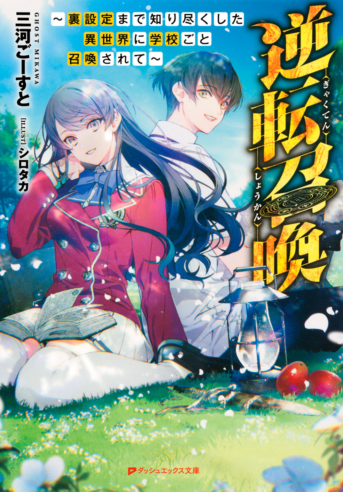
この本は縦書きでレイアウトされています。
また、ご覧になる機種により、表示の差が認められることがあります。
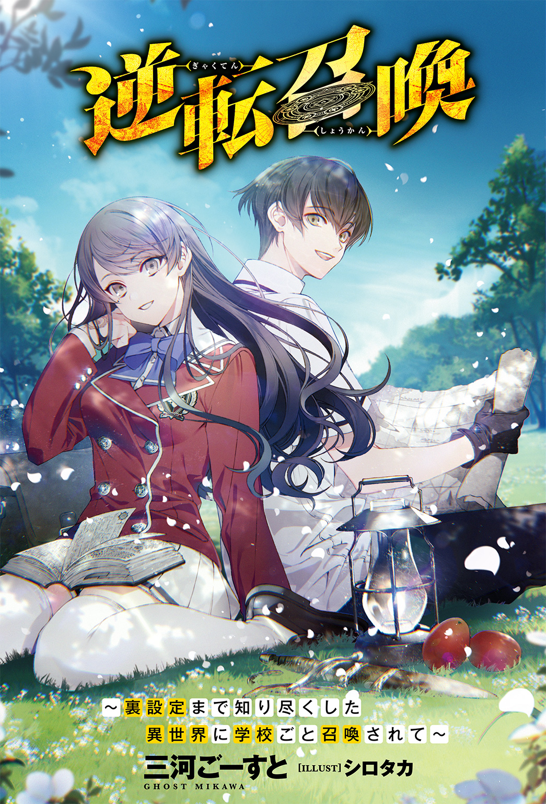
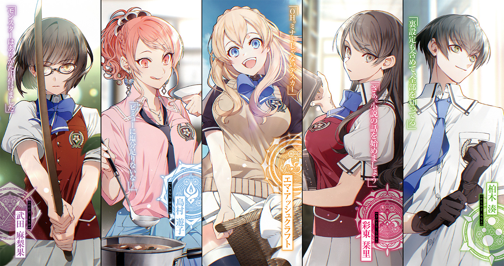
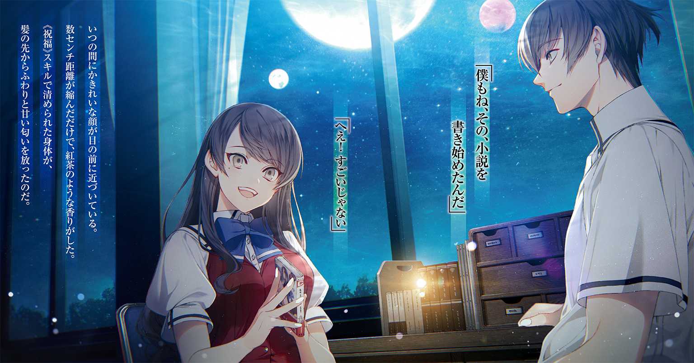
 ダッシュエックス文庫DIGITAL
ダッシュエックス文庫DIGITAL
逆転召喚
～裏設定まで知り尽くした異世界に学校ごと召喚されて～
三河ごーすと
プロローグ 僕と聖女と彼女たちと学校と異世界
これは小説ではなく、現実の話だ。
僕たちは学校の校舎で暮らしていた。
校舎で生活と言うと宿泊学習や部活動の合宿を思い浮かべる人が多いかもしれないが、そうではない。ごく一般的な意味での〝日常生活〟を営んでいるのだ。
校舎と外を仕切る高い柵の向こうは、深い緑色の木々が密集している。狂暴なモンスターのうなり声やドラゴンの咆哮、奇妙な鳴き方の鳥の声が聞こえる。植物の放つ強い匂いや土っぽいケモノのニオイもする。
たぶん八月の頭くらい。正午過ぎ。
僕は〝パーティーメンバー〟の様子を眺めながら、校舎内の廊下を歩いていた。
まず家庭科室の前を通りかかると、僕は開けっ放しのドアから中を覗き込む。
一人の女子生徒が料理を作っている。
長い赤髪をセンス良く結い上げ、大きなピアスとネックレスをして、制服をおしゃれに着こなしている彼女は島村遊子。
古い表現かもしれないが、ギャルとかイマドキの女子高生とか、そういう単語から大勢の人が連想するようなタイプの女子だ。雑誌の読者モデルをやっていて、ＪＫギャルのカリスマ的存在でもあるらしい。
そんな遊子は今、制服の上からエプロンをつけて、鍋からすくったスープをちろりと味見しながらむずかしい顔で首をひねっている。
「ビミョーに塩分足りないな～。うーん、あんまし食塩を使いすぎると、ストック尽きちゃうかな......でも、みんなに美味しいって言ってもらえる方がイイし......」
まるで主婦のひとり言だなぁ。と思いながらも、僕はけっして口にしない。遊子に怒られるからだ。遊子は地味だとか、所帯じみてるとか、そういうイメージを持たれることを極端に嫌っている。
地味ってそんなに悪いことか？ と僕なんかは思うんだけど。それは女心のわからない男の意見らしい。
というわけで、怒られたくない僕は余計なことを言わず、ただ手を合わせて心の中で感謝することにした。いつもおいしい料理をありがとう。
次に僕は廊下の窓から校庭の方に目を向けた。
一人の女子が熊のような怪物と戦っている。
綺麗な黒髪を日本人形みたいにおかっぱにし、黒縁の眼鏡をかけた、地味イメージを寄せ集めた外見の彼女は武田麻梨果。
小柄な身体を大きく動かして、スカートがひるがえるのも気にせずに、麻梨果は熊の怪物と激闘を演じている。右手にはひと振りの木刀のみ。だが五倍は身長差がありそうな相手に対しても、麻梨果は果敢に立ち向かっていく。
熊が腕を振った。剛毛に覆われた太い腕で麻梨果の身体を薙ぎ払おうとした。
それを、麻梨果は避けた。ひらりと華麗に回避した。それから熊の頭の上まで軽々と跳び上がると、木刀の刀身を毛むくじゃらの頭に叩き込む。
額を打ち据えられた熊が苦しげな声を上げて、その場に崩れ落ちた。倒れた熊の真横に着地して、麻梨果はクールにため息をつく。
「......ふう。校内に侵入したモンスターはあらかた片付けたでしょうか」
木刀を小脇に挟みながら、麻梨果は外した眼鏡のレンズを布で拭いた。戦闘終了時の彼女の癖だ。すごくかっこいい。とても様になっている。地味で大人しめの見た目からは想像できないほどの剣さばきだ。さすがは超高校級の剣道少女。
彼女が健在であるかぎり、モンスターは怖くない。
僕たちは安心して暮らしていける。
ありがたや。神様仏様麻梨果様。僕はまた心の中で感謝して歩き出した。
教室棟から職員棟へとつながる外廊下。
そこを通ろうとした僕の目に飛び込んできたのは、これまた女子生徒だった。
天然の金髪とディープブルーの瞳を持ち、男ならば振り返らずにはいられない美貌とスタイルを兼ね備えた少女。
制服姿の金髪少女――エマ・アッシュクラフトは、洗濯物を干していた。部室棟から運び出してきた物干しに女の子モノの下着やベッドのシーツを干しながら、彼女は楽しそうに鼻歌を歌っている。
「おはようございますエマ先輩。毎日こんなことやらせちゃってすみません」
鼻歌のリズムに合わせてお尻を振るエマ先輩に、僕は礼儀正しさを意識して声をかけた。
彼女は先輩だ。僕の一個上だ。遊子は同い年の二年生で麻梨果は一個下の一年生。エマ先輩はパーティーでただひとりの三年生だった。
「ＯＨ。ミナトじゃないデスカー。おはようございマース♪ ――でもでも、今のアイサツはグッドでしたケド、呼び方はリトルバッドデース！ ワタシのことはエンリョなく〝エマ〟って、呼び捨てにしてほしいのデスヨー」
「あはは。でも、エマ先輩は先輩ですから。いつもどおり、先輩、で」
「ウーン......この世界では先輩も後輩も関係ナイと思うのデスヨー......。ファミリーになりきれてないカンジで寂しいデース。パンツも一緒に洗う仲デスのに......。ホラ」
「お、男の前で高々と広げないでください」
「ＯＨ。そうデシタ。大和撫子なら慎ましく広げるべき、デスネ♪」
「大和撫子はそもそも広げないです」
エマ先輩が掲げた下着から僕は慌てて目をそらす。
......すこし見えちゃったよ。黒いのが。あれはたぶんエマ先輩のだ。色の趣味からして。
ドキドキと異様に高鳴る心臓を押さえながら、僕がそんなことを考えていると、僕の困惑の元凶たるエマ先輩がふと尋ねてきた。
「ミナトは今、ナニをしてるんデスカ？ 午後のティータイムでしたら、ワタシもソーキュウにクリーニングを終わらせて、すぐにご一緒できマスヨー？」
「ああいえ、すみません。実はこれから図書室に行かなければならなくて」
「ＯＨ。ライブラリー......なるほど。それは大切な用事なのデス」
「はい。みんなにこうして頑張ってもらってるのに、僕たちだけサボるわけにはいかないですし」
僕が苦笑すると、エマ先輩は真面目な顔で首を振った。
「――大丈夫。ワタシたちはみんな感謝してるのデスヨ。ミナトたちがいなかったら、ワタシたちはたぶんこの世界で生きていけませんカラ」
「それはお互い様ですよ。頑張ってるのはみんな一緒です」
「エヘヘ♪ ミナトはケンキョなのデスネ。そういうトコロも、とっても大好きデスヨー♪」
ぎゅっ。エマ先輩がじゃれつく子犬みたいに僕の身体に抱きついてきた。
......うわ。押しつけられると......やっぱり、やわらかいな。胸。
それに、洗濯の直後だからか？ 柔軟剤を使ったタオルの甘い匂いもする。って、ダメだダメだ。
「待ってストップそこまでで！ このままだと吸われちゃうんで！」
「ＡＨ......そうデシタ。すっかり忘れてたデスヨ」
「激しいスキンシップは女の子たち限定にしてもらえると助かります」
精神的にも下半身的にも。
「むぅ。ミナトともイチャイチャしたいデス」
「......では譲歩に譲歩を重ねて、仕事がないときにお願いします」
エマ先輩はまだちょっと不服そうに唇をとがらせながらも、仕方ないデスネー、と僕の身体から離れてくれた。
やわらかな感触が離れる。ああ、すこし残念だ。
後ろ髪が引かれる思いが大いにありつつも、僕はそれを振り切って歩き出す。
最後のパーティーメンバーである女子生徒――
〝図書室の聖女〟が待つ場所へと。
僕と聖女だけができる『作戦会議』のために。
さて。僕と彼女たちは、大まかにこんな感じに共同生活を送っている。
学校の校舎で互いの能力や特技を生かしながら助け合って生きている。
便利な科学技術や交通手段もなく、魔物が跋扈し、人間でさえも信用ならない、この異世界で。
あらためて言っておくが、これは小説ではなく、現実の話だ。
まぎれもなく僕と彼女たちが経験している出来事だ。
学校の校舎ごと異世界に召喚された――
その言葉だけ聞けば、それは本当に、まるで小説みたいな話なのだけど。
僕たちは、それが現実だと知っている。
けれど――
僕と〝図書室の聖女〟の『作戦会議』は、皮肉にも、聖女のこのひと言から始まるんだ。
「さあ。小説の話を始めましょう」
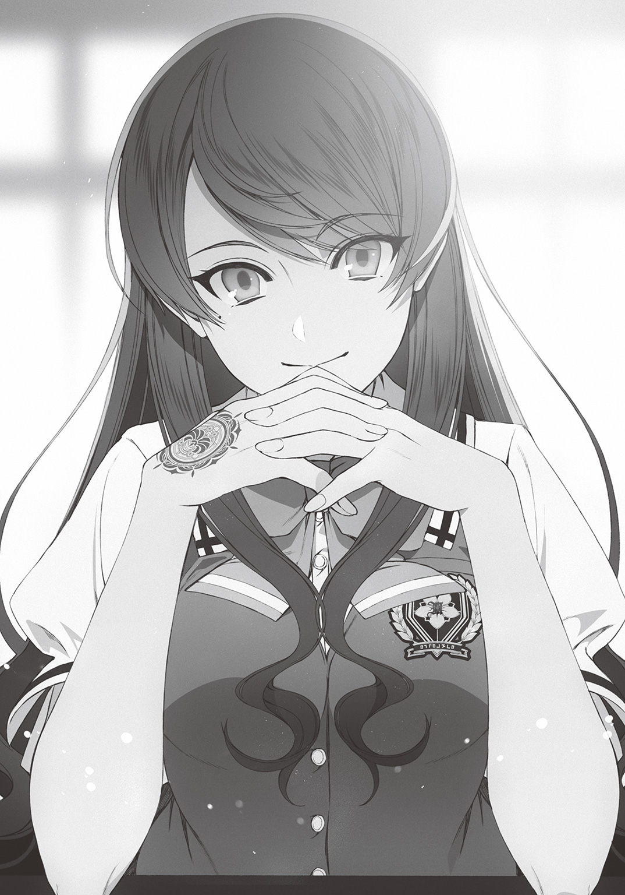
第一章 くだらない日常と、その終わり
時は何週間か前にさかのぼる。
まだ僕も彼女たちも学校の校舎も異世界に召喚されていなかったときの話だ。
五時限目。午後の授業が始まる時間。
旧校舎のくすんだ窓から七月の強い太陽光が射している。
田舎にある中高一貫の私立校。広大な敷地のすみっこに旧校舎は建っていた。中等部や高等部の校舎から遠い場所。林をかき分けた先にある忘れられた場所。
ふだん誰も近寄らない。たまたま人が通りかかることもない。
そんな廃墟じみた旧校舎の廊下を僕――柏木湊は歩いていた。
目の前には男子生徒の背中がある。
高等部二年の教室で僕に声をかけ、ここまで連行してきた存在が無防備に背中を見せている。
もしも僕のポケットにナイフがあったら、コイツはもう死んでいる。
僕の右と左、それから後ろには、男子生徒の仲間がいる。
取り巻きみたいなくだらない連中が、くだらない話をして笑っている。
コイツらは、きっと僕が不審な動きをしても気づかない。
ああ。ナイフがなくてよかった。
これまで毎日のように受けてきた仕打ちを考えれば、僕が肌身離さずナイフを持ち歩いていても何もおかしくない。むしろ自然だ。
だけど僕はコイツらを怖れていなかったから。ゴミがくだらないことしてるな、と心の中で見下しているだけだったから。わざわざ自分の手を汚して犯罪者になる気はさらさらなかったんだ。
本当によかった。もしも今、凶器を持っていたら、僕は彼らを殺していたかもしれない。
これまでは全部を受け止めてきた。
殴られても、パシらされても、タバコの火を押しつけられても、プールに沈められても、裏山の土に首から下を埋められても、ネットで買ったらしいスタンガンの実験相手にされても、僕は耐えてきた。
やり返すべきとも思えなかった。
僕が反抗してくる人間だと知ったら、このくだらない連中はいじめをやめるだろうか？ 否。そしたら僕以外の誰かに標的を変えるだけだ。安全な場所から、安全に痛めつけられる相手を探すだけだ。
もしも矛先が僕の妹や昔の友達に向いたら？
今でこそ僕には友達がいないけれど。中学時代にはそこそこいた。何人かはまだスマホのメッセージアプリやメール、ＳＮＳでやりとりをしている。
僕のスマホを奪って、連絡先を辿れば、コイツらはかんたんに僕の大切な人たちに接近できる。
そう考えると、僕は抗えない。
考えすぎかもしれないけど。何事も最悪の事態を考えてしまうのが僕だった。
教師や警察への通報も考えたことがある。やられたことはきちんと記録しているから、それはいつでもできる。
けれど彼らは未成年だ。一生檻の中で過ごすようなことにはならない。留置所や少年院から出てきたら、誰に何をするかわからない。しかもいじめの主犯格は、地元の有力者の息子。親に金と権力がある。中学時代に刑事事件を起こしたときには、お咎めなしだったらしい。
通報したところで、たぶん今回もそうなるだけだ。
だから僕は反抗しなかった。ただ素直に責め苦を受け続けてきた。
べつにくだらない連中がくだらないいじめを繰り返しても僕は閉じこもったりしない。不登校にもならないし、泣いたりも、自殺したいと思ったりもしない。ただ耐えればいいだけ。
僕が、高校卒業までの限られた時間を耐えればすべてが丸く収まる。それまでは反抗せずに大人しくコイツらのやりたいようにやらせる。それでいい。そう思っていた。
――だけど。
僕は今日、初めて殺意を抱いた。
「ねえ斗真ぁ。ホントにやるのぉ？」
髪を茶色に染めたポニーテールの女子が甘えた声を出して主犯格の男子にしなだれかかった。
僕は彼女の名前を憶えていない。知っているのは、彼女が主犯格と付き合っている恋人だということだけだ。
主犯格の男子――大室斗真は、性格はともかく顔だけは整っている。背も高いし、瞳には凶悪で荒々しい光が宿っている。中学時代はサッカー部。モテる条件自体は備えているから、そりゃ恋人の一人や二人いてもおかしくないけれど。
なんとなく世界は理不尽だなぁ。と思えてくる。
「たりめーだろ。ミナトのヤツに一番刺さるネタをつかんだんだぜ？」
「でも午後の授業フケてまでやることぉ？」
「今回のはとっておきだからな。くくく。短い休み時間じゃなくて、長い時間をかけて、じっくり責め立ててやらねーと」
「放課後じゃダメなのぉ？」
「バッカ。そりゃ放課後はオマエと遊ぶ方が大事だろ」
「あはっ♪ うれし～」
「今日もたっぷりかわいがってやるからな」
大室がニヤリと笑みを浮かべた。
......勝手にやってろ。
ふたりのやりとりを見ながら、僕の心は冷めていた。
大室は、ふと足を止める。
目的地に到着したのだ。
旧校舎二階。古びた木の廊下の一番奥。「資料室」と書かれた部屋だった。
大室が軋んだドアを開ける。埃がもわっと舞った。
ポニーテールの女子が鼻をつまんで抗議する。
「やーん。何ここぉ。じめじめしててカビくさーい」
「郷土資料とか記念品を保管する部屋だからな。ええと目的のブツは......っと。おお、あったあった。へへ。聞いてた通りだぜ」
大室は資料室の壁際にある本棚の前で舌なめずりをした。
「『クレストサーガ』全巻サイン入り。なあ大室。本当にこれ全部燃やすのか？ 売ったら金になりそうだし、もったいなくね？」
取り巻きの一人が意見する。
すると大室は見るからに不機嫌な顔になり、口答えした男子の顔へと拳を突き出した。パンチは男子の顔をかすめ、背後の壁に当たる。ボロい旧校舎の壁はかんたんに壊れて、ボロボロと木くずが落ちる。
「オマエ。俺のすることにケチつけんの？」
「......い、いや、そういうつもりじゃ......ないんだ。その、ごめん」
取り巻きはビビった顔でそう言った。
いつもの光景だ。大室はケンカが強い。だから仲間も力と恐怖で従えている。誰もコイツにさからえない。
ポニーテールが首をかしげて大室に尋ねる。
「でもさぁ。この古い小説を燃やすと、なんで柏木に刺さるのぉ？」
「著者がミナトの祖父さんらしいんだよ。もうくたばってるみたいだけどな。ここの学校のＯＢらしくて、デビューしてから出版するたびに本をサイン入りで送ってたんだとさ。祖父さんと思い出の校舎を繫ぐ絆！ ――ぶっ壊すには最高のブツだろ？」
......クソ。
頭、悪いくせに。
いじめ以外に生きがいのないゴミクズのくせに。
人が嫌がることに対する嗅覚だけはやたらと優れているんだな。
ああそうだ。僕は祖父が好きだった。祖父の書く小説が好きだったし、死ぬ直前まで作品を書き続けた生き様も好きだった。
だから許せないんだ。祖父が学校に贈った大切な本を、こんなクズに燃やされるなんて。
やめろ。そう叫ぼうとした瞬間、頰に鋭い痛みが走った。大室に殴られたのだ。
床に倒れた僕の頭を大室が容赦なく踏みつける。
「今、怒った顔したな。そうそう。いつもそんな顔を見せてくれりゃいいんだよ。平気なフリされると萎えるからさ？ もっと怒って、怯えて、絶望しろよ。な？」
悪魔だ。
コイツは人のフリをしている悪魔だ。
生きているべき人間じゃない。そう思った。
クソ。僕に家族や大切な人がいなければ、悪魔を殺せたのに。
そこから先のことは思い出したくもない。
大室は僕の手足をガムテープで縛ると、無造作に床に転がした。
僕はやめろと叫んだ。
そんな僕を見て大室は笑顔になった。
うれしそうに僕を踏みにじると、僕の目の前で、一冊ずつ丁寧に、本を焼いていった。
ライターの火が本に触れる。
本が灰に変わっていく。
まぶたの裏に橙色の光がくっきりとこびりつく。
大室や取り巻きのヤツらが笑う。
不快な笑い声が、耳に残る。
ポニーテールの女子も、涙目の僕を嘲笑って、スマホで写真を撮っている。
ここには僕の味方はいない。敵しかいない。
......いや、違う。ここだけじゃない。大室たちが僕をいじめていることは、クラスのみんなが知っている。だけど彼らが僕の味方になることは絶対にないのだ。
賢い選択だ。僕は素直にそう思う。
いじめられっ子を助けるなんて、なんのメリットもないことをするのは、英雄か愚者だけだ。
助けたって何もいいことはない。
ただいじめのターゲットが自分に移るだけだ。
見返りがないだけならまだいい。
もともといじめられてたヤツも、助けてもらった恩を忘れて、いじめに加担する。クラスぐるみの無視に加わり、大室に命令されるままにいやがらせをするようになるのだ。
現実は小説やゲームのようにはいかない。
ヒーローを気取ったヤツに、幸せな未来は訪れない。
だから僕の周りには敵しかいない。
僕は、いじめっ子からいじめられっ子を救おうなんて、馬鹿なことを考えてしまったから。
何の得にもならないことをしてしまったから。
それから長い時間をかけて、僕はただひたすらに、祖父の著書が燃やされる様を見せつけられ続けた。
僕はまるで自分自身が焼かれているかのように感じた。
右手が、ジンと強い熱を発した。
その不思議な熱を、このときの僕は心の痛みが感じさせた単なる錯覚だと勘違いしていた。
†
どれくらいの時間が経っただろうか。
僕が浅い眠りから目覚めると、そこは暗くて狭い場所だった。
目を凝らすと、なんとなく雑巾や足元のバケツの存在が認識できた。掃除用具を入れるロッカーの中......だろうか？
手足はガムテープで縛られたまま。さっき、やられた姿のまま。
どこからか虫の声がする。夏の夜によく聴こえる種類の虫の声だ。たぶん外はもうかなり暗くなっているのだろう。
......ああ。そうか。
旧校舎の資料室で僕の祖父の本を焼いた後。
大室たちは、動けない僕の身体を資料室の掃除用具入れに閉じ込めた。
神隠しごっこだなどと、ふざけたことを言っていた。
くだらなすぎてまったく笑えない。
それから、ロッカーの扉に鍵をかけられ、身動きも封じられた僕は、身体を蹴られた疲労もあって眠りに落ちてしまったのだった。
......しかし困ったな。
旧校舎は中等部からも高等部からも離れた場所にある。偶然ここを通りかかる生徒はいないだろう。教師や警備員の巡回ルートに含まれているかも怪しい。
ここで夜を明かすことになるのか？
いやそもそも僕はいつここから出られるんだ？
大室たちがいつまで僕を閉じ込めておくつもりかは知らない。だけどさすがに餓死するほどの時間、放置するだろうか？ ......いや、するな。あいつらなら、やる。
ひやりとする。
もしもこのまま誰も助けに来なかったら――死ぬ。かもしれない。
ふざけるな。
そんなのは御免だ。
どうしてあんなヤツらのために死ななくちゃいけない!?
僕はいもむしみたいに身体を動かした。ロッカーの扉に何度も体当たりをする。肩が痛い。だが扉は甲高い音を立てるばかりで開きそうもなかった。
「くそっ。出せよっ。誰か！ 誰かいないのか！」
僕は叫んだ。誰かがいる可能性は低い。だが何もしないよりはマシだ。
ガンッ！ ガンッ！
音を立てて体当たりをしながら、僕は叫び続ける。
「誰か！ 誰か！」
すると――
ぎし......。と、木床の軋む音が聞こえた。
足音だ。旧校舎の廊下を何者かが歩いている。その音はだんだんと資料室に近づいている。
見回りの大人だろうか？
それとも、大室たちが戻ってきた？
どちらにしろ助かるチャンスだ。
僕はここだ！ と声を上げて存在をアピールした。
資料室のドアが開く音がした。室内に入ってきた何者かは、掃除用具入れの前までやってくると、可憐な少女の声で呼びかける。
「その中に誰かいるの？」
聡明さを感じさせる若い声だった。大室たちではない。教師でもない。
ではいったい誰が旧校舎なんかに？
そんな疑問はあったけれど。今はとにかくここから出ることが大切だった。
「外から鍵をかけられてるんだ。開けてくれると、その、助かるんだけど」
僕は小さな声で言った。相手は女子生徒だ。中等部か高等部かはわからないが。どちらにしても、いもむし状態で閉じ込められてる今の情けない姿を見られると思うと、なんとなく恥ずかしい。
「安物の南京錠ね。ロッカーが古いから強引にこじ開けられるかも」
女子生徒が冷静な声で言った。それから室内を物色するような音が聞こえた直後、ガン、ガン、と扉が叩かれる音が鳴り響く。道具を使って鍵を壊そうとしている音だ。僕は掃除用具入れごと左右に揺られた。
やがて、ロッカーから金属が剝がれ木床に落ちる音がした。
南京錠が外れた音だ。
......よし！
扉が向こう側に開かれていくのを見て、僕は心の中でホッと胸を撫で下ろした。助かった。餓死せずに済んだ。いやまあ冷静に考えれば、夜までに帰らなければ家族が探すだろうし、死ぬまで発見されないこともないだろうけど。
僕は常に最悪の事態を想像する。だから助かったことに素直に安堵した。
このとき僕の頭からは大切なことがふたつ抜け落ちていた。ひとつは自分が現在、両手と両足を拘束された、とてもアンバランスな姿勢であること。そしてもうひとつは、扉を開けてくれた存在がすぐ目の前にいるであろうということ。
「あっ」
「......えっ」
扉が開いた瞬間、僕は身体のバランスを崩して前のめりに倒れてしまった。
女子生徒は僕の身体を受け止めようとした。
「きゃっ」
だがうまくいくはずもない。僕よりも身長がすこしだけ低い女子生徒は、僕の体重を支えきれなかった。僕と彼女は折り重なるようにして床に倒れる。
......あ、まずい。僕はひやりとした。
さいわい僕は彼女の身体がクッションになって、痛みを感じずに済んだけれど。女子生徒は下敷きにされて、腰を打ちつけたのだ。大丈夫だろうか？
自由な首だけを動かして、僕は女子生徒の様子を見ようとした。
すぐに自分の行動を後悔した。
――そこに、とんでもない光景があったのだ。
まず目に入るのはたわわな胸。夏服の半袖ワイシャツのボタンとボタンの隙間がたわんで、薄い桃色の下着に包まれたふくらみが見えている。どうやら胸のちょうど下、お腹の上あたりに僕の頭はあるらしい。
おかげで彼女の身体のやわらかさとか、鼻いっぱいに広がる甘い匂いとか。いろいろなことを意識せずにはいられなかった。
「う......んぅ......」
痛みのせいか、僕の息がくすぐったかったのか、女子生徒の唇から吐息が漏れる。
「や......いつまでそうしてるの......」
女子生徒は僕の肩を手でそっと押しのけながら、潤んだ瞳で弱々しく訴えかけた。
そこで初めて顔が見える。
綺麗な女の子だった。
丹念に織られた絹細工のような長い黒髪。形のいい切れ長の目に黒曜石じみた瞳。顔は化粧っ気もないのに真っ白で、唇だけが熱を帯びたように桃色だ。
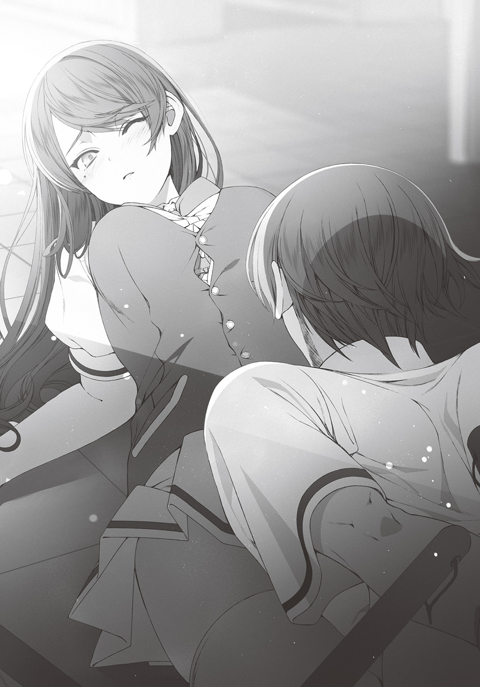
端整な顔立ちの美少女。
僕は、彼女の顔を知っていた。それどころか名前も知っていた。
この学校の高等部二年生で、彼女のことを知らない者の方が少ないのではなかろうか。
彩東栞里。
男女どちらが見てもうっとりするほどの美貌を持ちながら、主要科目五教科学年トップ、全国模試三位という才色兼備っぷり。しかし、けっしてそれをひけらかすことはない。教室ではいつもひとりで静かに読書をし、クラスメイトから話しかけられれば笑顔でたおやかに返事をするという。
図書室の窓辺で彼女が本をめくる姿がまるで一枚の絵のようだと評判になり、二年生の間でついたあだ名が――〝図書室の聖女〟。
まるで漫画や小説に登場するお姫様のようなポジションの女子生徒だ。
いじめられ、クラスの底辺に這いつくばる僕のような人間とは正反対の存在である。
残念なことに僕とは同じクラスではないが、隣のクラスと合同で行なう体育の授業で、僕は何度か彼女の姿を見ていた。
綺麗な子だな。住む世界が違うんだろうな。そう思っていた。
「......あの」
栞里がゆっくりと口を開く。
「そろそろ、どいてほしいのだけど」
「あ！ ご......ごめん」
僕は不自由な身体を強引に動かして、栞里の上から転がり落ちた。
栞里は埃に汚れた髪と服をぱたぱたと手で払い、コホンと咳払いをすると、すこし頰を赤く染めてこちらを振り返る。
「いつまでも胸に顔をうずめたまま動こうとしないなんて。堂々とした変態さんね」
「ご、ごめん。その、こんな状態だから、うまく動けなくて」
「こんな状態？ ......なっ」
僕の姿に気づいた栞里は、目を見開いて小さく声を漏らした。
「鍵といい、拘束といい、徹底しているわね。誰にやられたの？」
「ええと、まあ、大した話じゃないよ。ハハ。趣味みたいなものかな」
僕は苦笑を浮かべて適当なことを言った。
大室たちのいじめに栞里みたいな純粋そうな女の子を巻き込みたくなかった――なんて、カッコイイ理由じゃない。
単なる見栄だ。いじめられてる事実なんてカッコ悪いだけ。栞里みたいな美人にそんな情けない事実を知られて良いことは何もない。
「趣味って......」
栞里は全然信じてなさそうな顔で、どこか切なげにまつ毛を震わせる。
だけど何かを察したのか。彼女は無言で首を横に振った。
「いえ、何でもないわ。とにかく助けるから」
言いたいことや気になることはたくさんあっただろうに。栞里はあえて深く追及してこなかった。僕の身体を裏返して、手足の拘束を解いていく。
自由になった僕は床の上にあぐらをかくと、赤くなった肌をさすりながら、栞里の顔を見上げた。
「ありがとう。助かったよ」
「詳しい事情は訊かない方がいいのよね？」
「ええと、まあ」
「わかったわ。でもこれは確認させて。ここにはいつからいたの？」
栞里の声は真剣味を帯びていた。
だから僕も正直に答えることにした。
「午後の授業が始まった頃かな」
「授業中？ それって......いえ、そこは追及すべきところじゃないわね」
栞里は僕の答えに疑問を感じたようだけど。すぐに察したように追及をやめた。
それからべつの質問をする。
「あなたはその時間から今の今までずっと掃除用具入れのロッカーの中にいた。それで間違いない？」
「うん、まあ」
生返事をしてから僕はポケットから取り出したスマホで時間を確認する。夜の八時を回った時刻。かなり時間が経っている。
電気の点いていない資料室は薄暗かった。栞里の顔がハッキリと見えたのは、ロッカーの中にいたことで僕の目が暗闇に順応しているからだろうか。
「なるほど。だから無事でいられたのね」
「......無事？」
「とにかく今は単独行動は危険よ。一緒に行きましょう」
「いやいや！ ちょっと待って！」
栞里につかまれた手を、僕は反射的に振り払ってしまう。
だってそうだろう。
いきなり単独行動は危険だとか、一緒に行動しようだとか、意味がわからない。
学校にテロリストが来た？ 実は現実の裏側に異能者たちのバトル空間でも存在した？ あるいは未知の地球外生物が現れた？ そんなシチュエーションでもなければ、滅多に聞けないようなセリフではなかろうか。彼女はアレか。流行りの中二病少女というやつだろうか。
だけど僕には彼女がただの痛い子だとは思えなかった。彼女の口調や表情はあまりに真剣すぎる。ただのロールプレイだとしたら、かなりの完成度だ。だから僕も茶化したりせずに、真面目に問いかける。ずっと気になっていた疑問と一緒に。
「えっと。全然意味がわからないんだけど。もしかして、それって、君がこんな遅い時間にこんな場所にいることと何か関係ある？」
「ええ」
栞里は間髪いれずにうなずいた。
「口で説明するよりも、見てもらった方が早いと思う」
「見る？」
「そこの窓から外を見て」
僕は言われるままに資料室の窓に近づいた。汚れたガラス窓の表面を軽く指で拭って、外の景色に目を凝らす。
旧校舎の建っている場所と資料室の位置を考えると、この窓から見えるのは学校の裏口にあたる錆びついた門のはずだ。業者や父兄が車で来校するときに開放されるが、普段は閉ざされていて誰も通らないため、雑草が伸びっぱなしになっている場所だ。
僕はよくこのあたりで大室たちから暴力を受けていた。人目につかないから便利だそうだ。
「あれ？」
だから僕はすぐにおかしなことに気がついた。
「どうして森の入口になってるんだ......？」
僕は呆然とつぶやいた。
裏門の向こう側には道路があるはずで。曲がりくねった道路の先に古びた家ばかりが並ぶ住宅街があるはずだったのだけど。
今、この場所から見えるのは、ただただ暗い口を開ける樹海の入口だけだ。
呆然としている僕の隣に栞里が歩み寄る。
「それだけじゃないわ。空を見て」
「空？」
言われるままに顔を上に向けて、そこにあった異常なモノを目にした瞬間、僕は思わず叫んでいた。
「なっ......なんだあれ。月が三つもある!?」
「そう」
栞里が冷静な瞳を僕に向ける。こんな異常な光景を前にしているのに、月明かりに照らされた綺麗な顔には困惑も恐怖も浮かんでいなかった。
ただ目の前にある事実を述べるだけ。そんな口調で栞里は言う。
「ここは――おそらく異世界。中等部高等部合わせて全校生徒およそ一五〇〇人。その全員が、学校の敷地ごと異世界に招かれてしまったのよ」
異世界？ 全校生徒一五〇〇人が？ 学校の敷地ごと？
栞里の口から告げられたのは、にわかには信じがたいことだった。
ファンタジー小説に慣れている僕でさえ、それが現実の出来事なのだと言われれば、はいそうですかと素直に頷けるわけがない。
しかし僕はこの後すぐに栞里の言葉が事実なのだと知ることになる。
女の子の悲鳴が、闇夜の静寂を切り裂いたのだ。
†
なんだこれは。なんだこの光景は。
旧校舎二階廊下の窓から眼下を見下ろして、僕はぶるりと身体を震わせた。
四つ脚の獣だ。銀色の毛を持つやたらと大きな狼である。人の背丈の倍はある巨大な銀狼がひとりの女子生徒を追いかけていた。
牙の生えた口の隙間から漏れる唸り声は地獄の底から響くかのようで。強い光を帯びた金色の右目は敵意に満ちている。左目には深い切り傷があり、潰れているものの、それがむしろ歴戦の傭兵じみた凄みを感じさせた。
あきらかにただの狼ではなさそうだった。
そう。まるでゲームや小説に登場する、人間を襲う怪物――モンスターだ。
僕は物語の中で何度もその存在を見ているし、自分が趣味で書いているＷＥＢ小説でも登場させている。
だが当然のことながら、本物のモンスターを見たのは初めてだ。
物語の勇者ならばモンスターなんて一瞬で倒してみせるだろう。
僕が書いてきたＷＥＢ小説でも主人公の能力で一撃だった。これまで読んできたいろいろな作品でも勇者はモンスターに果敢に立ち向かい、襲われる人間を救っていた。
けれど、実際はどうだ？
女の子がモンスターに襲われている。僕は彼女を助けるのか？
もちろん彼女の命を助けたいとは思う。見殺しにしたいなどとは思わない。けれど僕が助けに入ったところで、あの狼の化け物に敵うのだろうか。
――無理。無理だ。あんなモンスターに勝てるはずがない。僕が助けに入ったところで、あの女子生徒とふたりで仲良くエサになるのがオチだ。
「シルバーファング」
栞里がぽつりとつぶやいた。
その声に、僕は栞里の顔を見る。
「......それって、あのモンスターの名前？」
「たぶん」
「なんで名前がわかるの？」
「私が読んでた小説に出てくるモンスターの名前。文章から私が想像していた姿によく似ているわ」
「シルバーファング......」
僕はつぶやいた。
その名前の銀狼の怪物が出てくる小説なら僕にも心当たりがある。
『クレストサーガ』――小説家である祖父が書いていた小説だ。
高校生の少年が異世界に召喚されて冒険する王道ファンタジーで、二十五年前に連載を開始しそこそこの人気を得たが、七年前に作者が亡くなり、未完となった。人気作だったとはいえ古い作品なので現代の若い人はほとんど知らないだろう。
まさか栞里がそれを知っているなんて。
......いや、不思議ではないのか。何せ〝図書室の聖女〟なのだから。
「異世界に召喚される状況。三つの月。樹海。シルバーファング。どれも『クレストサーガ』という小説と同じなの」
確定だ。やはり栞里は僕の祖父の小説を読んでいたのだ。
とはいえ、
「偶然の一致。かもよ？ ファンタジーなら特に珍しい設定でもないし」
「そうかもしれない。でも、もしも関係があるのなら。何かこの場を切り抜けるヒントになるかも」
そうつぶやくと、栞里は真面目な顔で考え込んだ。
脅威は現実に目の前で起きている。
なのに小説の情報を頼りにしようなんて、甘い考えに思える。
けれど他にシルバーファングの牙から女子生徒を守るための手立てがないのも事実だ。
何も考えずにただ女子生徒を見殺しにするくらいなら、すこしでも助けるヒントにならないかと考えた方がいい。
なるほど。たしかに栞里の言う通りかもしれない。
「でも......困ったわ」
栞里がすこし悔しそうに唇を嚙んだ。
「あの小説だとシルバーファングは主人公の圧倒的な力で倒されてしまったから。弱点や攻略法は、どこにも書かれていなかった」
「弱点......攻略法......か」
僕は、頭の中で祖父の作品を思い出しながら、小さくつぶやいた。
たしかに本編にシルバーファングの弱点は描写されていない。
それは僕も憶えている。
「......待てよ」
僕はふたたび眼下の光景に目をやった。
シルバーファングが吠え、女子生徒に跳びかかる。女子生徒は地面を転がるようにそれを避ける。地面にしりもちをついたまま後ずさる。攻撃を回避されたシルバーファングは、しばらくきょろきょろとあたりを見回して、数秒遅れて、左手に逃れた女子生徒の姿を見つける。女子生徒はよろよろと立ち上がり、ふたたび走り出す。
その一連の流れに、僕は違和感を覚えた。
あんな巨大な狼に襲われて、女子生徒はどうしてまだ食われていないんだろう？
野生の肉食獣の狩りはレベルが高い。人間よりも警戒心が強くて脚も速いうさぎでさえ、逃げ切れない。捕まって、食べられてしまう。
自然の中で生きる能力に乏しい人間が果たして逃げ続けられるだろうか？
僕は女子生徒とシルバーファングの様子をまじまじと観察した。
よく見ると、女子生徒はなるべくシルバーファングの左側に回るように走っている。
そして、彼女が走り出した直後はシルバーファングの反応がほんのすこし遅れている。
まるで標的の姿を見失ったかのような間を空ける。
ああ、そういえば。
『クレストサーガ』に出てくるシルバーファングは、左目に大きな傷があるせいで視界の左側は何も見えないんだ。だから左側に立たれると弱い。
これは、小説本文には書かれていない。
『クレストサーガ』の裏設定だ。
設定に凝るタイプの――現代風に言うと設定厨である祖父は、執筆の前に分厚い設定資料集を自作する。
そこには作品世界に存在する国や人や道具やモンスターといった、あらゆることについての詳細な説明が書かれていた。
小説本編に登場するものだけでなく、登場しないものについても。
栞里の言う通りに、ここが『クレストサーガ』と同じ設定の世界だとしたら。
裏設定も同じ可能性がある。
シルバーファングが牙を剝きだしにして跳びかかる。
女子生徒が悲鳴を上げてそれを避ける。泣きそうになりながら、走って逃げる。女子生徒の呼吸は荒い。顔は涙と汗まみれ。頰はべっとりと土で汚れ、ひざは擦り傷だらけだ。制服も乱れている。
彼女は目に見えて消耗していた。このままではいずれ体力が尽きて倒れる。そうすれば死角に逃げることもできずに食べられてしまうだろう。
僕が助けなければ彼女は死ぬ。無残に食い散らかされて殺される。
もしも祖父の小説の裏設定が通用するなら、僕は彼女を助けられるかもしれない。
だけど、違ったら。小説世界と似ているなんて僕と栞里の勘違いで、この世界と祖父の小説に何の関係もなかったら。僕はあの女子生徒と一緒に食い殺される。
――見捨ててしまえ。自分の命の方が大切だ。
人を助けたって何も良いことはない。
ヒーローを気取ったヤツに幸せな未来は訪れない。そうだろ？
いじめられっ子を助けたら自分がいじめられたんだ。
自分の命を危険に晒してまで見ず知らずの女子生徒を助けたって仕方ない......はずなのに。
「！ 待って」
何も言わずにいきなり走り出そうとした僕の肩をつかんで、栞里は焦った声を出した。
「どこに行くつもり？」
「あの子を助ける」
「助けるって......でも、どうやって」
「あれがシルバーファングなら。僕は倒す方法を知ってる」
「な......」
僕が真顔で言い切ると、栞里は大きく目を見開いた。
彼女の手の力が緩んでいた。僕は制止を振り切って走り出す。
――ああ。誰かを助けたって何も良いことなんてないのに。どうせまた裏切られるだけなのに。
最後の最後で見捨てられない。僕はなんて中途半端なヤツなんだ。カッコ悪いな、クソ。
僕はそう思いながら走った。
廊下にあった掃除用具入れのロッカーから、自分の身長と同じくらいの長さの柄がついたモップと金属製のバケツを取り出した。
階段を駆け下りて旧校舎の昇降口から外へ飛び出す。
外は暗く、空気は湿っていた。
旧校舎を回り込んで裏手に向かって駆けていく。
むせ返るほどの獣の臭いがした。
巨大な銀狼の背中が僕の目の前にある。
それは近くで見ると、二階から見たときよりもさらに大きいように感じられた。
本当にやれるのか？ ......いや、やるしかない。
シルバーファングはすでに女子生徒の身体を地面に組み伏せていた。
太い前脚で華奢な肩を押さえつけ、牙の隙間からとめどなく唾液を流している。ねばついた唾液がぼたぼたと女子生徒の顔に落ちている。
細くて白い首を食いちぎらんと、大きな口を開けている。
このままだと五秒とかからず彼女は食われてしまう。
クソ。本当に、なんの得にもならないのに。何をやってるんだろうな、僕は。
そう思いながらも僕は、手にしていたモップの柄で激しくバケツを打ち鳴らした。
ガァン！ ガァン！ ガァン！
金属製のバケツを高らかに響かせながら、僕はシルバーファングの方へ走り出す。
シルバーファングがビクリと身体を硬直させた。二秒くらい動きを止めた後、ぶるぶると頭を左右に振って女子生徒の身体の上から飛びのいた。
捕食を邪魔された銀狼は低いうなりを上げて僕をにらみつける。
こっちを向いた。いいぞ。怖いけれど......大丈夫。コイツは大きな音を立て続ければ、一歩も動けないはずなんだ。
目を片方失っているシルバーファングは、そのかわりに聴覚を発達させている。しかし発達しすぎているがゆえに高くて大きな音に弱い。音に威圧されて動きが鈍る。
動物の感覚器官が本当にそのような発達の仕方をするかはわからない。多少、大きな音を立てたからといって、怪物がビビるのは現実的ではない気もする。
だが祖父の小説の裏設定ではそうだったのだ。
これがもしも小説とまったく同じ設定の世界で、同じ設定を持つモンスターだったのであれば、通用する。そうでなければ僕は死ぬ。これはそういう賭けだ。
果たして、その賭けは――
「グ、ルル......」
僕の勝ち、だった。
シルバーファングは四肢を折り曲げ、萎縮したように弱々しいうなり声を漏らす。
バケツを強くたたいてひときわ大きな音を出すと、僕は地面を蹴った。
「うああああああああああああああああああああああ!!」
雄叫びに意味はない。だが声を上げなければ勇気を振り絞れなかった。
怯んでいるシルバーファングの、右目――傷を負っていない方の目に、僕はモップの先端を突き入れた。
ぐにゃり。やわらかなものを突き刺した感覚が手に伝わる。
「グルアアアアアアアアアアアアア!!」
シルバーファングの口から絶叫が迸った。
右目から血を溢れさせて、銀狼は暴れる。激しく振られた前脚が僕の持つモップを弾き飛ばした。とんでもない力だった。僕の握力ではとても敵わなかった。手から離れたモップは宙を舞い、数メートルも離れた地面に落ちる。
武器を失ったが......大丈夫。
シルバーファングには音の他にもうひとつ弱点がある。それは、右目が潰れやすいということ。非力な一般人が木の棒で突き刺しただけでもかんたんに潰れる。そして、右目の視力を失えば、シルバーファングは獲物をほぼ認識できない。
逃げるなら、今だ！
「もう大丈夫！ こっちへ！」
僕はさっきまで襲われていた女子生徒に手を伸ばした。
地面に倒れたまま呆然と僕とシルバーファングの戦闘を見ていた彼女は、ハッと我に返った。僕の差しのべた手を取ろうとする。
二階からでは気づかなかったが、女子生徒は鮮やかな金色の髪の持ち主だった。鼻筋の通った美人さんだ。外国から来た留学生だろうか？ 瞳の色も深い海のような青色だ。
その青い瞳が僕の顔を見て、大きく見開かれる。
いや、違う。彼女は僕を見ていない。僕の後ろにいる存在を見ている。
僕はハッとして振り返った。
目と鼻の先に、獣の太い前脚が迫っていた。
「............ッッ!?」
僕は声を出せなかった。しまった、と言うこともできなかった。
油断した。完全に油断していた。狂暴なモンスターに一矢報いたことで気が緩んでいたのだ。
目を潰されたシルバーファングが、苦しまぎれに暴れる――そして、その攻撃が偶然、僕に直撃する。その可能性を考えていなかった。
太い爪の生えた前脚が僕の顔を薙ぎ払った。
爪で顔の肉がえぐられ、脳みそが揺さぶられ、頭蓋骨が砕かれる感覚。視界が血で真っ赤に染まる。即座に意識が白んでいく。身体は派手に吹き飛ばされているのか。不思議な浮遊感がある。ああ。交通事故でトラックに吹き飛ばされたらこんな感じかな？ などと、どうでもいいことを考えてしまう。
これ、死んだ。絶対に死んだよ。
............だから誰かを助けようとするなんて愚か者のやることだって言っただろ？
ホント......アホだな......――僕は――......さ......。
僕の意識は急激に暗闇の底に落ちていった。
†
僕は本当は英雄になりたかったんだろうか。
誰かが泣いてるのを見て見ぬふりができなくて。みんなに合わせて無視すればいいのに、それがどうしてもできなかった。
祖父の描いた冒険譚みたいに。そこに登場する主人公みたいに生きたいと思っていたんだろうか。
もうその気持ちは忘れてしまった。そんな幼い正義感を振りかざすなんて馬鹿らしいと今の僕は考えている。
......本当にそうなんだろうか。本当に昔の僕は間違っていたんだろうか。
たとえばご都合主義でもいいから世界があとほんのすこし優しかったら。
たとえばたったひとりだけでも、僕を認めて、支えてくれる人がいたら。
僕は、世間知らずな幼いヒーローだった昔の僕を、嫌いにならずに済んだのかもしれない。
目覚めると、僕はベッドの上で寝ていた。
窓の外からは小鳥のさえずりが聞こえる。のどかな朝の陽光が部屋に射し込んでいる。
頭が痛い。何か変な夢を見ていた気がする。突然〝図書室の聖女〟から異世界に召喚されたと言われて、モンスターと戦った。恥ずかしい夢だ。妄想もはなはだしい。
......ん？ 待てよ。ここはどこだ？
僕は部屋の中をぐるりと見回す。
白いカーテン。事務机。四つのベッド。体重計に救急箱が保管された棚。
ああ。怪我をしたときに、何度かお世話になったことがある。学校の保健室だ。
どうやら僕は本校舎にある保健室で夜を明かしたらしい。
自分の足でここまで来た覚えはない。旧校舎に閉じ込められていた僕を見つけた誰かが、運んでくれたのだろうか。
僕が首をひねりながら考えていると、ふいに、ドアの開く音がした。
入口に目をやると、ひとりの女子生徒が、金だらいを胸に抱えて部屋に入ってきた。
天然の金髪と海色の瞳、そして豊満なバストを持つ外国人の少女である。
制服を着ている。制服につけた校章の色からして、どうやら三年生......先輩のようだ。
彼女は僕の顔を見るなり目と口を大きく開けて、金だらいを放り捨てて駆け出した。床に落ちた金だらいから水とタオルがこぼれるのに目もくれず、彼女はむぎゅーっと、僕に抱きついてくる。
「無事だったのデスネ！ よかった！ ハッピー・イン・ザ・アンハッピーデスヨーっ！」
「ハッピー......イン......？ ええと、不幸中の幸い、ですか？ なんか間違ってるような気がしますけど」
「多少の言語の壁はしょうがないのデス。細かいニュアンスはボディランゲージで察してくだサーイ」
「ボディランゲージって、あの、もしかして、抱きつかれて異様にやわらかいものを押しつけられてる現在の状況のことでしょうか」
「ハーイ。肉体言語はグローバルだと聞きマシタ」
「なんかいろいろ間違ってますよ！」
僕は慌てて彼女の肩をつかんで身体を引き離した。ぐいぐい押しつけられていたやわらかい感触が消え、ホッとする。残念な気もするけれど。
僕の手をぎゅっと握ると、金髪少女は泣きそうな顔になる。
「でもホントによかったのデスヨ。ワタシもアナタも生き残れて......ホントに......ワタシ......アナタが目を覚まさなかったら......どうしようって......」
生き残り......か。よくよく顔を見れば、彼女は昨日、僕が助けた女の子だ。つまり昨夜のモンスターとの戦闘は夢ではなく、現実の出来事だったのか。
彼女は敵にやられて気絶していた僕を本校舎の保健室に運び、看ていてくれたんだろう。
「そっか、僕、死ななかったんですね。えっと――」
「あ。自己紹介がまだでしたネ？ ワタシはエマ・アッシュクラフトといいマス」
「アッシュクラフトさんですね。僕は柏木湊」
「ミナトですか。イイ名前デース。あっ、ワタシのことはエマでいいデスヨー。ファミリーネームは長くて呼びづらいのでー」
「ええと。じゃあエマ先輩で」
「エマでいいデスヨ？」
「制服の校章が三年生の色なんで。二年生の僕にとって、先輩ですから。エマ先輩と呼ばせてください」
「むー。上下関係なんて気にしないデスのに」
かわいらしく唇をとがらせるエマ先輩に、僕は苦笑しながら言う。
「とにかくエマ先輩も怪我とかなさそうでよかったです」
「ハイ♪ 命の恩人たるミナトのおかげデス♪」
ぱああっと夏に咲く花のような笑顔を見せるエマ先輩。それはとてもかわいくて、シルバーファングを前にボロボロでくしゃくしゃな顔をしていた彼女と同一人物だとは思えない。
笑っている方が断然かわいい。
「それにしても不思議だなぁ」
僕は自分の身体をぺたぺた触りながらつぶやいた。
エマ先輩が小首をかしげる。
「何がデス？」
「シルバーファングの攻撃をまともに受けたのに、どうして僕は死んでないんですかね？ 頭の中の、砕けちゃいけない部分までぐちゃぐちゃになった記憶があるんですけど」
「ミキサーされてたら記憶には残らないと思うのデスヨ？」
「それもそうですね。脳細胞とか死んでるだろうし。うーん、ますますわからなくなってきました。どうして僕は記憶をそのままに、生きてるんですかね。しかもほとんど痛みもないし、どこかに傷が残ってる感じもしない」
「おそらくそれは、紋章の恩恵ね」
僕の疑問に答えてくれたのは、第三の声だった。
開けっぱなしだったドアから保健室に入ってきたのは、長い黒髪が綺麗な〝図書室の聖女〟――彩東栞里だ。
「紋章デスカ？」
エマ先輩が振り返り、首をかしげる。栞里は腕を組んだまま深くうなずいた。
「右手に刻まれた紋章と、紋章が持ち主にもたらす恩恵――スキルの力よ」
僕は自分の右手を見た。
さっきまで全然気づかなかったけど、たしかにそこには紋章が浮かび上がっている。楕円形の魔物の形をした紋章だ。それはぼんやりと薄青い光を放っている。
よく見たら僕だけじゃない。栞里とエマ先輩の右手の甲にも似たような紋章があった。
エマ先輩はＯＨ......と目を丸くして、自分の紋章を興味深そうに眺めている。
「紋章とスキルか。ますます『クレストサーガ』だなぁ」
僕は苦笑した。
これもまた祖父の書いたファンタジー小説に出てくる設定だ。
異世界に呼ばれた少年の右手には紋章が浮かんでいた。召喚された少年少女はその世界の神の恩恵を受けて、紋章と特殊なスキルを授かる。
どんなスキルをもらえるかは紋章の属性と個性で決まっていたはずだ。
属性は、英雄、魔物、神、悪魔、精霊の五つ。
授かった紋章の性質に合わせて、英雄や魔物や神や悪魔や精霊といった、超常の存在と同じ力を得られるというわけだ。
個性とは属性の中でさらに細分化された性質のこと。
たとえば有名どころでいうと、英雄属性でアーサー王の個性を持った者は、アーサー王の伝説から想像されるような力を得られる。
魔物属性ならこの世界に存在するモンスターと同じ力が手に入る。たとえばさっき倒したシルバーファングの個性を持つ人間は、聴覚と嗅覚に優れ、敏捷と腕力が高まる。
僕の紋章は......これはなんの種類だったっけ？ 設定資料集は読んだけれど、紋章の細かいデザインまではいちいち憶えていない。
現実にモンスターがいるんだし、できれば戦闘能力に秀でた英雄属性あたりの紋章が欲しいところだが......。
「ちょっといいかしら？」
「えっ」
「動かないで。目も閉じないで。私のことを見つめて」
栞里が僕の顔を両手ではさんだ。やわらかな手の感触にどきりとする。その格好で、黒い瞳をじっと向けられると、なんだかキスする五秒前みたいだ。
いやいや、やばいって。栞里みたいなとんでもない美人に顔を近づけられて、まじまじと見つめられたら。反応しちゃいけない部分が反応しそうになる。
たっぷり五秒ほど見つめ合った後、栞里はようやく僕の顔を解放した。
「なるほど、わかったわ」
「わかったって......え......っと......。今、何かした？」
「ええ。あなたの紋章の種類とスキル、それからステータスを鑑定したの」
「鑑定？」
「私の紋章は神龍――戦う力はほとんどないけれど、人の目を見るだけで紋章やステータス、スキルを読み取れる」
「鑑定眼......か」
ここが本当に小説と同じ理が通用する世界だとしたら、それはかなり便利な技能だ。自分にどんな能力が与えられているのかは、自分でもわからない。人の目を見るだけで読み取れるなら、大きな情報アドバンテージを得られるはずだ。
さて。彼女の目から見た僕の属性と個性はいかに？
「スライム」
栞里は僕の顔を見て、クールに言い放った。
「............え？」
反応が十秒くらい遅れた。
栞里はあくまで冷静な表情を変えずに淡々と言う。
「魔物属性で、個性はスライムね。スライムの場合、身体能力などのステータスに特別な補正はないみたい」
「うそだろ......」
スライムと言えばファンタジーゲームにおいて最初の戦闘で蹴散らされる運命にある最弱の雑魚モンスターだ。勇者がちょっとでも強くなったら、すぐに瞬殺されるようになる。
なんだそれ。なんの恩恵にもならないじゃないか。
このモンスターが実在する世界で生きていくのに、スライムは厳しすぎるだろ......。
「落ち込む必要はないわ。ステータスの補正がないかわりに優秀なスキルがふたつある」
「スキル？ ......えっと、『クレストサーガ』だとスライムのスキルはたしか......」
「ひとつは《学習》よ。この世界のスライムの身体は一度受けたダメージを記憶し、それに合わせて耐性を習得する。耐性を得たら同じ種類の攻撃を完全に無効化できるみたいね。うん、やっぱりこれが理由じゃないかしら」
ああ、そうだった。たしかに祖父の小説ではスライムにはそんな裏設定があった。
普通のスライムはあまりにも弱すぎて、耐性を習得する暇もなく、だいたい一撃で殺される。
習得するために準備しておこうとする賢さもない。
だから野生のスライムに強い個体はほとんどいないのだが、偶然に偶然を重ねてダメージを受けても生き残ったスライムは、あらゆる攻撃を無効化するチートな存在になるのだという。
つまり、僕がシルバーファングに襲われても無傷で生きているのは――
「僕は物理耐性をすでに習得している？」
「ええ。私にはあなたの耐性も視えているけれど、たしかに物理耐性があるわ。普通の打撃攻撃や斬撃では、たぶんダメージを受けないと思う」
「他には？ 物理耐性の他に、僕がすでに習得してる耐性はある？」
僕の質問に栞里は一瞬だけ表情を強張らせる。
あれ、何か怒らせるような質問でもしたか？ と僕はすこしだけ心配になった。
だけど栞里はすぐに元のクールな顔に戻って、首を横に振る。
「......いいえ。残念ながら物理耐性だけね。いろいろな耐性があったら、盾になってもらおうと思ったのだけど」
「う......もしかして君、結構容赦ない性格？」
「冗談よ」
「クールな顔で言われても冗談には聞こえないなぁ」
僕は苦笑する。
栞里は、まあとにかく、と話を戻した。
「あなたが無事だったのはこの物理耐性のおかげね。もしかしたら私と会ったときに床に倒れた衝撃で《学習》していたのかも」
「あんなもので《学習》が適用されるのかな」
「......まあ細かいことはいいのよ」
細かいこと、だろうか。わりと大事なことだと思うのだけれど。
そう思ったが、栞里がこれ以上この話題を続けたくなさそうだったので、僕も掘り下げて尋ねないことに決めた。話を変える。
「もうひとつのスキルは？」
「《反射》ね」
「それって......攻撃を受けまくって、ダメージを倍返しする能力......だよね？」
「ええ」
「耐性習得といい......カウンターといい......なんで殴られること前提の能力ばっかり......」
「期待しているわ」
にっこり。栞里の笑顔はかわいかった。......容赦のない笑顔だ、と僕は思った。
召喚前まで一度も彼女と会話したことがなかったけれど。〝図書室の聖女〟がまさかこんな性格だったなんて。もっと普通の文学少女かと思ったのに。いや普通の文学少女ってなんだよって話だけれど。第一印象も、おしとやかで心優しい淑女だったんだけどなぁ。
どちらかというとクールで強かな参謀タイプ――頭脳バトルの主人公になれそうな子だ。美人は美人なんだけど。すこし僕の苦手な女の子かもしれない。
そのとき、エマ先輩がにゅっと割り込んできた。
「よくわかりませんが、楽しそうな話をしてますネ！ ワタシの紋章はなんデスカー？」
「あなたは......悪魔属性、みたいね」
まじまじとエマ先輩の目を見つめた後で栞里はそう言った。
悪魔。なんか意外だ。
エマ先輩は陽気な笑顔が魅力的で、悪魔というよりは、どちらかと言えば女神とかそんな感じだと思うのだけど。
「ＯＨ......ワタシは悪魔なのデスネ。神様を信じてるワタシが悪魔なんて......そんな......そんなの――」
ああ、そうか。エマ先輩は見るからに外国人。もしかしたら留学生かもしれない。日本と違って米国や英国では無宗教の人の方が珍しいくらいだというし、エマ先輩も日頃から教会でお祈りする習慣があったりするのかも。
悪魔属性なんて言われるのは心外だろうな。
「そんなの――カッコイイデス！」
「......はい？」
「神を信じる悪魔！ ワクワクしませんカ？ ワタシのヒーローマインドがキュンキュン高鳴りマース♪」
エマ先輩は両手をぶんぶん振って、はしゃいでいる。......わからん。エマ先輩の感性がよくわからない。宗教的には、悪魔を受け入れても問題ないのだろうか。ううん、無宗教の僕にはやっぱりわからん。
僕は首をかしげながら栞里に問いかける。
「......で、エマ先輩が悪魔属性なのはいいとして、個性は？」
「サキュバスよ」
「............あー」
納得。はしゃいで身体を動かすたびに、ばるんばるんと揺れるエマ先輩の無防備な胸を横目に見る。うん、たしかに男性を誘惑し、精を搾り尽くす夢魔――サキュバスにピッタリだ。
ベタベタと触れてくるし。
「エヘヘ♪ サキュバス、サキュバス♪」
自分が男を手玉に取る淫魔の個性を持つと知らされても、エマ先輩は笑顔で声を弾ませていた。サキュバスの意味を知っているのか、いないのか。無邪気に喜ぶ姿はとてもかわいいのだけれど。なんだか妙に落ち着かない気分にさせられるな。
これもまたサキュバスの能力だったりするのだろうか？
......誘惑されないように気をつけないと。
「どうしてアッシュクラフトさんがこんなに喜ぶのかはわからないけれど。まあ、拒絶されるよりはずっといいわね。紋章はどうせ変えることなんてできないし」
栞里は腕組みしたままエマ先輩の様子を眺めて、保護者めいた表情で息を吐いた。
それから栞里はふと思い出したように、僕に声をかける。
「ああそうだ。今更だけれど、質問してもいいかしら？」
僕はうなずいた。
「うん。なんなりと」
「あなたの名前は？ 私は彩東栞里というのだけれど」
本当に今更だ。そういえばまだ自己紹介をしていなかったんだっけ。
そう思いながらも僕は答えた。
「柏木湊だよ。よろしく彩東さん」
心の中では呼び捨てにしていたけれど、馴れ馴れしすぎるかと思って、僕は苗字にさんづけで呼んだ。
栞里は、そう、とつぶやいて。
「これからよろしく、柏木くん」
微笑を浮かべながら、苗字にくんづけで呼んできた。
......ああ、栞里は基本的にクールで容赦ないけれど、やっぱり美人だし、ちょっとでも笑うとかわいいんだよな。エマ先輩とは正反対の冷たい魅力に胸が高鳴る。サキュバスの能力とか関係なしに、僕がチョロすぎるだけなんだろうか。くっ、あまり認めたくないな、それは。
などと僕が葛藤していると、栞里は「さて」とつぶやいて、くるりと踵を返した。
「柏木くん、もう動ける？」
「あ、うん。一応」
「そう。なら行きましょうか。今はとにかく時間が惜しいから」
「行くって......どこに？」
僕が尋ねると、栞里は僕とエマ先輩を振り返って、ニコリと微笑む。
「図書室よ。そこに他のメンバーがいるから」
「他のメンバー？」「デスカ？」
僕とエマ先輩が同時に小首をかしげた。
栞里は真面目な顔でうなずいた。
「ええ。校舎に残っていたのはあなたたちだけじゃないの」
†
図書室までの道すがら――
栞里はこの学校に起きた異変について教えてくれた。今、僕らの学校に何が起きていて、どんな事態に巻き込まれているのか。僕が旧校舎のロッカーに閉じ込められていた間に、何が起きたのか。
栞里は、それをゆっくりとした口調で、語り始める。
事の始まりは五時限目の授業中。
きっかけは大きな地震だったらしい。
校舎が壊れるのではないかというほどの大地震で、窓はきしみ、視界はブレて、生徒たちは悲鳴を上げながら机の下に隠れた。教室から逃げ出すことはできなかったらしい。あまりにも揺れが強すぎて、一歩も歩くことができなかったのだ。
地震は十秒ほど続いた。
揺れが収まって、窓から外の様子をうかがった栞里は、自分の目を疑ったという。
正門の向こうは長い下り坂になっているはずなのに。そこには深い緑色の森が広がっていたのだ。突然、学校の敷地の外が樹海と化した。
そして――さっきまで板書をしていたはずの教師が忽然と消えている。
おかしな現象が起きた。そのことに生徒たちはパニックを起こした。震え上がって叫ぶ者、家に帰ると喚く者、非日常的な出来事を前にわくわくしてはしゃぐ者。反応はさまざまだったが、ほとんどの生徒がまともな精神状態ではいられなかったそうだ。
栞里は冷静に動くように呼びかけた。最初はその声に耳を傾ける生徒も多かった。だがその秩序はある出来事をきっかけにあっさりと崩壊した。
モンスターが現れたのだ。
樹海の中からさまざまな姿の怪物がやってきた。動物に似た姿のものや醜い人型のゴブリンなど。ファンタジーの世界でしか存在しないようなモンスターが、学校の敷地に侵入し、生徒たちを襲った。
生徒たちは恐怖と混乱のままに逃げ出し、散り散りになってしまったらしい。
そして栞里は、本校舎に残っていた二人の生徒と出会った。
三人で生き残りのために協力することを決めた後、栞里は他にも無事な生徒がいないかを探すために、モンスターの目を盗みながら旧校舎まで足を運んだ。
そこで――僕と出会った。そういうことらしい。
聞けば聞くほど栞里の冷静さと大胆な行動力には驚かされる。ちょっと腹黒な冷たい性格かと思いきや、やっぱり意外と良い子なのかもしれないとも思えた。
だってそうだろう。モンスターが外をうろついているのがわかっているのに、生存者の確認のためだけに旧校舎にやってきたんだ。暗い夜、モンスターと遭遇するリスクを冒しながら、本校舎から旧校舎までの長い道のりを歩いてくるなんて。
並大抵の精神力ではできないと思う。そして僕は彼女がいなければいまだにロッカーの中だった。
だから栞里は腹黒のようでいて実は良いやつなんだ。少なくとも僕はそう考えるようにしようと思った。
話を聞いているうちに図書室に着いた。
僕らが通う高校の図書室は本校舎の一番端にある。教室六つぶんくらいの広さだ。クリーム色のカーテンと観葉植物で彩られている。
なるほど。いかにも聖女が窓辺で本をめくっていそうだ。
最近は生徒からの要望でライトノベルや海外のファンタジー小説も多く扱っている。が、栞里によると、残念ながら絶版本は扱っていないらしく『クレストサーガ』は置かれていなかった。ＯＢの作品だから昔は置かれていたのだろうけど、紛失するか破損するかして、それっきりなのだろうということだ。
さて。そんな図書室の奥――自習スペースのテーブルに二人の女子生徒がいた。
正反対な印象の二人だった。
片方は髪を赤々と派手に染め上げた、いかにも遊んでいますと言わんばかりの見た目の女子。
そしてもう片方は、黒髪おかっぱ眼鏡という地味要素を固めたような女子。
二人は会話することもなく、なんとなく居心地が悪そうに座っていた。
赤い髪の女子は、図書室に入ってきた栞里を見ると、どこかホッとしたような顔で小走りに駆け寄ってくる。
「ちょっとしおり～ん！ おっそ～い！ アタシをこの子と二人っきりにしたまま放置しないでほしいんだけど！ すっごいやりづらいんだから！」
「遊子。その言い方は武田さんに失礼よ」
「しょーがないでしょ。だってこの子、全然しゃべらないし」
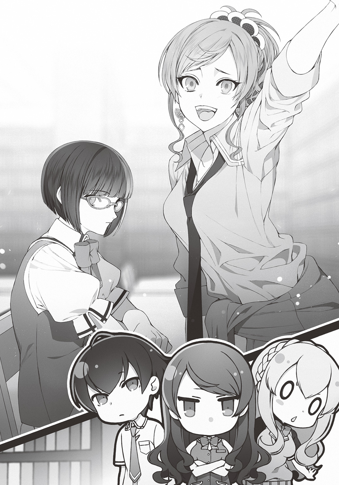
「はあ......。そこは年上のあなたが彼女に合わせて、優しくしてあげるべきところだと思うのだけど」
栞里は呆れたように肩をすくめる。
「そんなことだと、柏木くんとアッシュクラフトさんにもドン引きされるわよ」
「柏木......？ アッシュ......？ おっ。昨夜、しおりんが拾った二人じゃん！ 目ぇ覚めたんだねえ。よかった～！」
バシバシ。赤い髪の女子は僕の肩をたたきながら、白い歯をニッと覗かせて、カラカラと明るい笑顔を浮かべた。
「アタシは二年の島村遊子。よろしく！ ユッコでいいかんね」
「僕は柏木湊。えっと、よろしく。島村さん」
「ちょい待ち」
いきなり僕の胸倉をぐいとつかむと、遊子はずずいと顔を近づけてきた。高校生らしからぬしっかりメイクを決めた顔が目と鼻の先に迫る。アイシャドウの入った瞳がじっとりと僕をにらみつけた。
「アンタ、なんで島村さんって呼ぶわけ？ ユッコでいいって言ったじゃん」
「いや初対面でそれはいきなりフレンドリーすぎるんじゃないかと」
「遊子でも遊子さんでも遊子様でもなんでもいいけどさ。島村って呼ぶのはやめて」
真剣な顔と口調で遊子は言う。
「えっと......。なんで？ って、理由を訊いてもいいのかな」
苗字を呼ばれるのを嫌がる女の子。なにか事情があるんだろうか。ラノベや漫画だと複雑な家庭環境のせいで苗字を嫌がる美少女はテンプレだけど。これは現実だぞ。なんか生々しくて重い理由があるんじゃなかろうか。
遊子はその理由をこう語った。
「苗字ってさ～、なんかイケてないっていうか、ダサくない？ カワイイあだ名とか下の名前でフランクに呼び合う方が今風だと思うんだよね」
軽っ。予想外にまったくもってどうでもいい理由だった。
栞里がやれやれと肩をすくめる。
「放っておいていいわよ、柏木くん。遊子は地味イメージを持たれるのを嫌ってるだけ。イケてるアピールがしたいからというだけで雑誌の読者モデルになるような残念な子だから、まともに相手をすると疲れるわよ」
「ひどっ!? ちょっとしおりん、その言い方ひどくない!?」
「本当のことでしょう」
「残念って言ったら、アンタだって〝図書室の聖女〟なんて言われてるけど、本性はその毒舌なトコロじゃん！」
「私はべつにキャラを作っているわけじゃないもの。ただ読書をしているだけで、周りが勝手に変な呼び方をしているだけ。あなたと一緒にしないで」
「ぐぬぬ......！」
栞里が冷たく言い放ち、遊子は唇を嚙んだ。
あれ？ 二人のやりとりはなんだか慣れた感じだな。
「島村さ――遊子と、彩東さんは、もともと知り合いだったの？」
「クラスメイトよ。残念ながら小学生の頃からの腐れ縁でもあるけれど」
「......ねえ、前々から思ってたんだけど、しおりんってアタシのこと嫌いなの？」
「べつに。『地味は良くない』と私の黒髪や服装に事あるごとに口を出してくるのがうっとうしい――なんて思ってないわよ」
「絶対思ってる！ それ絶対思ってるよね!? ......ちぇー。しおりん美人だし、カワイイ格好してほしいだけなんだけどな～」
遊子は髪先をいじりながら唇をとがらせた。
......派手な外見の女子は、大室たちと教室で仲良くしていた女子グループの連中を思い出すから、あまり好きではないのだけど。
栞里とああだこうだとやり合ってる遊子からは、まったくと言っていいほど、嫌な感じがしなかった。むしろ気さくで話しやすいとさえ思える。
その後、エマ先輩が陽気に自己紹介をした際に、横文字の名前を聞いた遊子が「本名なのに超カッコイイ！ アタシも外国に生まれたかったな～。アメリカとかロサンゼルスに！」と食いついたりといった一幕があり（国と都市を同列に語ることにツッコミを入れたい気持ちを僕はぐっとこらえた。つっこむとめんどくさそうだったから）――
ひと息ついたところで、栞里が最後のひとりを紹介した。
「彼女は一年生の武田麻梨果さん」
「......よろしくです」
麻梨果は無愛想にこてんと頭をさげた。声が小さく表情も硬い。クールな表情は栞里と似ているけれど、麻梨果の方はやや距離を感じる。
栞里は素のテンションが低いだけで他人とコミュニケーションを取ること自体は苦手ではない、必要に応じて笑顔を作れるタイプ。
一方でこちらの麻梨果は人と接すること自体が苦手というか、嫌いなんじゃないか？ と思えるようなとげとげしさがある。
......というか、なんとなく警戒されているような？
そんな感情を僕の表情から察したのか、栞里は僕の肩に手を置いて、大丈夫、と言ってうなずいた。
「私とも遊子とも初対面だし、ここには年上しかいないから、緊張しているのかもしれないわ。彼女は他の生徒たちがパニックを起こす中、本校舎の教室に残っていた冷静な判断力の持ち主よ。この状況下ではとても頼りになる」
「ハハ。その点を心配してたわけじゃないんだけどね」
「よかったじゃない、柏木くん。年下のかわいい女の子と一緒なのはうれしいでしょう？」
栞里はにやりと意地悪に笑う。
......何を言い出すんだこの聖女――いや、この悪女は。
僕が返答に困っていると、麻梨果がぼそりと口を開いた。
「や、お世辞とかいらないです。わたしがかわいくないことはわたしが一番よく知っているので」
......とんでもない卑下っぷりだ。
うーん。かわいくない、なんてことはないと思うけれど。たしかに遊子みたいにおしゃれをしているわけじゃないし、地味な印象はある。
だけど顔立ちはむしろ超かわいい。無愛想に眉をひそめる様子も、なんだか不機嫌な子猫みたいで。嫌われてでも構ってあげたくなる。いや、まあ、僕自身は初対面の年下女子と積極的に触れ合えるようなキャラじゃないのだけれど。
なんて思っていたら、エマ先輩が何の遠慮もなく麻梨果に抱きついた。
「ＯＨ！ 日本産・ノロイ・ドールみたいでベリーキュート♪ わしゃわしゃしてあげたいのデスヨー。わしゃわしゃー♪」
「......あの。髪が乱れるので」
頭を撫でられて、麻梨果が迷惑そうな顔で身をよじる。
エマ先輩は満面笑顔のまま麻梨果から離れた。
「ゴメンネ！ キュートすぎたのでついハグしちゃいマシタ♪ ワタシはひとりっ子なのデスが、マリカは理想のシスター像なのデスヨー♪」
「......はあ。そうなんですか」
麻梨果は微妙な顔でそう言った。
まあ無理もない。いきなり理想の妹だと言われても困るよな。
それにしてもエマ先輩のスキンシップの激しさは男女も年齢も垣根がないらしい。異世界に召喚された、なんて異常事態において、その明るさは心強いけれど。よく初対面の相手に遠慮なく抱きつけるなぁと内気タイプの僕は感心してしまう。
そのとき、栞里が全員の顔を見渡して、口を開いた。
「自己紹介は終わったわね」
「これで全員なの？」
僕が尋ねると、栞里はうなずいた。
「ええ。私と、遊子と、武田さんと、アッシュクラフトさんと――そして柏木くん。この五人だけよ」
「他の生徒はもしかして......モンスターにやられて......？」
「残念ながら、そういう生徒も、いるわ。それ以外の生徒の行方は正直わからない。学校の敷地内のどこかにまだ隠れている可能性もある。ただほとんどの生徒は、校舎に侵入したモンスターから逃げて、散り散りに」
栞里がそう言うと、麻梨果がぽつりとつぶやく。
「......全員が一斉に校舎の外に逃げたから、校舎内に侵入していたモンスターも彼ら彼女らを追いかけるように外へ行きました。結果的に、最初に襲われた校舎の中が一番安全になったわけですが――絶対にそういう流れになるから、ウチのクラスだけは校内に残った方が賢い......とわたしは忠告したのに」
麻梨果の独白に続けて、遊子もうなずく。
「そだね。しおりんも同じこと訴えたけど、ウチのクラスの連中、誰も聞かなかったし......。アタシは、あきらかにおかしな状況だからさ、なんとなくこーいうときは、いつも冷静なしおりんの言うことを聞いとくのが安心だと思ったんだよね」
なるほど。理性で判断したにせよ、直感で行動したにせよ、ここに残っているのはおそらく正解を引き当てた生徒だ。よくわからない異世界で森の中に入るなんて自殺行為。すこしでも馴染みのあるこの校舎を根城にするべきなのに。
......まあロッカーに閉じ込められていたからたまたま校内に残っていただけの僕が、偉そうなことを言える立場ではないけれど。異世界召喚の瞬間に自由の身だったら、どうしていたかな？ ......いや、過ぎたことを考えても仕方ないか。
とにかくここにいる五人は生きているし、生き残るために有利な状況にあるんだ。
......しかしあれだ。僕以外、全員女子なのか。しかも、全員、かなりかわいい。
異常事態じゃなければ、もっと素直に喜べたんだろうなぁ。
「さて。本題はここからよ」
栞里が二度、手を打って、みんなの注目を集めた。
「これからこの五人で協力して行動することになるのだけど、その前に、すでにわかっていることの情報共有のためにも、今の状況をきちんと整理しておきたいの」
図書室の奥に置かれていたホワイトボードを引っ張ってくると、栞里は黒マーカーで現在の状況をひとつひとつ箇条書きにしていった。
・全校生徒と学校の校舎はおそらく異世界に召喚された。
・何故か教師や事務員といった、生徒以外の人間は召喚されていない。
・どうやら校舎は深い森の真ん中に存在する。
・森にはモンスターが住んでいて、学校の敷地にも侵入してくる。
・ここにいる五人以外の生徒は学校の敷地からすでに出て行ってしまった。
・モンスターに襲われて死亡した者もいる。（これは栞里は目の前で目撃したらしい）
・死亡した人間はゲームのエフェクトのように光の粒子になって消えてしまう。（校舎のどこにも死体が残っていないのは、そのせいらしい。たしかに廊下や窓には血痕が残っていた）
・電気や水やガスは通っていないが、携帯コンロや非常用のペットボトル入りの水などは家庭科室と事務室に備蓄があった。
・スマホ自体は機能しているが、ネットには繫がらないし、通話もできない。
それから紋章についての情報も共有した。
五人全員の紋章とスキルは以下のようになっている。
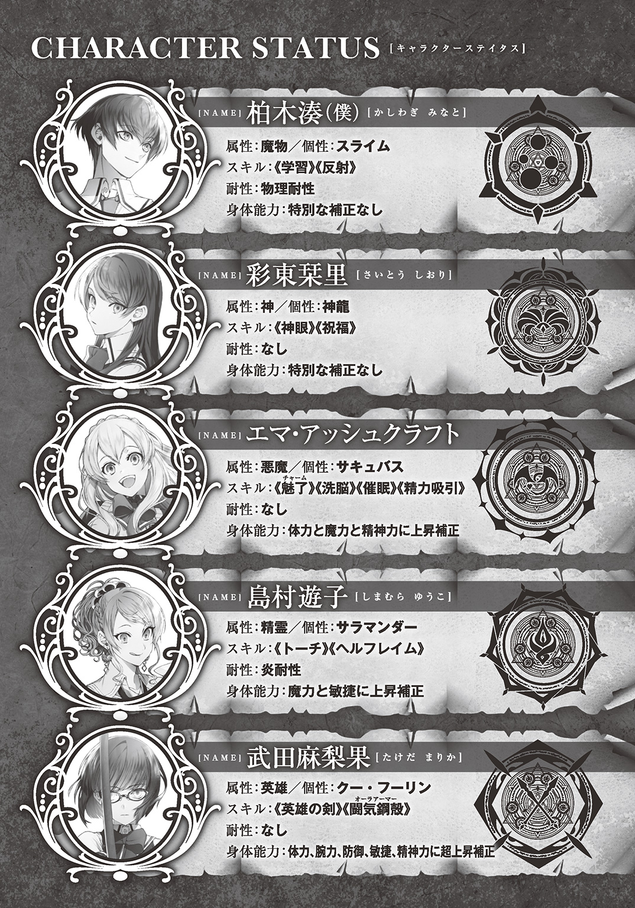
栞里の《神眼》とは鑑定眼のことだ。
《祝福》は傷を治したり、身体の汚れを浄化するスキルらしい。風呂があるかもわからない世界ではとても助かる。
エマ先輩はサキュバスらしく異性を誘惑したり、精神を操ったりするスキルが多かった。前に立ってモンスターと戦うのではなく、後ろからサポートするタイプだ。
遊子は暗い中でも明かりを灯せる《トーチ》と攻撃系炎魔法である《ヘルフレイム》。
エマ先輩と遊子には魔力の上昇補正があるが、やはりこの世界には魔法が存在するんだろうか。祖父の『クレストサーガ』と似た世界なら当然のこととはいえ、まさにファンタジーそのものだ。
そして麻梨果。圧倒的な身体能力補正が強みだ。たしか裏設定では、英雄属性の紋章保持者のほとんどが優れたステータスを誇り、肉弾戦が得意だったはず。
スキル欄にある《英雄の剣》とは特に剣の扱いに優れているという意味である。
《闘気鋼殻》は防御力を大幅に高めるスキル。
攻撃と守備両方に優れた典型的な前衛アタッカーだ。
盾役になれる僕と才能を見切れる眼を持つ栞里、先陣を切って戦える麻梨果に遠距離攻撃可能な遊子、サポートに優れたエマ先輩――。
属性はバラバラだが、これはなかなかバランスのとれたパーティーなのではなかろうか。
「スキルや能力補正で何がどこまでできるのかはあとで確認しましょう。ここまでで何か質問のある人はいる？」
説明を終えた栞里は全員の顔を見回して問いかけた。
ゲームや小説の話にしか聞こえないのだけれど。この場にいる誰もがそこに疑問を挟もうとはしなかった。
実際にモンスターを目にして、戦ったのだ。今更そこを気にする子はいないのだろう。あるいは、そんな異常事態にあっさり順応できる五人だからこそ、他の生徒と違って本校舎に残っていたのかもしれない。
みんなは互いに互いの顔を見て、ふるふると首を振った。
僕だけが軽く手を挙げて発言する。
「とりあえずの目標は？ このままぼーっとしていても何も解決しないと思うけど」
「当面は生き残ることね。生存することが最優先。私たちに何ができるのかを確かめてから、またあらためて行動を決定したいと思っているわ」
「なるほど」
たしかに元の世界に戻る方法を探すのか、森に散っていった他の生徒を探すのか、そういった細かいことはまたあとで考えればいい。
やはり遊子の言う通り、栞里は冷静で頼りがいがあるな。
「他に質問はないわね？ それじゃあ、まずは私たちのスキルや身体能力を試すわ。みんなモンスターの気配に気をつけながら校庭に出ましょう。モンスターに遭遇したら逃げるか隠れてやり過ごすこと。無理な戦闘は禁物よ。窓や昇降口は開けたら必ず閉じるように」
「はいはーい」「わかりマシター♪」「......はい」
三人の女の子たちは、それぞれ返事をして、図書室を出て行く。
僕もそれについていこうとした。
だが僕は図書室から出る前に足を止めることになる。
――栞里に、呼び止められたのだ。
「柏木くん」
栞里はその大きな瞳で僕の目をまじまじと見つめてきた。心の奥底まで見透かされそうな瞳。僕は思わず目を逸らして尋ねる。
「えっと......何？」
「今後の方針を決める前にあなたには確認したいことがあるわ。――柏木くんがシルバーファングを追い払えたのは、偶然ではない。あの方法で倒せる確信があった。そうね？」
「......ああ。うん。そうだね。賭けだったけど」
「やっぱり。あなたも私と同じで『クレストサーガ』を知っているのね。......でも、どうしてシルバーファングの弱点まで知っていたの？ あのモンスターは、本編であっさりと倒されたから、弱点なんて描写されていなかったはずよ」
疑問ももっともだ。
僕は本当のことを話すかどうかすこし迷った。
裏設定も含めて、僕は『クレストサーガ』のほぼすべてを知っている。
その事実は誰にも教えずに自分だけのものにしておいた方がいいんじゃないか。自分だけがアドバンテージを得ている状態にしておく方が賢いんじゃないか。
もしも裏切られ、失望したら、いつでも僕の方から彼女たちを見捨てられるように。
......ダメだな。つい裏切られたときのことを想定してしまう。学校生活のくだらない日常で積み重ねてきた負の感情が、僕に心を開かせない。
だけど。
シルバーファングに攻撃されて気絶した僕を、栞里やエマ先輩は保健室まで運んでくれた。あのときはまだ周囲は暗かったし、他のモンスターが来る可能性も高かった。僕を運ぶのはリスクでしかなかったはずだ。
それなのに見捨てなかった。彼女たちは僕を助けてくれた。そして一緒に行動しようと手をさしのべてくれている。
――信じてみるか。いずれにしても、ひとりきりではこの異世界は切り抜けられない。仲間の能力に頼らなければならない場面も多いだろう。
どうせお互いに命を預け合うのだ。
ならば僕は僕を見捨てなかった彼女たちを信じよう。少なくとも、裏切られるまでは。
今はくだらない日常とは違う。くだらない日常は終わった。
だから僕も変わらなければ。生き残るために。
「『クレストサーガ』は僕の祖父が書いた本なんだ。だから――本文に書かれていない裏設定も含めて、全部を知ってる」
僕が正直に告白すると、栞里は大きな目を見開いて固まった。
「......驚いたわ。まさかあの作者の、お孫さんに会えるなんて......」
「僕は同年代で祖父の本の読者がいたことに驚いたよ。連載開始したの二十五年前だし。よく一巻を買えたね。あれもう、新刊で手に入らないと思うんだけど」
「東京で開催されていた古本の即売会で見つけたのよ。入学した高校のＯＢが書いた作品だと聞いて、一度、読んでみたかったから。偶然出会ったのも何かの縁だと思って、迷わず全巻購入したわ」
「すごいな。全巻って、かなりの量と重さになるんじゃない？ 帰り道、大変だったでしょ」
「......そうね。二度と衝動買いはしないと誓ったわ」
嫌なことでも思い出したのか、栞里はすこしげっそりした表情でそう言った。それから僕の顔を見て、ふふ、といたずらっぽく笑う。
「今度からはあなたを連れて行こうかしら。愛読書の作者のお孫さんと出会うなんて、素敵なご縁だし」
「荷物持ちにする気まんまんだよね？ いやな縁だなぁ」
「そう？ 私は、あなたと出会えてよかったわ」
栞里が微笑を浮かべる。
意味深な口調で告げられた台詞に、僕はどきりとした。
「私、とてもラッキーね。裏設定を知ってる柏木くんと一緒にいれば、この世界で生きていける確率はグッと上がるもの」
「一瞬でも胸が高鳴った僕の純情を返してほしいな」
「噓をつかれるよりはマシでしょう？」
「そりゃまあそうだけど」
「私は思ったことをそのまま口にしただけ。口だけで優しく媚びた言葉をかけても本音が変わるわけではないのだから。それならいっそ、最初から優しくない本音をさらけ出す方がずっと誠実よ」
「......ごもっとも」
ツッコミどころはあるが、正論といえば正論だ。
「なら僕も本音で返すけれど。よくその性格で〝図書室の聖女〟でいられたね」
「ああ、あのあだ名ね」
栞里が呆れたように肩をすくめる。
「おかげで聖女を演じなければいけなくなったのよね。......面倒な話。本当に肩が凝る」
「あれ？ 本音で接する主義じゃないの？」
「仲良くなりたい相手にはね。だからほら、遊子に対しても私は容赦ないでしょう？」
「ああ、たしかに」
......すると栞里は僕と仲良くなりたいと思ってくれてるのか。いやまあ今は異常事態だから、仲良くやらざるを得ないだけかもしれないが。
栞里はつまらなそうに鼻を鳴らす。
「くだらない人間に悪意を向けられても構わないのだけれど。それだと面倒事を引き寄せかねないもの。勝手な話よね。あいつらは私が本音を出したら、腹黒だの、性格が悪い女だの、好き勝手なことを言うはずよ。清楚可憐な聖女を自分たちで勝手にイメージしておいて、幻想が壊れると私を責める」
「......実体験？」
「さあね」
栞里ははぐらかした。そのクールな表情から真意は読み取れない。
「いくら私の外見が深窓の令嬢めいたミステリアスな黒髪美人だからって、話したこともないくせに変な二つ名を拡散しないでほしいわ」
「うんまあ一度でも会話すれば聖女だなんて誤解はしないよね」
「......それ、私の性格が悪いって意味かしら？」
「いや。イイ性格をしてると思うよ？」
僕は皮肉を含んでそう言った。
もちろんそれは本音だった。
たしかに〝図書室の聖女〟のイメージとはだいぶ違うけれど。僕は容赦のない栞里の性格が好きだった。
僕のクラスメイトとは大違いだ。最初は誰もが大室のいじめはやりすぎだと言っていたのに。いざ僕がターゲットになってからは、まるっきり僕を無視したクラスの連中は、欺瞞の仮面をかぶって生きていた。
栞里はそんな奴らとは全然違う。性格は悪いけれど。性格の良し悪しと好き嫌いは別の話だ。僕は性格の悪い彼女が好ましい。
「なんだか他意を感じるけれど......。まあいいわ。話を戻すわね」
栞里はそう言うと、僕のこめかみをちょんと指でつついた。
「とにかく。『クレストサーガ』の裏設定まで知り尽くしている柏木くんは、パーティーの頭脳になれる。行動方針を決める鍵になる。みんなで生きて元の世界に帰れるまで......一緒に、頑張っていきましょう」
栞里が僕の目の前に手を差し出した。傷ひとつない真っ白な手だ。
僕はその手を握り返した。
それは、ただの握手ではない。『クレストサーガ』という同じ作品をきっかけに結ばれた、不思議な同盟の証だった。
第二章 魔物の国《ＺＯＯ》
全員で自己紹介をした、その日の昼。
僕たちは早速紋章の恩恵を確認することにした。
場所は校庭。
空は澄み渡り、太陽が輝いている。敷地を囲うネットと高い柵の向こうには、深い森が広がっていた。獣や鳥の声がひっきりなしに聞こえてくる。
僕、栞里、遊子、エマ先輩の四人は、緊張した面持ちで、『それ』に注目していた。
視線の先は校庭の真ん中。そこにひとりの少女が静かにたたずんでいる。
おかっぱの黒髪。小柄な身体。眼鏡。地味な印象の少女――武田麻梨果だ。その手にはひと振りの木刀が握られている。
麻梨果が剣道部の部室から取ってきたものだ。
両手でしっかりと木刀を握り、正眼に構えたまま、彼女はすうっ......と息を吸う。そして、眼鏡の奥の瞳が、カッ！ と見開かれた。
「せあッッ!!」
覇気のある一声とともに、麻梨果は頭上に掲げた木刀を地面に振り下ろした。速い！ 剣の軌跡がほとんど見えなかった。木刀の一閃はビュンと空気を裂いた。そして。
ズガアッ!!
と、凄まじい音がして、地面が割れた。
校庭の真ん中に数十メートルに及ぶ亀裂が生じていた。
大地を割るなどという離れ業をやってのけた麻梨果は、ふうと呼吸を整えると、ひゅんひゅんと木刀で十字を切るような動きを見せてから納刀する。それから、ぺこり、と、礼儀正しく頭を下げた。
僕たちの方を振り返り、麻梨果は表情ひとつ変えずに言う。
「クー・フーリンの紋章と言われてもピンときていなかったのですが......。これはたしかに特別な力みたいですね。地面を割ったのは初めてでした」
そりゃそうだろう。
紋章の恩恵もなしに割ったことがあったら大変だ。
「......それに、やたらと動けます」
麻梨果はその場で軽く地面を蹴ってみせる。彼女の身体は一瞬で校庭のトラックの端まで移動していた。体育の授業だったら世界新記録を出してるレベルだ。さらに麻梨果はその場でぴょんとジャンプする。
彼女の身体は高々と跳び上がり――二十メートルほどの高さまで行ってから、ようやく落下してきた。ちょっとパンツが見えたのはあえて指摘しないであげよう。
パチパチ、と栞里が拍手する。
「素晴らしいわ。身体能力の超上昇補正――予想以上にすごい力ね。これならモンスターと遭遇しても、そうそう負けない」
「たしかに。シルバーファングとかなら瞬殺できそうだ」
僕も同意した。
「木刀の振り方もずいぶん様になってたけど。これは《英雄の剣》スキルのおかげかな」
「それもあるけれど、それだけじゃないわ」
「というと？」
「ウチの学校の剣道部について、聞いたことない？ 中等部時代、個人戦で三年連続全国優勝を果たしたスーパー剣道少女がいるって」
「初耳だなぁ」
もともと体育会系の部活に興味なかったし。
「高等部に上がってからも超高校級の剣道少女として活躍を期待されてる――それが武田さん。彼女は、もともと剣のエキスパートなのよ」
「なるほどね......。それに加えて紋章の恩恵も得てるわけか。そりゃあ、強いわけだ」
「ええ。頼もしいわ。――でも、よかったわね、柏木くん」
「ん？ 何が？」
「武田さんの攻撃手段は物理しかないから。セクハラして反撃を受けても柏木くんは死なずに済むわ」
「僕がセクハラする前提で話すのはやめてほしいな」
「しないの？ 男一人、女四人のハーレム状態なら、普通はやるかと思うのだけど」
「彩東さん、価値観がフィクションに冒されすぎてないかな」
僕は呆れたようにツッコミを入れた。
納刀して僕らの方に戻ってきた麻梨果も、そうですよ、と横から口を挟む。
「そもそも、セクハラしたくなるような女としての魅力なんて、わたしにはないですし」
......またそんなこと言ってる。自己評価が低いというか、なんというか。魅力がないなんてことは全然ないのにな。
いや、セクハラはしないけど。
次に能力を試すべく一歩を踏み出したのは遊子だ。
「でもアタシの能力って、どうやって試せばいいわけ？ なんかゲームの魔法みたいな名前のスキルだったけど」
「あなたのイメージする魔法の発動を忠実に再現すればいいんじゃないかしら」
栞里がさらりと答える。
遊子はしばらく考えたあと、意を決したように、何もない空間へと鋭く右手を突き出して高らかに呪文を唱えた。
「我が手に集え漆黒の魔焰。我の命に従い万物を焼き尽くしたまえ――《ヘルフレイム》!!」
カッ！
遊子の右手の甲に刻まれた紋章が赤く発光した。
凄まじい熱気を伴った光がぐるぐると渦を巻く。あれは魔力の光......というやつだろうか。
光の渦は遊子の眼前、校庭の中央に集まると――
鼓膜を破らんばかりの轟音とともに、地獄の業火を思わせる太く大きな火柱が噴き上がった。炎の発生と同時に生じた衝撃波が、離れた場所にいた僕たちの髪先を揺らす。凄まじい爆風に、僕も栞里もエマ先輩も、その場に屈んで衝撃に耐えた。
平然と立っていられたのは麻梨果だけだ。だがその麻梨果でさえ、眼鏡の奥の瞳を驚愕に見開いている。
「ふあ？」
常識外れの炎を発生させた張本人である遊子もポカンと口を開けっぱなしにしていた。
パチパチと瞬きをして、困惑の声を漏らす。
「え、うそ、今のアタシがやったの？」
「そうよ。......でも驚いたわ。《ヘルフレイム》が強いのは知っていたけれど。生で見たのは初めてだから」
「あ、あは、あははは！ すごい！ すごいんじゃないのアタシ!? 本当に魔法が使えるなんて感激すぎるんだけど～っ！」
「ええ。武田さんの物理攻撃と遊子の魔法攻撃で戦えば怖いものなしね」
「ふっふふーん♪ でしょでしょ？ や～、異世界召喚最高だわ～。ついに......ついに念願の魔法を手に入れた～っ！」
遊子はぶんぶんと両手を振ってはしゃいでいる。
......ん？ 念願の？
え、以前から魔法が使いたかったの？ なんかギャル系の女の子って、もっと現実主義者が多いと思ってたんだけど。
僕が首をかしげていると、栞里が何かを思い出したように口を開いた。
「あ、そうだ遊子。あなたにひとつ言っておくことがあるのだけど」
「なになになんだねしおりん？ 今のアタシは無敵だかんね。なんでも言ってくれたまえよ」
ドヤ顔で胸を張る遊子。
栞里は「今、なんでもって言ったわよね？ そう。だったら遠慮なく」と前置きして――
「魔法系スキルは、魔法の名前を口にするだけで発動するわよ」
意地悪な顔でそう言った。
「......へ？」
「《ヘルフレイム》とだけ言えばいいってこと」
「......マジ？」
「ええ。よくわからないオリジナルの呪文は必要ないから。というか、呪文が必要だったとしたら、自分で思いついただけの謎詠唱で魔法が発動するわけがないと思うのだけど」
「な......な......」
遊子の肩が震える。その顔が首からおでこにかけてカーッと赤く染まっていく。
栞里が、ふっ、と微笑んだ。
「『我が手に集え漆黒の魔焰』」
「いやあああああああああああああ!! リピートしないでええええ!!」
「『我の命に従い万物を焼き尽くしたまえ』」
「ぎゃあああああああああああああ!!」
「ふふ。遊子は昔からそういうの好きだものね。この様子だとカリスマ読モになってからも、卒業できていないのかしら」
「うっさいうっさいうっさい!! この鬼っ！ 悪魔っ！ 鬼畜女ーっ!!」
「私の属性は神族よ」
「アンタみたいな性悪な神がいてたまるかーっ！」
「安心して。私も本物の神様と同じ考え方。人の上に人を創らず。私の下にだけ人を創るわ」
「たしかにそれって神様っぽいけどさ！」
遊子は悲鳴じみた声でツッコミを入れる。もう涙目だ。完全にテンパってるらしく、化粧っ気たっぷりの顔を赤くして、目を漫画みたいにぐるぐる回している。
......しかし遊子にまさかオリジナル呪文を考えて詠唱しちゃう一面があったなんて。
まあ小説好きの栞里と小さい頃から仲が良い（？）んだもんな。
インドアな趣味もあって当然か。
なんの影響を受けてるんだろう。小説かアニメか漫画か。いずれにせよ遊子とは意外と仲良くできるのかもしれない。
今度、話題を振ってみようかな。嫌味にならない範囲で。
続けてエマ先輩の能力を試すことになった。
遊子や麻梨果と異なり屋外でやる必要はないからと、僕たちは校内に移動する。
場所は保健室。
そのベッドのひとつに、僕は仰向けに寝かされていた。腰の上あたりにずしりとした重みがある。股間に伝わる絶妙な温もり。制服のスラックス越しに股間を圧迫されて、むらむらとした気持ちが湧いてしまう。
――エマ先輩が、僕の身体に跨っているのだ。エマ先輩は笑顔だ。表情にやらしさの気配はない。ただただ楽しそうに、彼女は密着した腰を前後左右にくねらせる。乗馬ゲームでも楽しんでると言わんばかりの無邪気っぷりだが......これはまずいだろう。
僕は思わずベッドの横に立っていた栞里を見上げる。
「あの......彩東さん。これ以外に能力を確認する方法はないのかな......？」
「諦めて。サキュバスの能力は男性にしか効かないから、柏木くんで検証するしかないのよ」
「馬乗りになる理由は？ 《魅了》は目を見ただけで相手を虜にする能力だったはずだけど」
「単純にその方が面白――アッシュクラフトさん自身の男性への免疫も確認しておかないとだから」
「今、面白いって言ったよね？ クールな顔して面白いって言ったよね？」
「サキュバスとして異性を誘惑するなら、これぐらいはできないと。けれど、この分だと心配なさそうね」
僕のツッコミを無視して栞里はそう言った。
するとエマ先輩がぶんぶんと首を横に振る。
「ＯＨ、それは誤解なのデスヨー。ミナトは命の恩人デスカラ、ぎゅ～っと密着したいくらい大好きなのデス！ 誰が相手でも平気なわけではありませんヨ」
「好意を持った相手にここまで大胆に迫れるのだから、そうじゃない男性に対しても、片手で触れるくらいのスキンシップはできるでしょう？ 目を覗き込むことも、まったく苦にならないはず」
「そうデスネ。それくらいなら、ティーズチルドレン・ライノライノ！ デス♪」
「ティー......ズ？ ええっと、お茶の......子？ ライノは......犀......。お茶の子さいさい？ エマ先輩、また何か変な英訳してませんか」
「細かいことはいいのデスヨ。さあ《魅了》を使いマース♪ ここから先はオトナの時間デスヨー。アハッ♪」
エマ先輩が海色の瞳を僕に向けた。
栞里は好奇心旺盛な目で僕の様子を見下ろしている。遊子は「こんな恥ずかしいの見てらんない！」と、真っ赤になって、保健室の隅っこで耳をふさいでうずくまっている。麻梨果は木刀を抱きしめたまま壁に背中を預け無言で顔をそむけている。
そんな中で、僕はエマ先輩と見つめ合った。
見ているだけで吸い込まれそうな、深い青。あどけなさを宿しながらも宝石のように綺麗な瞳。そんな瞳にじっと見つめられて、僕は身体が熱くなっていくのを自覚する。
やば。よく考えたら女の子とこんなに密着したの、初めてだ。
しかも栞里のときみたいな事故じゃない。エマ先輩が自分の意志で僕に跨り、見つめてきているのだ。
「アハ♪ 大成功デス！ ミナトの顔、真っ赤デスヨ♪」
「あ、いや、そのこれは」
僕は慌てて言い訳をしようとした。たしかに胸はどきどきしたけれど。それが《魅了》の効果なのかどうかは自分でもわからない。だって、たぶん、たとえ能力なんてなかったとしても、エマ先輩の「女」を意識せずにはいられなかっただろうから。
傍らの栞里がやれやれと首を振った。
「《魅了》の力なのか、柏木くんがチョロすぎるのか。これではいまいちわからないわね」
「失敗なのデスカ？ むー」
エマ先輩は悔しそうに唇をとがらせる。
いや、失敗とかじゃないです。と、僕が言うよりも早くにエマ先輩がこぶしをぎゅっと握りしめて。
「もう一度やりマス！ 《魅了》!!」
「......ッッ!?」
エマ先輩はぐいっと僕に顔を近づけて、ふたたび目を覗き込んだ。ああ、息がかかるほどの距離。僕はまた赤面して身体を硬直させてしまった。
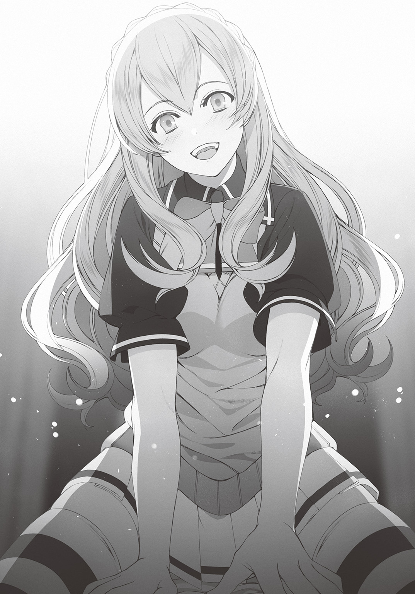
それを見た栞里が「あー」と残念そうに息を漏らす。
「やっぱり柏木くんがチョロいだけね」
「な、何を根拠にそんなこと言うのさ」
「最初の《魅了》を受けた直後に柏木くんの《学習》が発動して、魅了耐性が追加されたのよ。だから誘惑系の能力はもう効いていないはずなの」
「あっ」
なんてこった。まさか客観的事実から証明されてしまうなんて。というか魅了耐性なんてものがついたなら、この緊張もやわらいでくれよ！
そんな感じで。いろいろありながらも能力確認は順調に進んでいった。
ただ僕の《反射》は試せなかった。女の子たちにわざと攻撃させて反撃すれば検証できるだろうけど、そんなことはしたくないし。
《学習》については奇しくもエマ先輩の《魅了》を受けたことで検証できた。
そこで僕は、あるアイデアを思いついた。
遊子の炎を浴びたり、わざといろいろな種類のダメージを受ければ、《学習》の効果で無数の耐性をつけられるのではないか、というものだ。
しかし僕のこの提案に女の子たちは全員が反対した。
「イヤ。絶対にイヤ。なんで仲間を燃やさなくちゃなんないのよ」
「ミナトにつらい思いをさせるのは反対デス！ これだけはゆずりませんヨ！」
「......他人を盾にする趣味はありませんし」
遊子もエマ先輩も麻梨果も、言い方こそ違ったが、意見は同じようだった。
栞里でさえ、
「......ええ。わざわざ柏木くんの耐性を増やす必要はないわ。どれほどの強さで攻撃すればいいのかもわからないし。万が一、傷つけたり、死なせてしまったら、取り返しがつかないもの。だからそれは、やらない」
真剣な声と表情でそう言った。
最初は盾にする、とか言っていたような気がするけれど。
もしかしたらそれは、栞里なりに場を和ませようとして冗談を言っただけなのかもしれない。
そんな反応は僕にとって意外だった。
自分たちの安全のためなら、赤の他人が傷ついたところで、べつに気にする必要はないじゃないか。大切な友達ってわけでもなく、今日、出会ったばかりの男だぞ？ ウチのクラスのやつらだったら、迷わず僕に耐性をつけさせたと思うのだけど。
ああ、なんだ。その。
パーティーメンバーが彼女たちでよかった。
柄にもなく、僕はそう思う。
†
三十分後。
僕たち五人は家庭科室へとやってきた。能力の確認を終えた後、みんなのお腹がほぼ一斉に、きゅーっとかわいい音を立てて、そういえば朝からまだ何も食べていなかったことを思い出したのだ。
家庭科室の奥、家庭科準備室に入ると、部屋のすみに段ボールが積まれているのが見えた。ガムテープで封がされている。僕は手近な執務机からカッターナイフを取り出して、段ボールの封を開けた。
最初の段ボールの中身はビスケット菓子。次は無洗米（災害時には水が貴重になるので、研がなくても炊ける米を備蓄することが多いのだという。何かの小説に書いてあった）。さらに次はカップ麵。あと缶詰。ペットボトルに入った水も備蓄されている。
「彩東さんの言った通りだ。でも、よくこんなに備蓄食品があるって知ってたね」
僕が素直に感心してそう言った。
栞里は腕組みしたまま答える。
「一ヶ月くらい前に、業者が備蓄食品を大量に運び込んでいるところを見たの」
「へえ。わりと最近なんだ」
「ここのところ、日本では自然災害が多いでしょう。関東で大きな地震があったり、火山が噴火したり」
「そうだね。ニュースになってた」
「だから、学校の防災意識が高まっているのではないかしら」
「ああ。なるほどなぁ」
「こっちにカセットコンロもあるわ。これで水を温めて、カップ麵に注ぎましょう」
栞里がてきぱきと食事の準備を進めていく。
すると遊子がいきなり声を上げた。
「ちょ～っと待った！」
「......何？」
栞里がすっと目を細めて、怪訝そうに訊いた。
遊子は頰をふくらませる。
「ごはん食べようよ、ごはん。白米。昨夜はごたごたしてたから、お菓子しか食べなかったし。メッチャおなか減ってるんだけど」
「炊飯器の電源が入らないと、炊けないから......」
栞里は遊子から目を逸らして、小さな声でつぶやいた。
――あれ？ 変だな。
僕は違和感を覚えて、栞里の横顔を見る。そこにあるのはいつもと同じ冷静沈着な聖女の表情。だけど、ほんのすこし首筋に汗が浮かんでいるような？
「あの。これを使えば、炊けるはずでは」
下級生の麻梨果が小さな声で、僕の抱いた違和感と同じ内容の質問を口にした。麻梨果の手にはファスナーのついたビニール袋が握られている。米と同じ段ボールに入れられていた、保存袋だ。
この保存袋と鍋と水と火があれば、米は炊ける。というか、そうでなければ米が備蓄されている意味がない。
「そ、そうね。炊ける、かもね。........................くっ、回避できると思ったのに。まさか、柏木くんと武田さんにサバイバル知識があるなんて」
「彩東さん？ 今なんて」
「何も言っていないわ」
僕が問いかけると、栞里はすぐにそう答えた。
それから僕と麻梨果の顔へと交互に目をやりつつ、カップ麵の容器を大切そうに胸に抱く。
「実は私、カップ麵が大好きなの」
「へえ。そうだったんだ？」
意外だった。〝図書室の聖女〟なんて呼ばれてる通り、栞里の見た目は深窓の令嬢だとか、お嬢様と呼びたくなるタイプだ。ジャンクフードなんて食べれない、と言ってもおかしくなさそうなのに。
「は？ 何言ってんの、しおりん」
遊子が怪訝そうに口を挟む。
「中学の頃からずっと『ジャンクフードなんて寿命を縮めるだけの粗悪な食べ物、喉を通そうとする神経がわからない』――とか言ってたじゃん。アタシがファーストフードに誘うとメッチャ嫌そうな顔してたし」
「............遊子。あなた、余計なことを」
栞里が苦虫を嚙み潰したような顔で、遊子を軽くにらんだ。
そして、ため息をついて、
「ええそうよ。たしかにジャンクフードは苦手よ。だけど、そう、お米は元の世界を思い出させる貴重な味でしょう。いつ元の世界に戻れるかわからないのだから、心の拠り所にするためにも、お米はなるべく残しておいた方がいいと思うの」
そう説明した。
いかにも、もっともらしい説明をしてはいるが......。
僕にはやはりその説明は「苦しい」と思えてしまう。
どうしたんだろう。いつも冷静で論理的な栞里らしくもない。このことにかんしては、何故か論理がツギハギだらけだ。
「感動しまシタ！」
ふとそれまで黙っていたエマ先輩が声を上げて、栞里に抱きついた。
栞里が困惑顔でエマ先輩を見る。
「あ、アッシュクラフトさん？ いきなり、どうしたの？」
「ワタシたちのハートの平穏のために、嫌いなジャンクフードを好きなものだと偽って、食べようとするなんて！ 自己犠牲のマインド！ これぞ日本人特有のワビサビ、大和撫子のメンタリティなのデース！」
「え、ええ？ そう......かしら」
「デスガ、その厚意に甘えるワケにはいきまセン！ 和のハートには和のハートで返すのもまた、ジャパニーズの心意気。ジャンクフードはなしデス、シオリ。シオリにムリをさせたくありまセン。ごはんを食べまショウ！ あつあつの白米を！」
「え、あ、いえ。待って。私は大丈夫だから」
「問答無用デス！」
しどろもどろになった栞里の手からカップ麵の容器をかっさらい、エマ先輩は段ボールの中から米袋を取り出した。
携帯ガスコンロ、水、ファスナー付き保存袋、鍋、といった、炊飯に必要な道具がエマ先輩の手であっという間に揃えられていく。
「ごはんだけだと寂しいので、オカズも用意したいデスネ」
「いいねいいね～。おみそ汁とかね！」
遊子がハイテンションに言った。
麻梨果が小さく手を上げて、小声で応じる。
「あ。みそなら、そこの冷蔵庫の中にあったはずです。先週、授業でみそ汁をつくったので」
「んじゃアタシらはおみそ汁つくろっか」
「そうですね」
「あっ、僕も何か手伝うよ」
僕はあわてて申し出た。さすがに女の子たちに任せきりにするのは気が引ける。
遊子はすこし考えると、段ボールを指さした。
「そんじゃ、ミナトとしおりんは、缶詰あけてよ。サバでもなんでもいいから、おいしそーなやつ！」
「了解」
「よろしく～」
僕がふたつ返事でうなずくと、遊子はひらひらと手を振りながら、携帯ガスコンロとみその容器を手に調理台のほうへと向かった。エマ先輩と麻梨果もそれについていく。
家庭科準備室に残されたのは僕と栞里だけ。
「......」
栞里は、遊子たちが去った入口ドアを、恨めしそうな目で見ていた。
「彩東さん？ どうかした？」
「べつに。なんでもないわ」
僕が問いかけると、栞里は腕組みをしたままふいと顔を逸らした。
......なんとなく顔が青ざめている気がするんだけど。気のせいかな？ まあ、気になると言えば気になるけど、今は自分たちのやるべきことをやらないと。
僕は段ボールの中から缶詰（とりあえずサバ缶とシャケ缶にした）を取り出して、栞里にシャケ缶の方を差し出した。
「じゃあ彩東さんはこれをお願い。僕はこっちをやるから」
「......ええ」
栞里は缶詰を受け取ると、青い顔のまま、小さくうなずいた。
家庭科準備室の棚にはさまざまな調理器具が置かれていて、缶切りもそこにある。
僕らも缶詰と缶切りを手に準備室を出た。
調理台ではすでに、他のみんながテキパキと作業をしていた。
エマ先輩の目の前では、水の入った鍋に投入された、無洗米の詰まった保存袋が、携帯ガスコンロの火であぶられてぐつぐつ音を立てている。
遊子はおたまにのせたみそを湯につけ、徐々に溶かしながら、楽しげに口笛なんか吹いている。
麻梨果も無駄のない手つきで、水を張った容器に、家庭科準備室にあったのだろう乾燥ワカメを投入していた。
「みんな慣れてるなぁ。最近は家事のできる男性が人気で、女性は家事をやりたがらないなんてニュースもよく聞くけど......。少なくとも、ここにいるみんなは、当てはまらないみたいだね」
僕は感心してそう言いながら、淡々と缶詰を開けていく。他のみんなと違って、缶切りを刺してこじ開けるだけなので、雑談しながらでもできる。
こんなかんたんなことだけしてていいのかな？ と、申し訳なくなるぐらいだ。
「............」
「......あれ？ どうしたの、彩東さん？」
僕はふと、隣で作業していた栞里の様子が変なことに気がついた。
右手で缶切りを握ったまま、うつむいている。それだけでなく、彼女の細い肩が、小刻みに震えていた。
「大丈夫？ もしかして、具合が悪いの？」
心配になって声をかける。
すると五秒ほどの沈黙のあと――
「......柏木くん」
栞里は僕にしか聞こえないような小さな声でこう言った。
「この道具は......どう使えばいいのかしら」
「え？」
質問の意味がわからない。
僕の反応がまどろっこしかったのか、栞里はキッと顔を上げて、ほんのすこし強い口調で続けた。
「だから。この道具をどう使えば缶詰を開けられるのか、と訊いているのよ」
「......わからないの？」
「くっ......！」
栞里はくやしげに唇を嚙むと、その顔をみるみる赤く染めていった。それから恨みがましい目で僕を睨みつける。
「ひどいわ。屈辱に耐え、恥をしのんで、素直に質問したのに。私の無能を嘲笑うような挑発的な目を向けるなんて」
「ええっ!? そんな目はしてないけど!?」
「していたわ」
「してないってば。それ被害妄想だって！」
「......っ」
栞里は唇をわななかせ、ふいっとそっぽを向いた。缶切りを持つ手が、ぷるぷると震えている。
......意外だ。栞里にこんな弱点があったなんて。いつも冷静で隙のない完璧超人だと思っていたのに。
「もしかして、さっき、好きでもないカップ麵を食べようと提案したのも......家事ができないことを悟られないようにするため？」
「こういうのは......慣れていないのよ。身の回りのことは、すべて使用人がやっていたから」
栞里がぼそぼそと小さな声で告白した。僕はそれに、へえ、と相づちを打つ。
「本当にお嬢様だったんだ？」
「まあ、そうね」
「でも本をたくさん読んでる彩東さんなら、家事の知識もありそうだけど」
「知識はあるわ」
「え？ 家事は苦手なんだよね？」
「知識だけは、あるのよ。知ってることと、やれることは、イコールではないでしょう」
「ああ。なるほど。たしかに」
テレビでプロ野球の試合を観戦してるそこそこの知識があるおっちゃんが、あの投手が凄いだとか、あのバッターは下手だとか、語っていたとして、自分が野球を上手にプレイできるかと言えばそんなことはないわけで。
「......幻滅した？」
「え、何に？」
「私が、缶詰も開けられないような女だってことに」
黒髪をくるくると指に巻きつけて、栞里は唇をとがらせた。
僕はすぐに首を振る。
「いや、これっぽっちも」
「ウソ」
「いや、ウソじゃないけど」
「ウソよ。『いつもクールぶって偉そうなこと言ってるインテリぶりっこのくせに、カンタンな雑用もできねーのか使えねえ』、とか思われてるに違いないわ」
「いやそんなこと全然思ってないから。というか、インテリぶりっこって......。どれだけ自虐的になってるのさ」
「そんなこと言って、本当は心の中で笑っているのでしょう？」
「彩東さんは自分の性格を基準にすると疑心暗鬼になっちゃうんだろうなぁ」
「......ホントに笑ってない？」
「ホントだってば。むしろホッとしたよ。弱点のない人間なんて怖すぎる」
僕は両手を上げて素直に言った。
じっ、と僕をにらみつけていた栞里は、表情をやわらげると、そう、とつぶやいて。
缶詰と缶切りを手に、僕に身体を寄せてきた。
って、え？ なんでいきなり接近？
「こうすれば柏木くんの身体が壁になるから、他の子には見えないはず。あなたに私を辱める気がないなら、遊子たちにバレないように、こっそりと、やり方を教えて」
「あ、ああ......なるほど。そういうことか」
「柏木くん、このことは他言無用よ。くれぐれも、ね」
栞里は僕を見あげて、真剣な声でそう言った。
......必死だなぁ。
と、僕はもちろん口には出さなかった。屈辱で頰を真っ赤に染める栞里はかわいいから、すこしいじめてみたい気もしたけれど。
さすがにそこまでするのはかわいそうだ。
結局。僕と栞里は無事に他の子に悟られず、缶詰をすべて開けることに成功した。
みんなで食べる昼食はとてもおいしかったけれど。
遊子と麻梨果のつくったみそ汁やエマ先輩の炊いたごはんをひとくち食べるたびに、栞里が複雑そうな顔になっていて。
僕はこみあげてくる笑いをこらえるのが大変だった。
†
時は流れて、夜。
場所は図書室。
「では今後の方針について話したいと思うのだけど。とりあえず、私は元の世界に帰る方法を探した方がいいと考えているわ」
そう切り出して、栞里は僕や仲間たちを見回した。みんなも同意らしくうなずいている。
僕も同じ気持ちだ。けれど気になることがある。僕は質問した。
「具体的にどうやって帰る方法を探すの？」
「この異世界でもともと暮らしている人間――原住民とでも表現しましょうか。まずは彼らと接触するべき」
「原住民、か。なるほどね」
『クレストサーガ』の世界は理想郷と呼ばれる、神々が統治する世界とされている。人々は神から与えられた恩恵である紋章の力を借りて生きていた。そして同じ紋章を持っている者同士で国を作り、他の勢力と小競り合いを続けながらも、どうにか均衡を保っていたが、異世界から召喚された少年少女の存在をきっかけに平和は崩れる。
神は退屈な世界を望まず、多感な年代の人間を異なる世界から呼び出すことで、理想郷に新たな刺激を与えるのだ。たしかそういう設定になっていたはず。
もしもここが本当に『クレストサーガ』の世界――理想郷だとしたら。
原住民と呼ぶべき、この世界の住民がどこかにいる。彼らが元の世界へ帰る方法を知っているとは限らないけれど。彼らと会っておくのは絶対にプラスになる。
「......あの」
ふいに遠慮がちな声がした。小さく手をあげたのは麻梨果である。
「学校の敷地を出るんですか？」
「そうなるわね。このまま校舎に残っていても状況は変わらないから」
「......それ、わたしもついて行かなきゃダメでしょうか」
「どういうこと？」
栞里が目を細めた。
手にした木刀の表面を指でなぞりながら、麻梨果は口を開く。
「この五人の能力を考えると......モンスターと直接やり合うことになるのは、わたしです」
「ええ。おそらく戦闘の大部分をお願いすることになると思う」
「わたし、先輩方のために命を張らなければいけませんか？」
......なるほど。
僕たちは家族でも友達でもなく、ただの即席チーム。他人のために危険を冒す理由は麻梨果にはない。
当然の思考だ。
栞里は麻梨果の目をまっすぐに見て、真摯な声で答える。
「言い訳やごまかしはタメにならないからハッキリと言わせてもらうわね。ええ。モンスターと遭遇したら、あなたの力を借りることになる。私たちも協力したいけれど、今のところは、圧倒的な戦闘力を誇るあなたの足手まといにしかならないから」
「ならわたしが先輩方と一緒に行くメリットは？」
「ちょっと、そんな言い方なくない!? こんなときなんだから協力してくれてもいいじゃん」
遊子がキッと麻梨果を睨みつける。
麻梨果もその視線を撥ね返すように、眼鏡の奥の瞳をきつく細めた。
「校舎の敷地外に出れば何かが見つかる確証もないのに、命を張ってモンスターと戦えと言うんですか？ わたしだけに？」
「それは......！ でも......」
遊子が言葉に詰まる。
「武田さんは、元の世界に帰る方法を探したいとは思わないの？」
栞里が問いかけた。
すると麻梨果がほんのわずかに顔をしかめる。
「......本音を言えば、帰りたいです」
「だったら協力してほしいのだけど」
「でも、旅に出ても、この世界の住人と会えるとはかぎらないですし。元の世界に帰る方法も見つからないかもしれないです」
「可能性がゼロではなくなるわ。このまま学校に残っていたら、ゼロよ」
「......学校には非常食や水がまだたっぷりあります。購買部に行けば、何か残っているかもです。旅に出たら食糧を調達するのにも苦労するのでは？ 森の中で遭難でもしたら、飢え死にです」
「ここに残ってもいずれ備蓄が尽きるだけよ？」
「......モンスターについても不安があります。最初に学校を襲ったみたいな、銀色の狼や緑色の肌をした人型の魔物、半透明のスライムであれば倒せます。ですが、まったく未知のモンスターに出会ったら本当にわたしの手で倒せるか、わかりません」
「――まとめると、不確定要素が多すぎるから現状維持がベストだと考えている......といったところかしら」
「ですね」
栞里が冷静な声で言うと、麻梨果がこくりとうなずいた。
「つまり、不確定要素を取り除けば、ついてきてくれる――ということね？」
栞里はそう言ってから、ちら、と僕を見た。
なるほど。僕の知ってる裏設定を提供することで麻梨果の不安を解消してほしいってことか。
まあ、いいか。仲間には隠しごとをしていても仕方ないしな。
「武田さんの不安は三つのうち二つまで解消できる」
僕は口を開いた。
麻梨果が「え？」と驚いた顔を僕に向ける。
「まずは悪い情報から......不安を解消してあげられない方から話そうか」
僕はそう前置きしてから言った。
「旅に出ても、たぶんそうかんたんに元の世界に帰る方法は見つからないと思う」
祖父の小説には、元の世界に帰る方法は記されていなかった。裏設定にも、だ。方法は自分で探さなければならない。もしかしたら帰る方法なんてないのかもしれないけど。諦めるのはいろいろ試した後でいいだろう。
「だったら、やはり校舎を出る必要はないです」
「いや。だとしても、原住民とは接触しておいた方がいい」
「どうしてですか」
「君の心配通り、食糧の事情がある。この世界の人間と出会って、最低限のコミュニケーションを取れるようにならないと、食糧を得る方法もわからない。飢え死にしてしまう。まあ、そのへんで狩りをして、料理を作るって手もあるけど」
僕にはできない。狩りもできないし。狩った動物や森に生えたきのこや草を調理する知識や技術も持ち合わせていない。
「......で、わたしの不安をどう解消できるんですか？」
麻梨果が険しい顔で訊いた。
表情はきついがだいぶ興味を示してくれている。うん。聞く耳を持ってくれると助かるな。
「僕はどこに人が住んでるのか知ってる。そして、どこにどんなモンスターが存在してるのかも、知ってる」
「......意味がわかりません。どうして先輩が断言できるんですか」
「ああ。それはね――」
僕は栞里以外の子がまだ知らない事実を説明した。
この世界が『クレストサーガ』という小説の世界観と瓜二つであること。僕の祖父が『クレストサーガ』の作者であり、裏設定もすべて把握していること。ゆえにこの世界に関することで僕が知らないことはほとんどないだろうということ。
話を聞いた麻梨果、遊子、エマ先輩は驚きを隠せないようだった。
だが遊子は疑わしそうに目を細める。
「それホント？ ホントなら、めっちゃすごいけど」
麻梨果も顔をしかめる。
「......とても信じられないです。小説の世界に似ているという話だけならまだしも、裏設定の有無を証明する方法がありませんし」
「柏木くんはシルバーファングからアッシュクラフトさんを助けたわ。あのモンスターの弱点は小説本文に書かれていなかった。これでは証明にならないかしら？」
栞里が口を挟んだ。
麻梨果はふるふると首を振る。
「裏設定の存在を証明するには不十分かと。当てずっぽうで当てられる範囲ですし」
「命を賭ける場面で、いいかげんな当てずっぽうに頼るかしら」
「......だとしても、ごめんなさい。私にはまだ信じられないんです」
麻梨果は僕と栞里から目を逸らして、うつむいた。
たしかに麻梨果が疑いを持つのも無理はない。異世界に飛ばされただけでも信じられない事態なのに、その意味不明な世界を知り尽くしている人間がいるなんて。僕が他人にそんなことを言われたら、たぶん信じない。
信じてもらいたいと思うなら、信じてもらえるだけの根拠を示す必要があるのだ。
僕はすこし考えてから、口を開く。
「裏設定の存在をわかりやすく証明する方法なら、ある」
「......え？」
麻梨果が顔を上げて、戸惑いの目で僕を見る。
僕はカーテンで隠された図書室の窓を――いや、北の方角を指さした。
「ここから北に進んだ先の森の中に《ＺＯＯ》という国がある。人語を操り人と会話ができる魔物たちが集まった、村や集落といった規模の国だけど......。この世界ではれっきとした国家として扱われてるはずだ」
「そこに行けば、証明できる......と？」
「人語を操るモンスターを見れば、さすがに信じざるを得ないんじゃないかな。なかなか当てずっぽうで当てられることじゃないと思うけど」
「人語......。そういえば、そもそもこの世界の住民と会話はできるんですか。異世界の人間の言葉なんて、理解できるとは思えません」
「それも大丈夫。小説の設定が適用されているなら、だけどね。神様の加護でこの世界は自動的に言葉が翻訳されるようになってるんだ」
「......何から何までフィクションですね。ますます信じられません」
麻梨果は顔をしかめた。
すると、ふいに栞里が感心したように口を開く。
「《ＺＯＯ》の国はここから北の方角なのね。私には細かい位置までわからなかったのだけど。どうしてわかるのかしら」
「シルバーファングの生息地域は樹海の南ってことになってるんだ。大きな音が苦手な性質のせいで、集落の近くには棲みたがらない。樹海の西方は英雄の国《キャッスル》、東方は悪魔の国《セメタリー》との国境で集落が多い。中央には《ＺＯＯ》があって、北方には商業の国《カンパニー》がある。シルバーファングが暮らせる場所は樹海南方の特定エリアに限られてるんだ」
「なるほど......それでこの校舎の現在地を割り出せたのね」
説明を受けた栞里が納得の声を漏らす。
僕は栞里にうなずいてから、麻梨果の方にふたたび目をやった。
「だけど僕がこうして口で言っても説得力は生まれない。だから実際に武田さんの前に、人の言葉をしゃべるモンスターを連れてこようと思うんだ」
「え？ ......どういうことです？」
「まず僕がひとりで《ＺＯＯ》へ行く。原住民が危険な存在じゃないとわかったら、僕は彼らを連れて校舎に戻ってくる。そしたら武田さんや他のみんなも《ＺＯＯ》への移動を開始する――これでどうかな？」
「先輩......ひとりで森の中を歩く気なんですか」
麻梨果が不安げな声で尋ねた。
僕はあっさりとうなずく。
「裏設定を証明しなきゃいけないのは僕だからね。戦闘に秀でた武田さんが同行できない以上、他のみんなも連れて行くわけにはいかないし」
するとエマ先輩がガバッと僕に詰め寄った。
「嫌なのデスヨ！ ワタシもミナトと一緒に行きたいデス！ ミナトひとりに大変な思いはさせられまセン！」
「あはは......気持ちはうれしいですけど、心配しないでください。森の中にいるモンスターは物理攻撃しかできませんから。僕には物理耐性があるんで、たとえひとりでも安全に森の中を歩けます」
「デスガ。ワタシたちみんなのことデスのに、ミナトひとりに苦労をかけるのは、なんだかチガウと思うのデスヨ」
「............」
エマ先輩の言葉を聞いて、麻梨果が木刀を胸に抱きしめた。眼鏡の奥の瞳から警戒の色は消えていない。
だが、僕、栞里、遊子、エマ先輩――と、順番に顔を眺めていき、やがて麻梨果はふうと息を吐いた。
「......わかりました。魔物の国《ＺＯＯ》とやらに行くまでは、わたしも同行します」
「え？ でも」
「戦えない人たちだけで行かせて、全滅でもされたら寝覚めが悪いじゃないですか」
「あー......それはまあ、たしかに」
「だからわたしも行きます。それで人語をしゃべる魔物をこの目で見たら、先輩の言葉を信じます」
「武田さん......。ありがとう」
「まだ信じることになったわけじゃないですけど」
僕が素直に頭を下げると、麻梨果はふいと顔を逸らして言った。眉間にはしわが寄っているけれど。ほんのすこし険が取れている気がした。
「決定ね」
栞里がパチ、パチ、と二回手を叩いた。
僕たち全員の注目が集まる。
「出発は明日。日が昇ってから。目的地はここから北にある魔物の国《ＺＯＯ》。参加者はここにいる五人全員。異議のある人はいるかしら？」
「異議なーし！」「ないデス！」「......はい」
遊子、エマ先輩、麻梨果が三者三様の返事をする。
最後に栞里に流し目を向けられて、僕もこくりとうなずいた。
「異議なし」
†
その日の深夜。
僕は保健室のベッドで目を覚ました。
慣れない環境における緊張のせいか、あまり深く眠れなかったのかもしれない。
薄暗い室内には安らかな寝息が聞こえていた。
女の子たちの寝息だ。
――そういえば、まともなベッドがあるのはここだけだからと、みんな保健室で寝ることにしたんだった。
「あら？ まだ交代の時間じゃないはずだけれど」
声がした。
その方向を見ると、いつも保健室の先生が座っていただろう丸い椅子に腰かけた栞里が、こちらを振り返っている。
僕たちはモンスターの襲来に備えるために、交代で見張りを立てることにしていた。最初は暫定的にリーダーポジションに就いている栞里で、その次が男の僕だ。時間になったら起こしてもらうことになっていたのだけれど。
「なんか眠りが浅かったみたいだ」
「そう。明日に影響が出ないといいけれど。何せ森の中を歩くのだし」
「どれだけ歩くことになるんだろうなぁ」
僕は想像するだけでげんなりした。さすがに具体的な距離までは小説の設定にはない。見当もつかなかった。
まあでもどうせもう一度眠れないからと、僕はベッドを抜け出した。そしてふと栞里の手元にあるものが目に入る。
「彩東さんは本を読んでいたの？」
「ええ。遊子のおかげね」
栞里がちらと机の上に浮かぶ「ソレ」に目を向ける。
小さな橙色の光の玉がふわふわと浮かんでいた。それが発する光がぼんやりと保健室内を照らしており、白くてきれいな栞里の横顔をくっきりと浮かび上がらせている。
「《トーチ》か。想像以上に便利なスキルだね」
遊子がすでに持っている《トーチ》は、暗いダンジョンを冒険したり、夜道を歩くときに使うスキルだ。生み出した光の玉は使用者本人が遠くにいても、意識を失っても、きっちり十時間くらい効果が持続する。
電気の通っていない校舎で夜の見張り番をするのに、これほど心強いものはない。ホント、遊子がいてよかった。
「もうすこし寝ていたら？ 時間が来たら起こしてあげるわよ」
「や。もう目が覚めちゃった」
「そう。ならいいけれど」
「何を読んでたの？」
僕は机の上の文庫本を指さして尋ねた。
「図書室で借りてきたライトノベル。ちょっとえっちな要素が強いやつ」
「......彩東さんにどんな趣味があっても僕はもう驚かないよ」
「誤解しないでくれる？」
栞里はむっと唇をとがらせた。
「まだ読んだことのない本がこれくらいしかなかったの」
「え？ 図書室にはあんなに本があるのに？ まさか全部読んだわけじゃないよね？」
「全部読んだわ」
「うそだあ」
「図鑑やノウハウ本は読んでいないものもあるけれど、少なくとも小説や文学の類は全部読んだわね。最近は自分で買った新書を、図書室に持ち込んで読んでいたのだけど。それももう読み終えてしまったから」
「......それ、本当？ 話を盛ってない？」
「話を盛って、私に何の得があるの？」
栞里が怪訝そうに首をかしげた。
うん、まあ、たしかに。栞里は意味のないごまかしはしないタイプだろう。他人をいじるために話を盛ることはあっても、自分を大きく見せるために、そういうことはしない。
僕は感心して思わず息を吐いた。
「食べるように本を読んでるんだね。まさしく本の虫、って感じだ」
「そうね。物理的な空腹を埋めるための行為が食事だとしたら、精神的な飢えを解消してくれるのが、読書だから。私にとって、本――物語は、食べ物に近い何かかもしれない」
「ああ。その気持ちわかるなぁ」
「柏木くんも好きなの？ 読書。やっぱりお祖父さんの影響かしら」
「うん。空き時間を潰す方法は読書が多いかな。ただ、最近は読書量が減って、動画サイトとかスマホに使う時間が増えちゃってるけど」
「......現代っ子は、普通そうよね」
栞里の顔にさっと影が差した。
何かを含むような栞里の表情を見て、僕はハッとする。もしかして、同年代で趣味を共有できる人間が少ないせいで、寂しい思いをしてきたのかもしれない。
......だったら、誤解を解いておかないとな。
「いや、違うんだ。高校に入ってから本を読む量を減らしたのは、他の娯楽の方が楽しくなったから――とかじゃないんだ」
「気を遣わなくてもいいのよ」
「いやいや。本当なんだってば」
僕はぶんぶんと首を振り、言葉を続ける。
「祖父が亡くなってからなんだ。読書量をガクンと減らしたのは」
「......それは私が踏み込んでも平気な領域？」
栞里が目を細めて訊いてくる。
僕はうなずいた。
「うん。まあ、当時はショックだったけど、さすがにもう立ち直ったし」
「そう。なら聞かせてほしい。どうして読書量が減ったの？」
「僕もね、その、小説を書き始めたんだ」
「へえ！ すごいじゃない」
両手をぽんと合わせて、彼女にしては珍しく大きな声で栞里は言った。
照れで頰が熱くなっているのを自覚しつつ、僕は頰を搔いて続ける。
「未完のまま放り出された『クレストサーガ』をまた読みたいって手紙が出版社から何通も届いてさ。子ども向けに書かれたものなのに、もう読者はほとんど大人になってたんだけど。ああ、祖父は昔、こんなにたくさんの人を熱狂させたんだなぁって考えたら、漠然とした気持ちなんだけど......そういうの、なんかいいなって思えたんだよね」
栞里が首をかしげた。
「でも、それが読書量が減ったことと、どう関係あるのかしら？」
「面白い作品を素直に読めなくなった」
「え？」
「いや、悔しくてさ。自分の作品がまだまだそれらより面白くないってことが」
「なるほどね......。ふふ。意外と負けず嫌いなのね」
くすくすと栞里が微笑んだ。意地悪な感じじゃない、素直な微笑だ。ひとしきり笑ってから、栞里は頰を緩ませたまま黒い瞳を輝かせた。
「ねえねえ。柏木くんはもう何作か書いてみたの？ どんなお話？ やっぱりファンタジーかしら。それとも意外と恋愛モノとか？」
「ず、ずいぶん前のめりだね。彩東さんらしくもない」
「いいじゃない。わたし、新しい物語に触れるのが好きなのよ。家に帰ったら今月の新刊を崩す予定だったのにお預けされたから、欲求不満で。なんだかもう一秒でも早く物語を摂取したくって」
「本を読めばいいじゃないか」
「だから、もうないのよ。まだ読んでない本が」
「あっ」
そうだ。ここは異世界。街の本屋さんもネット通販も使えないし、電子書籍をダウンロードすることだって、もちろん不可能。いくら物語を読みたいと思っても、新しい本を買えないんだ。
その事実に気づいて声を漏らした僕に、栞里は苦笑した顔を向ける。
「『クレストサーガ』の世界には、小説が存在しないのよね。たしか、そのことは小説本文に明記されていたはず。裏設定で『実はこの世界にも小説がありました』――って書かれてなければ、だけど」
「ないね」
「そ。残念。でもよかったわ」
「え？」
「柏木くん、小説を書いてるんでしょう？ なら、あなたの話を読めばいいじゃない」
「え!? あー......いや、それは......」
僕はきょろきょろと視線をさ迷わせて、言葉を濁らせた。
栞里の期待に満ちた黒い瞳が、じーっと僕の顔を見つめている。
「ね。もう作品を書き始めてるのよね？」
「う、うん、まあ」
「新人賞に応募したりしてるの？」
「いや、そこまでの自信はないんだよなぁ......。今はほら、ＷＥＢ小説もあるし。そこで発表してるんだ」
「へえ。私もたまに検索してるのよ。もしかしたら読んだことあるかも」
「ないんじゃないかなぁ。アクセス少ないし」
「そう？ 私、ジャンルが好みに合ってそうなら何でも読むし、人気じゃないものも漁るけれど。タイトルは？」
栞里はさらに身を乗り出して訊いた。
いつの間にかきれいな顔が目の前に近づいている。数センチ距離が縮んだだけで、紅茶のような香りがした。《祝福》スキルで清められた身体が、髪の先からふわりと甘い匂いを放ったのだ。
どきりと心臓が高鳴る。逃げ腰になりながら、僕は答えた。
「ええと......内緒で」
「こんなにわくわくさせておいて、おあずけするの？ ひどいわ」
栞里は唇をとがらせた。
「無茶言わないでくれよ......。まだ実力が足りてないし。ＷＥＢにアップしたのは、なんか自分をさらけ出してるみたいで恥ずかしいし」
「ふうん。でも、小説なんて多かれ少なかれ、そんなものだと思うけれど。描かれているのはウソの世界だけれど、そこには書き手の本音や欲望が必ず混ざる――ごまかすことのできない全裸をさらしているのと同じよね。言わば、露出狂の芸」
「それは全世界の小説家に謝ろうか」
「物理的にじゃなくて、精神的な露出狂よ。まあ、あくまでも私の持論だけれど」
栞里はさらりとそう言った。そして、エロシーンたっぷりのラノベの表紙を指でなぞる。
「これにだって、作者の内面すべてがこもってるわ」
「そうかな？ 自分の欲望をこめずに、読者へのサービス精神だけで書いてる人もいると思うけど」
「だとすれば、サービスしてあげようって心が作品の細かいところに表れるでしょう？ 私が言ってるのはそういうこと」
「ああ......なるほど」
僕は納得の声を漏らした。
......もしかしたら僕は小説家として未熟どころか、まだ入口にさえ立っていないのかもしれないな。
栞里に披露するのが恥ずかしいのは、露出狂になろうって気持ちになれていないから。
いや――自信がないのかもな。
小説のテクだけではなく、いろいろなことについて。他人に披露するだけの何かを持っている自信がない。だから、栞里にも見せたくないのかもしれない。
などと僕が考えていると、
「でも、無理強いはしないわ。柏木くんが話してくれないなら、エロエロな小説で暇を潰すだけだから」
栞里はそう言って、エロい表紙の文庫をふたたび手に取った。ちら、と流し目を向けてくる。......それは交渉のつもりだろうか？ 女の子にやらしいものを読ませるつもりか、と。いや、勝手に君が読んでるだけなんだけどね？ 栞里。
まいったな。まさか栞里がこんなにも僕の小説に興味を持つとは思わなかった。他に読むものがない世界だから、消去法的に選ばれてるだけなんだろうけど。
どうしたものか――としばらく考えて、僕はふと妙案を思いついた。
「そうだ。『クレストサーガ』の続き、気にならない？」
「続き？」
栞里の声のトーンがほんのすこし上がった。
食いついたな。僕はにやりとして、うなずく。
「世に出してる分は未完で終わったんだけど、祖父は物語の最後の展開までストーリーを決めてあるんだ。詳細なプロットは完成してる」
栞里は真っ白な喉を鳴らした。
「もしかして......柏木くん。それ全部語れるの？」
「うん。『クレストサーガ』の続き、知りたい？」
「ええ！ もう二度と続きを読めないと思っていたから......。まさかあれの続編が読めるなんて」
「いやいや本文にはしないよ？ 物語のあらすじだけ」
「それでもいいわ。いずれ柏木くんに完全再現してもらうけど」
「ちょっと。それやること確定なの？」
「いいじゃない。どうせ他に娯楽はないんだし。きっと元の世界に帰るまでの時間はたっぷりあるわよ」
栞里は熱っぽい声で言った。
......ほんと、本や物語の話になると、熱くなるんだなぁ。微妙に早口になってるし。
そう思いながらも僕は言う。
「いいよ。じゃあ休憩時間や今日みたいな見張りを交代する時間に、ちょっとずつ聞かせてあげるよ」
「ありがとう」
栞里は素直な笑みを浮かべて言った。
そのかわいらしい笑顔は、いつもの冷静で容赦のない彼女とは別人のようだった。
......ホッ。これで僕の小説の話から意識を逸らせた。当分は『クレストサーガ』の話でごまかすことができるだろう。と、僕はそう思っていたのだが。
「あ。でも」
僕の胸に指を向けて、栞里はこう続けた。
「いつか柏木くんの物語も聞かせてね。そこそこ、楽しみにしてるから」
――ああ、やっぱり栞里は栞里だな。
「すごく」とか「かなり」とかじゃなくて、「そこそこ」ってあたりが。
期待されすぎると僕も息苦しいから。それくらいのノリがちょうどいいんだけどね。
†
五人全員で校舎を出たのは翌日の早朝だった。
太陽が昇る方向から方角を確定する。小説の設定では太陽の昇る方向は現代日本と同じだ。校舎は現実世界では裏門側が北になっていたが、どうやらそれはこの世界でも変わらないらしく、僕らは裏門から森に入った。
僕が右手にさげた学生鞄には学校に備蓄されていた水入りのペットボトルが詰まっている。寝袋とテントも持ち出した。勝手に学校のモノを借りるのは最初は気が引けたけれど、非常時なのだから仕方ない。
目的地の魔物の国《ＺＯＯ》までどれほどの距離があるかは断定できない。来た道を確認しながら、いつでも本拠地である校舎に帰れるようにと意識しているけれど。それでも野宿する可能性がある。
だから準備を怠らなかった。万全を期した。
そして今。
木々の合間に射す朝の日差しを浴びながら、僕たちは森の中を歩いていた。
道中は意外とスムーズに移動できた。
――主に、僕らの頼れる前衛のおかげで。
「せあッ」
麻梨果が気合いの声とともに木刀を水平に振り抜いた。
「ぎゃー!!」
胴体に打撃を打ち込まれた豚顔の怪物――オークの身体が木々の隙間を抜けて遥か遠くまで吹き飛ばされていく。
「やはりこのあたりのモンスターは大したことありませんね」
麻梨果は淡々と言って、木刀を刀袋に納めた。眼鏡を外し、レンズを布で拭う。戦闘を終えたばかりの姿が妙に様になっているのは、さすが全国区の剣道少女といったところか。絶対に怒らせてはいけない相手だとあらためて思う。
でも、麻梨果についてきてもらえたのはラッキーだった。遊子の紋章も一応戦闘向きだとはいえ、森の中で派手な炎を出せば大火事になってしまう。モンスターを追い払うだけであればやはり麻梨果の力が頭ひとつ抜けていた。
......唯一の男である僕が、戦闘でほとんど役に立てないのは歯がゆいけれど。
拭いた眼鏡をかけ直して、麻梨果が僕の顔を見る。
「先を急ぎましょうか」
「そうだね。今のモンスターの悲鳴で、他のモンスターが寄ってくるかもしれないし」
僕もうなずいて、歩きだそうとした。
そのとき。
「ま、待って」
五人の一番うしろにいた栞里が、ふいに声をあげた。
「どうしたの？」
「みんな、すこし......歩くのが......速すぎるのでは、ないかしら......」
栞里は木の幹に片手をついて、はあふうと呼吸を整えていた。もう片方の手はひざに置かれ、きれいな顔には珠のような汗が浮かんでいる。
「ぷ。もしかしてバテてんの？」
遊子が、栞里を見てにやにやと笑みを浮かべた。
栞里はくっ......と喉を鳴らして唇を嚙む。
「仕方ないでしょう。神龍の紋章には身体能力の上昇補正がないのだから」
「はいはい言い訳お疲れ様！ ぷぷぷ。いつもえらそうにしてるくせにバテバテとはねー。バテバテー。やーいバテバテー」
「くっ......。絶対に......絶対に、あとで泣かすわ」
ここぞとばかりに馬鹿にする遊子と、拳を固めて静かな怒りをたぎらせる栞里。
「あはは......。ふたりとも、どうどう。ケンカはダメだよ」
僕は苦笑しながら、彼女たちをいさめるしかなかった。
それにしても。またひとつ栞里の弱点が発見できたな。家事ができないだけでなく、どうやら体力もないらしい。そういえば、成績優秀という話はうわさで聞いたけれど、体育の授業の話は聞いたことがなかった。
運動にかんしての評判は皆無。良いとも悪いとも聞こえてこない。ということは、もしかして体育の授業は逃げていた？ 体調不良だとか言って。
......ありえるなあ。家庭科室でも、ボロが出ないようにするために、カップ麵に逃げようとしていたし。
あれ？ もしかして、栞里って。
僕や学校のみんなが考えていたよりも、けっこう苦手分野が多いのかな？
「はあ、はあ......なに？ 柏木くん。私の顔をじっと見つめたりして。何か言いたいことがあるならハッキリ言ってくれる？」
「あー、いや。なんでもないよ。うん。なんでも」
息切れしながら問いかけてきた栞里の目から逃げるように、僕はぶんぶんと首を振った。
きっと彼女は嫌がるだろうから、僕はハッキリとは言わないけれど。
栞里はたぶんかなりのポンコツだ。
それなのに彼女のダメな部分は全然うわさにならない。きっと、持ち前の頭の良さをフルに活用して、上手に逃げてきたんだろう。
だとしたら、それは。
すごくかわいい――と、そんな風に僕は思う。
家事が苦手どころか缶詰さえ開けられず、歩かせてみればたいした距離も行かないうちに、すぐに力尽きる。クールで聡明な〝図書室の聖女〟に、こうまでつぎつぎと弱味を見せられると、他にはどんな残念な弱点があるんだろうと、意地悪にも僕はそう考えてしまった。
――と、そのとき。
「きゃあっ!?」
エマ先輩の悲鳴が聞こえた。僕ははっとして顔を上げる。
パンツが見えた――いや、そこはどうでもいい。
エマ先輩がさかさまの姿で木の上に吊り上げられていた。罠か？ 足首にロープが巻きついている。
「やーん！ おろしてくだサーイ！」
エマ先輩が身体を動かすと、ミノムシみたいに左右に揺れる。スカートが重力に抗えずにめくれていて、黒い下着が見えている。
「ダメよ、柏木くん。見てはダメ」
栞里が低い声でそう言って、僕の目をふさいだ。
「《ヘルフレイム》！」
遊子がスキル名を口にする。エマ先輩を吊るしていた木が派手に燃え盛った。ロープが焼き切れて、エマ先輩の身体が落ちてくる。危ない！ と思い、僕はあわてて落下点に駆け寄り、両腕を広げた。
華麗に受け止める――ことなどできるはずもなく、ずん、と両腕にかかった重みに耐えられず、僕はエマ先輩もろとも地面に倒れる。
痛い。たぶん骨とか折れた。でもすぐに痛みは消えて、身体もどこもおかしくない。
物理耐性には感謝しないとな。
「あうう。受け止めてくれてありがとうございマス。ミナト」
「ぐ......う......大丈夫......です。はい。物理攻撃なんで。......って、遊子。やるならひと声かけてからにしてくれないかな」
「あ、ゴメン。エマっちを助けなきゃと思ったら、つい！」
遊子は焦った様子でぶんぶん手を振った。
エマ先輩を助けるにしても、もっと穏便な方法はあっただろうに。というか、《ヘルフレイム》だと威力が強すぎて、危うくエマ先輩まで黒焦げになるところだった。現に目の前の木は橙色の激しい炎に包まれている。
「ひ......ひひ、ひいッ。なな、なんだこの炎の威力ッ！」
――ふと、その木の裏側にいた何者かが掠れた悲鳴を上げた。
緑色の肌。
つるりと禿げた頭。
とがった鼻と耳。
僕の腰ぐらいまでの身長しかない小さな身体。
しわだらけの手足。
腰みのをつけただけの上半身裸の姿。
どこからどう見ても、ゴブリンと呼ばれる種類のモンスターである。
ゴブリンは腰を抜かした後、僕たちに背中を向けて逃げ出した。
「逃がしません」
麻梨果が地面を蹴った。一瞬でゴブリンに追いつくと、その首根っこをつかみ、地面に組み伏せる。
「ひぎゃっ!?」
「罠を仕掛けたのはあなたですか」
麻梨果は淡々と言って、眼鏡の奥の瞳をぎらりと光らせる。
ゴブリンが蒼白な顔になって、喉奥からひきつった声を漏らした。
「ひいっ。許してくださいごめんなさい！ 小生にはあなた方を取って食おうというつもりはなかったのです！」
「な......」
命乞いをするゴブリンに、麻梨果は目を大きく見開いた。ガバッと勢いよく僕を振り返る。
そして麻梨果は信じられない、という顔でつぶやいた。
「人の言葉を......しゃべってる......」
僕らはとりあえずゴブリンを尋問することにした。
「へえ、小生はモズという名前の、しがない《ＺＯＯ》の民のひとりでして。我々《ＺＯＯ》で暮らす者どもは、樹海のモンスターの中でも特例的に、神様から人語を操ることを許されておりまして、へえ」
ゴブリンの名前はモズというらしい。
燃え尽きて黒焦げになった木の前で正座をしながら、モズはぺこぺこと頭を下げていた。きょどきょどと視線を動かして、顔の横に添えられた麻梨果の木刀の切っ先が目に入るとビクンと震え上がる。
......かなりビビらせてしまってるみたいだ。でも逃がすわけにいかないから仕方ない。
ゴブリンはひれ伏しながら、僕たちにすがるような目を向ける。
「ここ最近、《ＺＯＯ》は紋章を持った人間に領土を荒らされておりまして、それで警戒を強めていたのです。あ、いえ、けっしてあなた方がそうだと言いたいわけではありませんが......。それで、罠を仕掛けておりまして、あのその」
「なるほど。その罠にエマ先輩が引っかかってしまった、と」
僕はモズの言葉を引き継いで言った。
エマ先輩が、アハハ、と照れくさそうに頰をかく。そしてきらりと輝かせた目でモズを見た。
「でも、ホントにモンスターがトークしてるんデスネ。サプライズなのデスヨー！」
「ね！ マジでミナトとしおりんの言う通りだわー」
遊子も驚きの声をあげた。
麻梨果は、疲れた顔でこめかみを揉みながら、首を左右に振る。
「非現実的すぎて目まいがします。......いえ、そもそもモンスターが実在する世界なのに、こんなことで驚くべきではないのかもしれませんが......」
「僕と彩東さんの話、信じてくれた？」
「......はい。モンスターの国とやらの名前も一致しています。疑う余地はありません。柏木先輩、彩東先輩......生意気な口をきいてすみませんでした」
麻梨果はぺこりと頭をさげた。
そんなに丁寧に謝らなくてもいいんだけどなあと僕が思っていると、隣で、栞里がくすりと笑みをこぼす。
「生意気な口だなんて気にする必要はまったくないわ。たかだか二年前後しか年齢の変わらない高校生同士で、上下関係なんてくだらない。それにこんなよくわからない異世界で一緒に生きていくんだもの、お互いに自分の意見はしっかりと言い合うべきよ」
「彩東先輩......」
「これからは私たちを信じて、協力してくれる？ 武田さん」
「はい。おふたりの小説の知識や情報を、信じてみようと思います」
「ありがとう。遊子も武田さんのことは許してあげて」
栞里は遊子の顔を見る。
どこか気まずそうに頰を搔いていた遊子が、ちらりと麻梨果を一瞥した。
「......うん。まあ、アタシも強く言いすぎたし」
「島村先輩」
麻梨果がつぶやくと、遊子はへらっと相好をくずした。
「......島村はやめてってば。下の名前で呼んでって言ってるっしょ。ユッコでいいよ、ユッコで」
「そうでした。ではユッコ先輩で」
「へへ。あらためてよろしくね、マリリン」
「マリリン......慣れない呼ばれ方です」
麻梨果はうつむいてそう言った。
どこか嚙みしめるように、こそばゆい気持ちを遊ばせるように、胸の前で組んだ手を小さく握る。
――そのとき、ゴブリンのモズがおずおずと口を開いた。
「あのぅ。イイハナシのところすみません。小生の処遇はどうなるんでしょうか」
「ああごめん。すっかり忘れてた。どうしようか」
僕は栞里の方を向いて尋ねた。
栞里は唇を撫でながら、考える。
「そうね......とりあえず武田さんに信じてもらう、という目的は達成したけれど。次はどうしようかしら」
「僕はやっぱり《ＺＯＯ》の住民にあいさつするべきだと思う。相手はモンスターだし、このモズは罠を仕掛けてきたし、敵対されるリスクはあるけど。この世界で言葉が通じる相手と早めに接触しておきたい」
「ええ。私も同じ意見よ。みんなはどうかしら」
僕の意見にうなずいた後、栞里が他の三人に意見を求める。
「賛成デース！」
と、真っ先に答えたのはエマ先輩。
「アタシはしおりんとミナトの決定に任せるよ」
遊子もひらひらと手を振ってそう言った。
最後に残った麻梨果も、
「賛成です」
平淡な表情のまま、こくりとうなずいた。
全員の賛成を得たことを確認すると、僕はモズを振り返る。
「《ＺＯＯ》は人間を警戒して罠を仕掛けたと言ったけれど、もしも僕たちに《ＺＯＯ》のモンスターを攻撃する意思がないとしたら......受け入れてもらえるのかな？」
「へ？」
「木刀を突きつけてる状態でこんなこと言っても、説得力がないかもしれないけど。僕らは、べつに《ＺＯＯ》を荒らしたいわけじゃないんだ」
「そ、そうなんですかい？ だってあなた方、南から来ましたよねえ？ 《ＺＯＯ》を荒らした紋章持ちの人間たちも、そちらから来たんですが」
......南から来た人間？
それは、僕たちと同じように校舎ごと異世界に召喚された生徒の中の誰かだろうか。
なるほど。もしかしたら、学校の敷地を飛び出した後、紋章の恩恵に気づいたのかもしれない。
麻梨果や遊子のように、紋章の種類に恵まれた人間は、モンスターを相手に無双することだってできるのだ。
ただ、どうして人の言葉を話す《ＺＯＯ》のモンスターを攻撃したのだろう？
《ＺＯＯ》の住民はモンスターだが、人間と同じ理性がある。こちらから攻撃しなければ、襲ってきたりはしないはずだが......。
「とにかく、僕たちに敵意はありません。《ＺＯＯ》の長老に会わせてくれませんか？」
「長老をご存知で？ へ、へえ、しかしいくらあなた方が敵意がないと主張しても、それを信じるのはムズカシイかと。もしも小生が招き入れたことで、《ＺＯＯ》に何かしらの被害があったら、仲間に顔向けができませんで、ハイ」
「なるほど。どうやらあなたは立場をわきまえていないようね」
《ＺＯＯ》への案内を渋るモズに、栞里が黒い笑みを向けた。
「ひ、ひいいっ!? ごめんなさいごめんなさい。し、しかし小生は故郷を裏切るわけには！」
「そう。仕方ないわね。手荒な真似はしたくないのだけれど」
栞里は腕組みをしてフッと冷たく目を細める。そして、パチン、と細長い指を鳴らした。
「アッシュクラフトさん。スキルでおもてなしをしてあげて」
「なるほど！ あれデスネ！」
栞里の言葉にすぐにピンときたらしく、エマ先輩はその場でぴょんと飛び跳ねた。地面に膝をつけると、座っているモズと顔の高さを合わせて、じーっとその目を見つめる。
「《魅了》！」
「――――――――――――――――――!?」
モズが声にならない声をあげた。ゴブリンのつぶらな瞳がとろんととろけて、緑色の肌にさっと赤みが差す。
エマ先輩はぐっと身を乗り出して、モズの顔を覗き込んだ。モズの視線がエマ先輩の胸のあたりに吸い寄せられる。制服シャツの隙間から豊満すぎる胸が見えてしまいそうになっているのだ。
「ネ？ ワタシたちを、《ＺＯＯ》の敷地に――い・れ・て？」
エマ先輩は僕までドキリとするような声でおねだりすると、愛らしくウインクしてみせた。
「よ......よろこんで――ッ!!」
モズは鼻血を噴き出しながら叫んだ。
†
モズに案内されて三十分ほど森の中を歩き、僕たちはようやく《ＺＯＯ》の領地に到着した。
静かな集落だ。
藁で編んだ屋根の小屋、大樹の幹をくり抜きその中に部屋をつくる独特の住居、謎のほら穴、池に浮かぶ、大きなかぼちゃみたいな家。
「現実世界ではありえない、本当にファンタジーみたいな集落ね」
周囲を眺め回していた栞里が微笑とともにそう言った。
まるっきり同じことを考えていた僕はすぐにうなずく。
「なんだか見てるだけでわくわくするよ。あの建物とか、あっちの住居とか、元の世界にいたら絶対に見れなかったよなぁ」
「ふふ。実は《ＺＯＯ》の国は小説で読んでいた頃から好きだったの」
「へえ、珍しいね。しゃべるモンスターが住んでるのは怖い、って小学生読者なんかには嫌われがちだったのに」
「集落の挿絵が入っていたでしょう？ 今ここにあるみたいな植物を使った住居。それがなんだか、かわいらしくて」
意外だな。栞里にも素直に何かをかわいいと思う感性があったのか。
なんて僕が思っていると。
「それにしても静かだよねー。生きてる人が誰もいないみたいで、なーんか不気味ー」
遊子がふいにそう言った。
たしかに人の姿がない。
もっとも、モンスターの国なのだからそれは当然だ。しかし《ＺＯＯ》の住民であるはずのモンスターの姿も見当たらなかった。
気配はある。
どうやら住居の中からこちらをうかがっているらしい。警戒......されているんだろう。
ふいに先頭を歩いていたモズが立ち止まった。みんなも足を止める。
「着きました！ ここが長老の家でございますう！」
モズは僕たちを――というよりも、エマ先輩を振り返って、声を裏返らせた。
エマ先輩がにぱっと笑う。
「ありがとっ♪ 親切にしてくれてうれしいデース！」
「あ、あのう、エマ様、小生にごご、ご、ご褒美などいただけると......大変うれしゅうございますが......」
「ハーイ！ それじゃあイイコイイコしてあげるデース♪」
ゴブリンの頭を撫で撫でするエマ先輩。
子どもとお姉さんみたいで、なんとも微笑ましい光景だが、モズはなんだか複雑そうな顔をしている。......こら。何を期待していたんだ、このゴブリンは。
――それはともかく。
僕は目の前の長老の家に意識を向けた。
ここまで来る途中に見た建物のどれよりも、大きくて太い樹木をもとに造られている。階段を上がった先にある観音開きのドアには、二匹の蛇が互いのしっぽを嚙んで円環を為す不思議な紋様が描かれていた。
僕はその紋様の意味を知っている。《ＺＯＯ》の国を象徴する、国旗のようなものだ。
『魔物同士で一蓮托生、輪となって、和を実現しよう』
そんな思いが込められているのだと祖父の裏設定には書かれていた。
モズはエマ先輩の手から名残惜しそうに離れると、観音開きのドアを開け放ちながら、大きな声で呼びかける。
「長老さま！ 長老さま！ 人間の客人をお連れしました！」
建物の中に足を踏み入れると、すぐに、鼻の奥に木の匂いが満ちた。
木枝を編んで作られたくず入れや木綿の敷き物といい、床に置かれた灯籠といい、全体的にオリエンタルな雰囲気に包まれている。
「......モズか。貴様はもうすこし、静かに入室できんのか？」
部屋の奥、御簾の向こう側から呆れ返ったようなしわがれ声が返ってきた。
ぼんやりとした灯籠の明かりが、御簾の先に、丸くて小さな人影を浮かび上がらせている。
「へえ、申し訳ありません、長老。ですが緊急で話を聞いていただきたくてですね。紋章持ちの少年少女をお連れしたもんでして」
「――紋章持ち？」
長老と呼ばれた影が怪訝そうな声を出した。
モズが慌てて両手を振る。
「いやいやいや！ 人間と言っても、《ＺＯＯ》を攻撃した連中とは違うんですハイ。こちらのエマ様は――ああいや違った――人間は、我々に敵意がないらしく！」
「......もうよい。モズよ。貴様に催眠がかかっているのはわかっておる」
長老は呆れた声でそう言った。
遊子やエマ先輩の表情があきらかに変わる。ガチガチの顔でピンと背筋を伸ばし、だらだらと冷や汗をたらしていた。
......その反応は、いくらなんでも、バレバレじゃないかなぁ。
まあ。どちらにせよ同じことだ。
「大丈夫だよ、ふたりとも。最初から《魅了》を使ったことを隠すつもりなんてなかったから。そもそも《ＺＯＯ》の長老に隠しごとはできないし」
「......ッ」
御簾の向こうで長老が息を呑む音が聞こえた。
僕の言い切るような言い方に、隣にいた遊子がぐっと顔を寄せる。
「それどーゆーこと？」
「裏設定では《ＺＯＯ》の長老が持つスキルは《精神感応》なんだ」
「えーっと。それってつまり......えーっと？」
「つまり感情を読み取れるってこと」
「あー、なるほどなるほど。感情を読み取れるのね......って、ええ～っ!? 考えてることバレるの!? 何それ怖い！」
遊子はやたらとオーバーに驚きの声を上げた。
まあ、無理もないだろうなぁ。心を読まれることなんて現実世界じゃありえないし。もっともそれを言ったら、炎を出したり、木刀で地面を割ることも非現実的だけど。
などと僕と遊子が話していると。
「......驚いたな。わしのスキルが知られているとは......」
長老が感心したように声を漏らした。
遊子は、んー？ と不思議そうに首をかしげる。
「ちょい待って。おかしくない？ じゃあミナトは心が読まれるとわかってたのに、しおりんがエマっちに《魅了》を使わせたときに黙ってたワケ？」
「うん。だから、心が読まれるのがわかっていたから、長老にさえ会えれば大丈夫だと思ったってこと」
「え......っと、よくわかんないんだけど」
「だからさ、僕らの本音は《ＺＯＯ》と敵対したくないってことでしょ？ モズは信じてくれなかったけど。モズさえ素直にここまで通してくれれば、《ＺＯＯ》の長老は絶対に認めてくれる。たぶん、彩東さんもそれがわかってたから強硬手段に出たんだ」
僕はそう言って栞里の顔を見た。
栞里はこくりと首を縦に振る。
「そうね。半分はそれが理由」
「半分？」
「ええ。もう半分は、アッシュクラフトさんに誘惑されるゴブリン――という図が面白そうだったから」
「あはは......ホント、彩東さんは本気なのか、冗談なのか、よくわからないなぁ」
口元にいじわるな笑みを浮かべて、さらりと言ってみせる栞里に、僕はただ頰を搔きながら苦笑するしかなかった。
そんな僕と栞里を見て、遊子が吐息を漏らす。
「ほえー......それわかってても、あっさり作戦を実行に移せるもんなんだ。ミナトもしおりんも、やっぱすごいね」
などと僕たちが話していると。
からから、と、長老の笑い声が聞こえた。
「――なるほど。たしかに、先日、《ＺＯＯ》を襲った人間とは違うタイプの集団のようだ」
ふと、御簾の向こうで長老が頭を下げる気配があった。うっすらと見える人影の様子からして、どうやらきちんと三つ指をついて土下座をしているらしい。
「《ＺＯＯ》の民が罪なき貴殿らに罠をかけたようだな。《ＺＯＯ》の代表として謝罪させてほしい。すまなかった」
僕は面食らった。
「いや、顔を上げてください。こちらのモズさんに《ＺＯＯ》の事情は聞きました。あんなことがあったんじゃ、人間を警戒するのも仕方ないです」
「寛大な言葉に感謝する」
「ところで、《ＺＯＯ》を襲ったのは本当に僕たちと同じ紋章持ちの人間だったんですか？」
僕は気になっていたことを問いかけた。
長老が低い声を返す。
「......うむ。残念だが、我らの領土を荒らしたのは、貴殿らと同じ特徴の顔立ちをした人間たちだ」
「やっぱり、そうなんですね。でも、それならどうして《ＺＯＯ》の住民を攻撃したりしたんだろう」
「どうして、とは？」
「《ＺＯＯ》に所属する魔物たちは、世界を統べる神が定めた聖約に従い、人間には手を出さないはずですよね。理性のない野生の魔物であれば人間を襲うかもしれませんが、ここで暮らしている理性のある魔物たちは平和主義者のはず。――争いになんて、なるわけがないのに」
僕は裏設定をもとに疑問を述べた。
すると長老がぷっと吹き出した。
「面白い少年だな。我々は今日、初めて会ったばかりだというのに、まるで旧知の仲であるかのように言い切ってくれる」
「あ、すみません。生意気な言い方で......」
「いや、よいのだ。貴殿がどうして世界を知り尽くしているのか、わしにはもうわかっている。《精神感応》で感じ取れた〝小説〟という存在がどのような代物かはわからぬが、この世界についての情報を貴殿に与える宝具の類なのであろう」
「宝具ってのは大げさですが......まあ、この世界の人にもわかりやすいように説明すると、だいたいそんな感じです」
僕は答えた。
長老は、なるほどな、とつぶやいて続ける。
「すまない。話を脱線させてしまった。どうして人間が《ＺＯＯ》の魔物を攻撃したのか、についてだが......報復ではないか、と我々は考えている」
「報復？」
「それを説明するには貴殿らが召喚された日に、この樹海で何が起きたのかを話さねばなるまい」
長老がどこかつらそうな声で言う。
「あの日、樹海の中に突如として巨大な建造物が出現した。もともとそこにあった木々は空間の歪みが生じさせた激しい風に薙ぎ払われ、野生の魔物たちは棲み処を失った。そして――怒りと混乱の矛先をその建造物とそこにいた人間へ向けた」
「なるほど。最初にモンスターの大群が校舎を襲ったのはそれが理由なのね。最初の波が収まったら、あまり襲ってこなくなったのも、落ち着きを取り戻したから......といったところかしら」
栞里が納得したように言った。
御簾の向こうで人影がうなずく。
「そう。そのときにモンスターたちは多くの人間を襲い、その命を奪ったのだ。きっと、《ＺＯＯ》を襲った人間は、その報復に来たのだろうな」
「んー？ いや、待ってください」
僕は口を軽く手をあげて口をはさんだ。
「校舎を襲ったのは野生のモンスターなんですよね？ 《ＺＯＯ》の住民じゃないのでは？」
「うむ。だが人間に、我々理性ある《ＺＯＯ》の民と、野生のモンスターを見分けることはできん。見た目が同じならば同じようなバケモノなのだろうと考える。それが自然だ。我々が、貴殿ら優しき人間と、《ＺＯＯ》を襲った憎むべき人間を見分けられないようにな」
「なるほど......」
たしかに。僕らのように、言葉を話すモンスターの実在をあらかじめ知らなければ。
見た目だけで、《ＺＯＯ》の住民を攻撃してもおかしくない。
「この世界にはごくまれに、大量の人間が召喚されてくることがある。今回、貴殿らは不幸なことに、それに巻き込まれたのであろう」
長老の声には哀れみの音が含まれていた。
「この世界を統べる創造神は娯楽の神。娯楽のためにそれぞれの種族ごとに国を分け、対立させる。そして世界の情勢が拮抗すると、そこに新たな刺激を求めて、一滴の香辛料を落とそうとする――」
「それが少年少女の異世界召喚、ですね」
僕は低い声で、長老の言葉を引き継いだ。
「そう。しかし今回は特に大規模だ。巨大な建造物ごと、千を超える少年少女を一度に召喚したのは、ここ二千年で初めてのことでな。――何やらいつもとは違うものを感じておるよ」
長老はそう言って、ため息をついた。
会話が途切れ、沈黙が横たわる。
居心地の悪さを覚える......が、そんなことを言ってる場合じゃない。僕は口を開いた。
「元の世界に帰る方法はないんでしょうか」
「さてな。この世界に招かれた者が元の世界に帰還した、という話は聞いたことがないが。戻れるか戻れぬかは、世界を統べる神の一存ではないかな」
「そうですか......」
やっぱり、帰還の手段はかんたんには見つからないか。
うすうすわかってはいたが、つい落胆してしまう。他の子の様子を見てみれば、遊子やエマ先輩はわかりやすくしょんぼりとしていて、麻梨果でさえ落胆を隠せていなかった。栞里だけは、わかっていた、とばかりにただ目を閉じて落ち着いた様子だった。
しかし落ち込んではいられない。
それならそれで、次にやるべきことがある。
「元の世界に戻る方法が見つかるまでの間、情報交換をしたり、食糧を安定したペースで手に入れる必要があるんですが......。《ＺＯＯ》に協力をお願いするわけにはいかないでしょうか。もちろん、僕らにできることはなんでもします」
僕がそう言うと、長老はしばらく考えた後で口を開いた。
「それは、無理だ」
「な......」
「ちょっと、なんでよ！」
僕が口を開く前に、遊子が声を荒らげた。ずかずかと御簾に向かって行こうとする遊子を、エマ先輩が慌てて止めている。
「すまない。貴殿らが例の人間たちとは違い、我々に敵対する気がないこと、このわしはよぉくわかっておる。だが、《ＺＯＯ》の民は納得せん。わしは長老として、民の不安の声を無視するわけにはいかん」
「そんな！ 説得してよ！ アタシらにあの校舎で自力で生きていけっての!?」
「遊子。やめよう」
僕は荒ぶる遊子をいさめた。
「僕たちはお願いしている立場だ。協力してもらえないからって相手を責めるのは、まちがっている」
「でも！」
「長老は僕らのことを理解してくれてる。それは、会話でわかったはずだよ。それでもダメだと言っているんだ。そこにはちゃんと理由がある。長老を困らせちゃいけない」
遊子を落ち着かせるように、ゆっくりと僕は言った。
「すまんな。集落に泊めてあげたい気持ちはあるのだが......。今は同胞を殺されたばかりの者もおり、皆、気が立っている。むしろここにいては危険かもしれぬ。もうすこし時間が経てば、貴殿らを迎え入れる余裕が生まれるかもしれんが」
「今は無理......と」
「......うむ。本当に申し訳ない。今日のところはお引き取り願いたい」
「わかりました」
僕は素直にうなずいた。
正直に言えば、協力を得られなかったのは残念だ。
しかしここで無理を通したところで長老や《ＺＯＯ》の民の信用を勝ち取れるわけじゃない。
ますます反感を集めるだけだ。
「行こう、みんな」
僕は他の四人に声をかけて、長老の家を後にしようとする。
栞里は表情を変えないながらも、すこしだけ唇を嚙んでいた。
遊子は怒りの表情で、目一杯に悔しそうにギリギリと歯ぎしりしている。
エマ先輩は栞里や遊子の様子を見ておろおろしていて。
麻梨果は――
何故か木刀の切っ先を見つめながら、何ら感情を感じさせない冷たい眼差しで、本物の人形のように佇んでいた。
その姿に違和感を覚えて、僕は思わず声をかける。
「どうしたの、武田さん？」
「......何がですか？」
麻梨果はワンテンポ遅れて顔を上げると、軽く首をかしげた。
「いや、何か様子が変というか。違和感があったから」
「なんでもありません。気のせいじゃないですか」
麻梨果は淡々とそう言い放つと、僕から逃げるように足早に長老の家から出て行った。
何も聞くな。詮索するな。彼女の背中はそんなメッセージを投げかけてくる。
......いったい、なんだろう？
僕は首をかしげつつ、麻梨果の後に続いて扉の外へ向かう。
「あの！」
扉を出て外階段を下りているところで、背後から声がかかった。
振り返るとモズがいた。
モズは僕たちに大きく手を振りながら、声をふりしぼった。
「小生、エマ様やみなさんのことはよーくわかってますんで。元の世界に戻る方法、何か見つかりましたら、絶対に伝えに行きますんで、ハイ！」
その言葉はエマ先輩の《魅了》が効いているから出てきたのだろうけれど。
僕はちょっとだけ救われた気分になって。
くすりと笑みをこぼしつつ、モズに向けて軽く手を振り返すのだった。
第三章 宣戦布告
一週間が経った。
僕と四人の女の子たちは学校を拠点として、備蓄食品をすこしずつ消費しながら日々をしのいでいた。
日が空の真上に昇った頃。
僕と栞里は校舎の敷地内の端――樹海の境目あたりを歩いていた。栞里は手ぶらで、僕はノートとペンを持っている。
これは三日前ぐらいから日課にしていることだ。
栞里の《神眼》はどうやら人間以外にも植物や動物、モンスターのステータスも視えるらしい。
そこで、僕たちはこうして〝食べられるモノ〟を探して記録をとることにした。
《ＺＯＯ》以外の国へと旅立つ前に、生活基盤をきちんと確保したかった。食べられる物がある程度わかっていれば、食糧が尽きても、どうにか生き延びられる。
......《神眼》といい《祝福》といい、栞里のスキルは健康的な生活には欠かせない。彼女がいてくれて本当によかった。本人は生活力皆無なのに、どうしてスキルは生活向きなんだろう、という疑問はあるけれど。
「そこのまだら模様の花は栄養たっぷりみたいね。いかにも毒がありそうだから、口にするのは嫌かもしれないけれど」
「ははは......たしかに。彩東さんが鑑定しなかったら、絶対に食べなかったなぁ」
「そっちの真っ赤でハエがたかってるきのこも、いかにも毒っぽいけれど――」
「ああこれも食べれるんだ？ へえ、どれどれ」
「――見たまんま毒だから、食べたり触ったりしたらダメよ」
「危なっ!? 触るところだったんだけど!?」
「人の話を最後まで聞かないからよ」
「でも今、絶対にひっかけるつもりでいたよね？ わざとまぎらわしい言い方をしたよね？」
「どうかしら」
そんなやりとりをしながら、記録をつけつつ、校舎の周辺を歩いていると――
ふいに栞里が立ち止まった。
綺麗な顔を上げて、切れ長の瞳で空を見る。
「......どうしたの？」
僕は彼女の横顔にそう尋ねた。
栞里は真剣な表情で、僕を振り返る。
「あそこ。あれ。煙じゃない？」
「煙？」
栞里が空へと指を向けた先を見て、僕はあっと声を漏らした。
本当だ。黒煙がもくもくと上がっている。真っ青な空は燃え盛る炎のせいで、夕方でもないのに濃く赤く染まっている。
しかもあっちは、北――。《ＺＯＯ》の集落がある方向じゃないか！
僕と栞里が真剣な顔を見合わせると、ほぼ同時に、いくつもの足音がバタバタと慌しく近づいてきた。
「ミナト、しおりん！ 大変！」
大きな声で僕たちを呼んだのは遊子だ。
息を切らして走ってきた遊子の後ろには、麻梨果とエマ先輩がいる。
そして、もうひとり。
小柄な存在が、エマ先輩の背中に隠れるようにして、こちらを見ていた。
「モズ!? どうしてここに？」
ゴブリンのモズだった。
へこへこしながらもどこか愛嬌のあるゴブリンだったはずだが、今のモズは、怯えきったように身体を震わせ、緑色の唇をさらに暗い青色に染めていた。
「何かあったの？」
僕は声を低くして尋ねた。
モズがエマ先輩の後ろから飛び出して、素早く地面にひれ伏した。
「助けてくだせえミナト様！ 英雄の国《キャッスル》が《ＺＯＯ》への侵略を本格化したのです！」
「なっ......どうして《キャッスル》が？ 世界のルール――聖約で、《キャッスル》と《ＺＯＯ》は侵略戦争を禁じられているはずなのに」
「ええ！ ええ！ 争いごとはすべて《アンティゲーム》と呼ばれる、両国で取り決めたルールに基づいたゲームで決するのがこの世界のならわし。一方的な侵略行為など言語道断、許される行為ではありません！」
「そんなの、すぐに世界の創造神にバレて《キャッスル》に天罰がくだされるんじゃ......」
「ところが、そうはいかんのです。今回は例外が適用されるらしいので」
「例外？」
栞里が首をかしげた。
僕はすぐにその内容に思い至って、口を開く。
「正当な理由があった場合のみ、他国への戦闘行為が認められる。たとえば......先に侵略行為を働いた国への、報復攻撃」
「待って柏木くん。でも、《ＺＯＯ》の民は人を攻撃していないのでしょう？ どうして報復されるの？」
「たぶんだけど......間違って攻撃してしまったんだ。《ＺＯＯ》の敷地に入ろうとした《キャッスル》の人間を。僕たちが罠にかけられたときのように、紋章を持ち暴れ回る学生と勘違いして、ね。そんなところだよね、モズ？」
「......へ、へえ。お恥ずかしい話で......。小生たちは人間の区別がいまいちつきませんで。しかし、隣国とはいえ《キャッスル》とはほぼ国交断絶状態。ここ数年あまり、《アンティゲーム》のとき以外に《キャッスル》の民が《ＺＯＯ》を訪れることなどなかったのです！ どうして今、このタイミングで......」
モズが狼狽しきった様子で言葉を紡いだ。
......なるほどな。
紋章の恩恵を手に入れたとはいえ、何故かいきなり暴徒と化して《ＺＯＯ》を襲ったという学生たち。
絶妙のタイミングで仕掛けられた侵略。
たまたま、偶然、《ＺＯＯ》が厳戒態勢の中に、《キャッスル》の民が通りかかったって？
――そんなわけあるか。
これは全部、狙い澄まされた――計算され尽くした報復攻撃だ。
「《キャッスル》の奇襲を受けて、力ある守護モンスターもほぼ全滅。長老の結界の力でどうにか堪えていますが、それもいつまで保つか......」
モズは握りしめた拳を震わせる。それを勢いよく地面に叩きつけると、しわがれた声で懇願した。
「小生、みなさんの強さは森の中で拝見しております！ なにとぞ！ なにとぞお力添えください！」
「僕らに《キャッスル》の兵と戦ってほしい......ってこと？」
「みなさんの協力要請を拒んだ《ＺＯＯ》が、みなさんを頼るなどと、勝手な願いなのは承知の上！ ですが樹海の守護神たる樹海龍を奪われている上に、守護モンスターがやられた今、他に頼れる者がいないのです。このままでは《ＺＯＯ》が滅びてしまう」
「守護神の樹海龍が？ それじゃあもう集落を守れる存在は――」
「そう！ いないのです！」
「......それなら――」
「待って」
僕が口を開きかけた途端、栞里が冷静な声でさえぎった。
「英雄の国《キャッスル》は文字通り、英雄の紋章を持つ人間たちの国家よ。そこに所属する戦闘部隊は全員が英雄の力を使えたはず」
「英雄の力......」
僕はつぶやいて、麻梨果の方へ目をやった。他のみんなも眼鏡の少女に注目する。
栞里がうなずいた。
「そう。私たちの中で最強の戦闘力を誇るのは英雄の紋章を持つ武田さんでしょう。考えてみて。相手は全員が武田さん並の戦闘力――《ＺＯＯ》の民のために加勢したとして、私たちに勝てると思う？」
「たぶん......無理だ」
「でしょう？」
「だけど、だからって見捨てる気にはなれない。こんな一方的な侵略行為、許せるわけない」
「それについては同感よ。ただ、ただ助けるのではなく、準備が必要だと言いたいの。じっくりと戦略を練って――」
「あ、ありがたい話なのですが。《ＺＯＯ》には一刻の猶予も残されていませんですハイ。何せ英雄の連中、血も涙もねえんで。モンスターの命を命と思ってねえ。『醜い怪物など狩ってもいい存在に決まっている。相手は怪物なのだからどんな仕打ちをしようが構わない』とかなんとか言ってやがりまして。このままじゃどれだけの被害が出るか......」
モズが声を震わせ、身振り手振りで訴えた。
栞里は困ったように唇を嚙む。
「と、言われてもね。私たちもみすみすやられに行くわけにはいかないし」
うん。それは僕も同意だ。《ＺＯＯ》を助けたい気持ちはある。だが助けに行った僕たちまで倒されたら意味がない。
どうすべきか、と、頭の中で考えていると――
「............」
それまで無言で話を聞いていた麻梨果がふいに踵を返して歩き出した。
僕はハッとしてその背中に声をかける。
「武田さん？ どこに行くの？」
「............」
麻梨果は無言を返した。小柄なはずの少女の背中が何故だかやたらと大きく見えた。よく見ると彼女の肩は小刻みに震えている。
そして、腹の底からぽつりと染み出すように言葉を漏らした。
「許せません」
すべてを呪うような、冷たい声。
ぞっ......と背筋が震えて、僕は返す言葉を失った。
「絶対に、許せません」
麻梨果はもう一度そうつぶやくと、足を大きく曲げて身体を沈めて。
次の瞬間、地面が深く陥没するほどの踏み込みと同時に凄まじい風圧を置き去りにして、高々と空へと跳躍した。彼女の姿はあっという間に遠ざかっていき、炎の上がる樹海の北方へと吸い込まれた。
「......ああ、もう、勝手なことを」
栞里が顔を覆って、ため息をついた。
僕は栞里の顔を振り向いて問いかける。
「戦略を練る？」
「いじわるな質問をするのね」
栞里は唇をとがらせてそう答えた。
そして真面目な表情で続ける。
「どうしていつも冷静な武田さんがいきなり独断専行したのかはわからないけれど......。彼女を放っておくわけにはいかないわ。――行きましょう。私たちも」
「うん」「もち！」「了解デス！」
僕と遊子とエマ先輩もそれぞれ返事をした。
モズは感涙した。
「ああっ！ ありがとうございます！ このご恩は絶対に忘れません！」
†
一週間前に見た美しい《ＺＯＯ》の景色は、そこにはなかった。
樹木の住居は焼かれ、モンスターたちの悲鳴が飛び交い、武器と防具をまとった人間たちがヒャッハァ！ と世紀末な奇声とともに暴れる――。
目の前にあるのは、地獄のみ。灼熱色に染まった、目を覆いたくなるような光景だ。
僕らは集落の中央へと駆けた。集落の頭目である長老を失えば、《ＺＯＯ》は完全に機能を停止する。だから長老の保護が最優先だと、栞里が提案したのだ。
燃え盛る木々の間を駆け抜け、僕らは、長老の家に到着した。
すると――そこには、《キャッスル》の人間らしき鎧をまとった騎士が数人と、《ＺＯＯ》の民であろうモンスターたちが向かい合っていた。
モンスターたちの一番前に立つ、薄い布で顔を隠した小柄な存在は、騎士集団のトップらしき黄金の鎧を着た騎士をまっすぐに見据える。
「《キャッスル》を代表する三大英雄の一人――龍殺しのゲオルギオスが、このような卑劣な侵略行為に走るとは。情けない話だな」
小柄な存在はしわがれ声で言った。
僕はその声でピンときた。顔を隠した小柄な存在は、《ＺＯＯ》の長老だ。
長老はゲオルギオスへ向けて言葉を続ける。
「創造神が定めた世界の聖約を破るつもりか？」
「聖約？」
ゲオルギオスと呼ばれた騎士は、はん、と鼻で笑った。
三大英雄と長老が称した通り、並々ならぬ雰囲気をまとった騎士である。ゲームや漫画に出てくるいかにも聖騎士といった風貌の青年で、短くまとめた金色の髪と洒落たサークレットと、暗い光を帯びた瞳が特徴的だ。巌のような体軀も威圧感がある。
彼は端整な顔に嘲笑を浮かべてこう続けた。
「立場を弁えよ、醜き魔物よ。先に聖約を破ったのは貴様ら《ＺＯＯ》のほうだろう」
「だがあれは人間から《ＺＯＯ》に対する攻撃があったために備えていたにすぎん。事故のようなものだ。《キャッスル》への敵意はない。これは我々だけで判断するのではなく、神族の審判に委ねる案件ではないかね？」
「事故。事故ときたか。これだから魔物の感性は恐ろしい。罪なき我らの同胞が傷を負わされたのだぞ。やすやすと引き下がれるわけがない！」
ゲオルギオスは大げさな身振り手振りで声高らかに言った。
するとモンスター側から野次が飛ぶ。
「ウソだ！ 罠にかかって大怪我を負ったのは、《キャッスル》の民の中でも、ろくに人権を与えられていない奴隷階級の人間だった！ コイツら、最初から戦争を吹っかけるために、わざと自国の民に怪我を負わせやがったんだ！」
「異世界から召喚されてきた人間がいきなり《ＺＯＯ》の集落を襲った件だって、怪しいもんだぜ。《キャッスル》に所属することを誓う誓約の儀式をするよりも前に少年少女をけしかけた可能性もある」
「そうだそうだ！ そうやって侵略の大義名分をでっち上げたんだろうが！」
モンスターたちの野次が過熱する。
長老がゲオルギオスをまっすぐに見て、低い声を出した。
「貴殿の――いや、《キャッスル》の狙いは、人間とともに召喚されたあの謎の建造物か？」
「ふん。どうだかな」
ゲオルギオスははぐらかした。
だが長老は確信を込めた声で続ける。
「今回、創造神が気まぐれで召喚したのは千を超える数の人間と、謎の建造物。あそこからは異世界の文化や秘法が多く眠っているかもしれぬからな。偶然にも樹海の真ん中――すなわち我ら《ＺＯＯ》の領地に出現したために、採掘権も現在は《ＺＯＯ》にある。......それを奪うのが目的だな？」
「............」
長老の問いにゲオルギオスは肯定を意味する無言を返した。
謎の建造物――それは、校舎のことだ。
僕らが暮らしている校舎が、まさかこの世界の住人に狙われていたなんて。
たしかに異世界の住人からすれば、校舎は、貴重な品が眠るかもしれない遺跡みたいなもの。
狙うだけの価値がある建物なんだろう。
――と、そのとき。
ズンッッッッッッ!! と。
腹の底を響かせるほどの轟音がどこか遠くで鳴り響いた。英雄だけが持つ、すべてを超越した身体能力から繰り出される打撃や斬撃が鳴らした音である。
ゲオルギオスは音の方向に目を向け、不敵な笑みを浮かべた。
「《キャッスル》の英雄部隊がじきにこの地を制圧する。投降したらどうだ、醜き魔物の長よ。このままではどれだけの死骸が積み重なるかわからんぞ？ もっとも、人ではない醜き者などいくら死んだところで価値などありはしないだろうが」
「......ッ」
ゲオルギオスの挑発的な言葉に、長老は握りしめた拳をカッと開いた。
怒っている。怒りのままに何かの術を使おうとしている。僕はすぐにそれを理解した。
しかし、術が発動するよりも先に――
「げふうッ!?」
と、情けない悲鳴を漏らしつつ、空から人間が降ってきた。
その、地面にたたきつけられた甲冑を着た騎士を目にして、ゲオルギオスが、カッと両目を見開いて。
「《キャッスル》の英雄......!? 馬鹿なっ!! いったい誰にやられた!?」
鞘から背丈の倍ほどもある大剣を抜き、機敏に周囲を見渡した。
瞬間――
ふたたび樹海の向こう側から大きな人影が飛んでくる。砲弾のごとく、ゲオルギオスの頭を狙い飛来するのは、これもまた、甲冑姿の騎士だ。気絶した騎士が、何者かによってぶん投げられている。
ゲオルギオスの眼前に弾丸と化した部下の身体が迫った。
「ぬぅンッッ！」
彼は気合いとともに大剣を横薙ぎに一閃。騎士の肉体を弾き飛ばす。騎士は十メートル離れた地面にたたきつけられ、ピクリとも動かなくなった。気絶したのだろう。この世界の英雄がかんたんに死ぬことはない。
「何者だ？ 出てこい。愉快な遠距離攻撃をいくら続けたところでこの私は仕留められんぞ」
ゲオルギオスは大剣を構え、腰を深く落とした。
目を細め、表情を引き締める。
彼の視線の先――英雄たちが放った火が作り出す陽炎の向こうに、人影が揺れていた。
ずるずると何かを引きずる音を立てて、人影が近づいてくる。
陽炎をかき分けて、姿を現したのは――
「武田さん!?」
独断専行し、ひと足先に《ＺＯＯ》に到着していたはずの麻梨果だった。
しかし、様子がおかしい。
何もかもがおかしい。
常に冷静だった彼女の表情が、今は激しい怒りにあふれている。
スカートから伸びた足に、むき出しの二の腕に、なめらかだった頰に、いくつもの切り傷が赤く走っている。
制服もところどころが破け、ブラとパンツが、見えてしまっている。
真っ白な肌や服を赤い血が染めている。
それはどうやら麻梨果自身の血ではないようだった。
その血は、おそらく彼女が左手で髪をつかみながら引きずってきた、ふたりの血まみれの騎士のものだろう。
「コイツらは下種な主の命令のままに下種な行いを働いていた下種の中の下種です。責任を持って下種な国に帰してください。この下種」
麻梨果は淡々とした声で言うと、左手を軽く振り上げて、ふたりの騎士の身体をゲオルギオスの前に放り投げた。
返り血まみれの木刀の先を上げ、切っ先をゲオルギオスへ向ける。
「《ＺＯＯ》を荒らしていた蛮族はわたしが全員倒しました。あとはここにいるあなたたちだけです」
眼鏡の奥の瞳に敵意を宿らせて、麻梨果が言った。ゲオルギオスの端整な眉がぴくりと動き、倒された騎士たちをさっと一瞥する。
そして、苦い表情でうめいた。
「なんということだ。この数の英雄をたったひとりで倒したのか......？」
「英雄？ 卑劣な蛮族の間違いじゃありませんか」
麻梨果は敵意を隠さずに言うと、木刀を横に振り、刀身にこびりついた血を払った。
僕は思わず絶句する。
麻梨果がここまで本気で怒っているなんて。そんなところは初めて見た。
たしかに《ＺＯＯ》を訪れてから、様子がおかしかった気がするけれど。
それにしても、たったひとりで《キャッスル》の英雄部隊と戦おうとするなんて！
麻梨果は知らないのかもしれないが、『クレストサーガ』の設定では、ゲオルギオスが率いる英雄部隊は、所属する英雄のひとりひとりが一騎当千。各国の守護神や《アンティゲーム》の代表に選ばれるレベルの紋章所持者でなければ、対等な戦いなんてできないとされていたのだけど。
僕は尋常ではない麻梨果の様子を見て、ふむと考える。
「クー・フーリンの紋章......なるほどね」
「柏木くん？」
隣にいた栞里が耳ざとく反応した。
僕は彼女の耳元でささやく。
「裏設定をひとつ思い出した。クー・フーリンの紋章所持者は魔法系のスキルや特殊な能力をほとんど持たない代わりに、英雄の中でも飛び抜けて強い力を得る。たぶん武田さんは、英雄部隊の雑兵程度なら片手で倒せるんだ」
「けれど、相手には今、龍殺しゲオルギオスがいるわ。たしか作中でも他の英雄に並び立つ者がいないほどの実力者だったはず」
「うん。クー・フーリンの紋章でも、ゲオルギオスには勝てない。だから止めないといけないんだけど......」
今の麻梨果が素直に僕らの呼びかけに応じてくれるか？
......いや、むずかしいだろう。
理由はわからないけれど、どう見ても頭に血がのぼっている。
「人間の少女よ。それだけの力を秘めた英雄の紋章を持ちながら、何故、モンスターの側に与する。今からでも良い。我々とともに《キャッスル》に来ないか？」
「......わたしは、あなたたちの仲間にはならない」
「何故だ？ 《キャッスル》は力ある英雄を歓迎する。薄汚い魔物と無理をして手を組む必要などないのだぞ」
「薄汚い......モンスター......」
ギリ、と歯を鳴らすような音がした。
麻梨果が、強く口を閉ざしたまま、木刀の柄を握り締め、膝を曲げる。
「モンスターになら......何をしてもいい......？ 傷つけても、いい......？ ......ざけるな」
「ん？ 何をぶつぶつと言っている？」
「――ふざけるな!!」
麻梨果は、喉が引き裂けんばかりの声を上げると、強く地面を蹴った。
巻き上がる土埃と踏み込みの勢いで急激に発生した衝撃波が木々を派手に揺らす。瞬きする間もなかった。あ......と、僕や栞里や遊子やエマ先輩が声を発するのとほぼ同時、あるいは、それよりも早くに。
麻梨果の姿はゲオルギオスの眼前に存在した。
神速、と呼ぶべき速さで肉薄した麻梨果の右腕が素早く振られる。接近の速さに倍する、凄まじい斬撃がゲオルギオスの側頭部を叩きつけようとした。
ガッ......！
木刀が硬い物にぶつかるような、鈍い音が空気を震わせた。
「なっ......」
声が漏れる。
横から割り込んだ武器に攻撃を止められた、麻梨果の口から、驚愕の声が漏れる。
武器は、戦斧だった。
先端に武骨で巨大な両刃のついた、切り裂くよりも、相手の頭をかち割ることに向いていそうな武器である。
戦斧の太い柄を握っているのは、ゲオルギオスの背後に控えていた、ひとりの騎士だった。
騎士は強引に腕を押し出し、木刀を弾いた。
麻梨果の身体が背後へ跳ぶ。
距離を取り、数メートルも離れた場所に、麻梨果は着地する。ふたたび正眼に木刀を構え、チッ、と軽く舌を鳴らした。
黒い甲冑を身に着けた騎士が低く嘲笑う。
「オイオイ。いきなり斬りかかってきた上に舌打ちとか、どんな教育受けてんだよ。脳みそ足りてなさすぎだろ、クソアマ」
............え？
兜の奥から響く、耳障りな声。
それが耳に届いた瞬間、僕は、思わず凍りついてしまった。
だってそうだろう。
それは僕にとって一番聞きたくなかった声。
この異世界に召喚されて。栞里や遊子やエマ先輩や麻梨果と一緒に過ごすうちに、だんだんと忘れてきた。
だけど心の奥底では、ずっと、その存在を意識せずにはいられなかった相手。
あの日。
祖父の大切な思い出を旧校舎で焼き払った、元凶。
縦横無尽に悪意を振りまく、悪魔みたいな男。
「ったく......その制服、ウチの学校だよなぁ？ こんな野蛮な女が通ってたのかよ。おお怖え怖え」
黒い甲冑の騎士はそう言いながら、兜に指をかけて、バイザーを外した。
兜の下から、現れたのは。
「大..............................室..................？」
――大室斗真、だった。
僕は彼の名をつぶやき、まさかの事態に呆然と立ち尽くすしかなかった。
†
大室斗真――。
異世界に召喚されたあの日。僕がナイフを持っていたら殺していたと、そう断言できるほどに、憎い相手。ゴミみたいなことしかできないゴミみたいな男なのに、人の嫌がることにだけは敏感な、ゴミ。
そいつが今、僕の目の前にいる。
圧倒的な力を誇るはずの、麻梨果の攻撃を、戦斧一本で弾き返した。
いったい......どうして？
どうしてこんなやつが《キャッスル》の英雄部隊と一緒に行動しているんだ？
呆然としている僕の前で、大室はゲオルギオスのほうへと目を向ける。
「ゲオルの兄貴。まったりおしゃべりなんかしてねえで、こんなヤツらさっさとぶっ殺しちゃいましょうよ。あっ、もちろんオンナだけは生かしとく方向で。異世界に来てから溜まってるんで、たっぷりキモチイイことしてえっス」
大室はやたらと媚びた口調で言った。
なんだ、この小者な子分みたいな言葉づかい。
現実世界とまるで違うじゃないか。
いや、待てよ。
こいつ――《キャッスル》の強者であるゲオルギオスに取り入ろうとしてるのか？ 現実ではリーダーぶって、偉そうな顔をしていたくせに？
いや、違う。コイツは......大室は......最初から、相手を選んで媚びていたんだ。
たとえば、親。
もしくは、権力のある人間。
そうして万全の態勢を整えた上で、自分は小さな集団の王となり、好き放題に君臨した。
異世界に来てからも、現実と同じことをしているだけ。
きっと、そういうことだ。
「あん？」
大室はふと顔を上げた。
その目が僕を捉えた瞬間、ニヤァ、と、いやらしい笑みが口元に浮かぶ。
「なんだァ、ミナトじゃねえか」
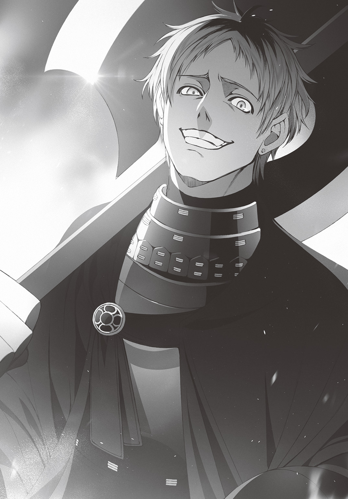
「大室......」
「ハハ。なんだオマエ、ミナトのくせに美人の女子に囲まれてるのかよ。おいおい、オマエみてえな雑魚が、いったいどんな手品を使ったんだ？」
大室は鼻で笑った。相も変わらず僕に対して見下すような態度をとってくる。
だがそんなことはどうでもいい。
それよりも、訊かなければならないことがある。
「大室......どうしてお前が《キャッスル》の英雄部隊に......」
「どうしてってそりゃオマエ、俺が神様ってヤツに選ばれた、英雄の素質を持つ存在だからだよ」
大室は手の甲を見せつけるように、戦斧を握る右手を持ち上げた。
そこには紋章が刻まれている。
二本の斧を交差させたようなデザインの紋章だった。
「召喚された後、樹海の中でモンスターに襲われてた俺をゲオルの兄貴が助けてくれてな。紋章の意味を教えてもらった。俺の紋章は徐晃っていう名前の英雄の力を秘めた、超つええ代物らしいぜ」
「徐晃......三国志の英雄......大斧使いか」
「そうらしいな。ま、俺にはよくわかんねえけど」
大室がへらへらと笑う。
「けどまあすんげえ力を手に入れたのは間違いねえ。これさえありゃあモンスターに対しても一撃無双。クッソ楽しいぜ、異世界生活はよぉ」
「............ッ」
大室の言葉に僕はピクリと耳を動かした。
待てよ。
モンスターを相手に、無双？
「もしかして......《ＺＯＯ》の集落を襲った学生は、大室なのか？」
僕の問いに、大室はにやりと口を歪めた。
「ああ。ありゃあ楽しかった。マジで笑えたぜ。弱いモンスターが、悲鳴を上げて逃げ回っててな。クッソきたねえ見た目のゲテモノが、人間みたいに泣きわめくんだ」
「......大室......お前......!!」
人間みたいに泣きわめいて当然だ。
何故なら、《ＺＯＯ》のモンスターは理性がある。
人と同じ恐怖と痛みを感じるんだ。
「おっと、勘違いすんなよ。俺が《ＺＯＯ》で暴れたときはまだ《キャッスル》に所属するための儀式は済ませてなかったからな。さっき誰かが言ってた通り、あの時点ではルール違反になってねえんだよ」
大室はいっさい悪びれた様子もなく、むしろ愉快そうに笑っていた。
僕は拳を硬く握りしめる。今すぐにでも大室の顔面に一撃を食らわせたい。そんなふうに思えた。
けれど。僕よりも先に怒りを爆発させたのは、麻梨果だった。
「あなたみたいなのは、ひねり潰されるべきです」
麻梨果は、ふたたび木刀を上段に構え、姿勢を低く保った。
大室も戦斧をかかげた。
「くっ。ハハハ！ なんだなんだぁ？ ダセエ眼鏡女が俺に勝てると思ってんのか？ いいぜ。服だけ綺麗に切り裂いて、ズタボロにしてから犯してやるよ。あ、それ、超やべえな。マジで芸術点高いじゃん」
「汚い声をそれ以上、聞かせないでください。耳が腐ります」
「......あ？ 犯す前に殺されてえのかオマエ？」
「――待て」
今にも激突しそうな麻梨果と大室を止めたのは、ゲオルギオスの声だった。
待ったをかけるように、身体の前に差し出された大剣を見て、大室が不満げな声を漏らす。
「なんスかゲオルの兄貴。俺、あんな女に負けねーッスけど」
「貴様の実力は評価している。だが注意力が足りんな。すこしは周りを見ることを覚えよ」
ゲオルギオスが僕たちのほうへとあごをしゃくる。
そして、言葉を続けた。
「英雄の紋章を持つ少女だけではない。貴様と同じ人種のあの少年少女は、神族、魔物、精霊、悪魔――それぞれ異なる属性の紋章を持っている。鑑定士がいないと個性までは判断できないが、警戒するに越したことはない」
「えー、考えすぎッスよ。ミナトみてえなしょぼい野郎がひとりと、あとは全員女だし、英雄属性の俺たちの敵じゃあ――」
「愚か者。魔物や悪魔はどうでもいい。だが、神族の紋章を持つ者。そいつだけは侮ってはならん」
ゲオルギオスの目が栞里へと向いた。
栞里は顔色ひとつ変えずに、視線を受け止める。
その反応に、ゲオルギオスはわかりやすく顔をしかめると、大室に説明した。
「娯楽を好む創造神はこの世界にさまざまな対立が起こりやすい仕掛けを施しながらも、自由な戦争は認めず、《アンティゲーム》と呼ばれる双方合意のルールを定めて行なう遊戯でのみ争うことを義務づけた。何故かわかるか？」
「さあ、よくわかんねえッス」
「――自由にやらせたら、神族の国が一瞬で世界を征服できるからだ」
「へ？」
「強さのケタが違うのだ。ルールなしの争いでは、我々は神族の足元にしがみつくことさえできん。大室斗真よ。貴様など、瞬きをひとつする間に――消し炭だ」
「ひえー......マジすか」
「このまま無法状態で神族と戦えば、我が英雄部隊だけでなく《キャッスル》に甚大な被害を及ぼしかねん。一気に攻め落とすチャンスだったが、リスクは取れん」
「......まっ、ゲオルの兄貴が言うなら、仕方ないッスね」
大室が不服そうに言った。
するとゲオルギオスは片手を天にかかげ、高らかに声を張る。
「報復戦争の終了を宣言する！ これより先は不戦の聖約がふたたび結ばれ、《キャッスル》、《ＺＯＯ》ともに双方への攻撃が禁じられる！」
そして、ゲオルギオスは長老へと顔を向けた。
「まさか偶然にも神族の紋章持ちが訪れていたとは。悪運が強いな、《ＺＯＯ》の長老よ」
「好き放題、暴れてくれおって。復興するのにいくらかかると思っておる」
「何度も言うが、この報復攻撃は《ＺＯＯ》側の過失だ。賠償を求めるのであれば、《キャッスル》に《アンティゲーム》を仕掛けることだな。もっとも――そのときは、そちらには樹海に出現した謎の建造物を賭けてもらうことになるが」
ゲオルギオスはニヤリと笑った。
長老が舌打ちする。
「なるほど。ここで退いたとしても、目的は達成できると目論んだわけか。無理をして神族の少女と無法の中で争う必要はない......と」
「これが政治というものだ。醜き魔物の長よ」
そう言い残すと、ゲオルギオスは部下たちを引き連れて、踵を返した。
大室も一瞬だけ僕に嘲笑を向けると、くるりと背中を向ける。
去り際、樹海の入口で戦意もなくただ怯えぷるぷると身体を震わせているスライムをちらりと見て、
「なあオマエ。オマエも《ＺＯＯ》のモンスターか？」
「ぴ、ぴぎっ？」
「国に所属する者はその身に特別なオーラをまとうからすぐに判別できる。そのスライムは、ただの野生だ」
ゲオルギオスがそう言った瞬間――
「そんじゃエンリョなく♪」
大室は、巨大な戦斧をスライムの頭頂に振り下ろした。
「びぎゃあああああああああああああああああああああああああああ!!」
断末魔の叫びを上げて、スライムが潰れる。
水分でできた身体はぐちゃぐちゃに崩れ、地面に染みて、水たまりと化した。
「い～ねえ。やっぱ、弱いヤツが泣き叫ぶ声を聞くのは、最高の娯楽だぜ。自分が今、高ぇところにいるのを実感できる」
スライムを一撃で屠った大室は、下卑た笑みを浮かべてそう言うと、他の英雄たちとともに歩き去って行く。
僕は、その一連の外道な行いを見て。
――僕自身が、スライムのように叩き潰される姿を想像した。
「なんなのアイツ。気分悪ッ。マジサイテーなんだけど！」
「ワタシも、こんなにバッドな気持ちになったのは初めてデス！」
大室たちの去っていく背中を見送りながら、遊子とエマ先輩が悪態をつく。
だけど。そんな声も今の僕にはどこか遠くに聞こえて。
ぐしゃり、と。
自分があっけなく叩き潰される瞬間の映像が、何度も何度も頭の中でループしていた。
†
その日、僕たちは《ＺＯＯ》の集落に泊まった。
英雄部隊と同じ人間である僕たちを怖がる住民もいたけれど、長老とモズが必死で民を説得してくれた。さすがに麻梨果や栞里の存在が《キャッスル》の英雄部隊を退けるきっかけになったと聞けば、住民たちも僕らを排除しようとはしなかった。
そうして僕たちは、長老の持ち物だという空き家を、寝床として使わせてもらえることになった。
――時が経ち、夜が訪れた。
僕は、布団からガバッ、と、勢いよく身体を起こす。はあはあと呼吸を整える。
服が汗でびっしょりと濡れていた。
......嫌な夢を見た。
大室と望まぬ再会をしたせいだろうか。
夢の中で僕と大室は旧校舎にいて。
床に組み伏せられた僕の前で、大室が一冊ずつ丁寧に、祖父の本を焼いていく。
そんな夢だ。あの日、実際に見た光景のフラッシュバックだ。
「......風に当たってこよう......」
僕は、嫌な考えを振り払うように頭を振ると、布団を抜け出して外に出た。
樹海の夜は、薄暗い。
葉の隙間から、三つもある月の光が降り注いでいて、あたりをぼんやり照らしてくれていた。
夜風がさらりと頰を撫でる。
ああ、気持ちいいな。頭を冷やすのにうってつけだ。
――ブォン！ 突然、空気を切り裂くような、重い音が聞こえた。
「あれ？ 誰かいるのかな......」
音の方向に目をやると、
「......武田さん？」
麻梨果の姿が見えた。
池のほとりで、月明かりの下、手にした木刀を振っている。眼鏡の奥の瞳を鋭く細めて、切りそろえた前髪の先から汗が飛び散るのも気にせずに。
華麗な足さばき。力強い踏み込み。前方の木々を揺らすほどの風圧を生じさせる斬撃。
剣術の稽古というよりも、剣舞、とでも呼びたくなるような姿だった。
邪魔になるかと思い、僕が踵を返しそうとした瞬間、僕の足が草を踏んで、がさりと音を立ててしまった。
「........................ッ!?」
麻梨果はすぐに素振りの手を止めると、俊敏な動きで背後に飛びすさり、木刀を構え直した。
だが僕の顔を確認すると、
「......先輩でしたか」
ふっと表情をやわらげて、木刀を納める。
「ごめん。覗き見してたわけじゃないんだ」
僕は苦笑しながら麻梨果に歩み寄った。それから彼女が手に持つ木刀に目を留める。
「いつも夜中に素振りしてるの？」
「......はい。嫌なことがあるたびに、やるので」
嫌なこと。もちろん《キャッスル》が襲撃された件のことだろう。
麻梨果は手近な切り株に座った。僕も促されてとなりの切り株に腰をおろす。
「今日は......すみませんでした」
すると麻梨果はおもむろに頭を下げた。
僕は面食らった。
「なんで謝るの？」
「気を取り乱して、みっともない姿を見せました。彩東先輩の作戦も待たずに――」
「ああ、たしかにあれはびっくりしたなぁ。武田さんらしくなかったから」
「......ごめんなさい」
「いや、謝る必要はないんじゃないかな」
「え？」
「武田さんにとって、絶対に許せないことがあったんでしょ？ だったら、我を忘れて先走るのは当然だと思うよ」
麻梨果はしばらく黙っていたが、やがてぽつりと言葉をこぼす。
「先輩は......優しいんですね」
「えっ？」
「いえ、団体行動を乱したら、普通は変な子だと思うじゃないですか。それなのに、先輩は、変なわたしを当然だと肯定してくれる......」
「う、うーん。そんなに深く考えてたわけじゃないんだけど」
「だからこそ、優しい、と思えるんですよ」
麻梨果の表情はあまり動かない。しかしその口元はわずかに笑みの形になっていた。
ふいに彼女は真剣な顔になる。
「モンスターになら何をしても構わない――そう考えている人間のことが、わたしは大嫌いだったんです。わたしも、モンスターみたいに扱われていましたから」
「なっ」
「あ、同情とかしなくて大丈夫です。そういうの、お互いに重いと思いますし」
「いやでも」
「わたしの家は代々剣道の道場を営んでいまして。わたしも幼い頃から剣を握り、父に稽古をつけてもらっていました」
「......そういえば、中学では三年連続で全国優勝だったんだっけ？」
「よく知ってますね」
「なんか有名らしいし」
本当は栞里に教えてもらうまで知らなかったんだけど。それはわざわざ言うほどのことじゃないだろう。
「まあ、同年代だと敵はいませんでした。正直、他の子の太刀筋なんて、時が止まって見えるくらいでしたし」
「紋章の恩恵を授かる前から凄かったんだなぁ」
「きっと、凄すぎたのかもしれませんね。そのせいで、わたしはクラスメイトから怪物――モンスターだ、と呼ばれていましたから」
「............」
モンスター。この世界に実在するモンスターとは異なる意味の言葉。
「武田麻梨果は強くて怖ろしいモンスター。だから、何をしても許される。『これは、弱い者いじめではなく、強い者への挑戦なのだ』――と、いろいろな嫌がらせを受けました」
「嫌がらせ？」
「モノを投げられたり。ニセの告白でからかわれたり。女子からは剣道の面や胴着が不潔だと言われたこともありますね。数着用意して、洗濯も欠かしていなかったんですけど」
麻梨果が悲惨な嫌がらせ被害の数々を、淡々と告白した。
僕は胸の内にカッと怒りが湧きあがり、拳をぐっと握りしめる。
「なんだそれ......。全然、言い訳になってない。本質は弱い者いじめそのものだ」
「まあ。たぶん一般的には、そう呼ばれるんでしょうね」
麻梨果は苦笑すると、幼子が殻にこもるように、ひざをかかえて。
「......同年代の人間は浅はかで嫌いです」
心の中を絞り出すような声で、そんなふうにつぶやいた。
「わかる」
僕は即座にそう答えた。
麻梨果は、すこし意外そうな顔で、僕を横目で見あげた。
「わかるんですか。先輩、同年代の友達、多そうなのに」
「えっ。どうして？」
「初対面の女子とも普通に話していますし。――彩東先輩とは、特に親密ですから」
「親密、かなぁ」
「デレデレじゃないですか。わたしてっきり、先輩は女性にだらしない人なんだと思っていました」
「ええっ!?」
何それ。風評被害もいいところだ。
「自慢じゃないけど、生まれてこの方、女の子と付き合ったことなんてない......よ......？」
「......えっ。うそですよね？」
「いやホントに」
「わたしみたいな地味な顔だったらともかく......先輩、顔もカッコイイのに」
「そんなこと、言われたことなかったなぁ」
僕は頰を搔きながら苦笑した。
たしかに特別に不細工だと言われたこともなかったけれど。
いまいちピンとこないな。
――というか、麻梨果の言葉は、ツッコミどころ満載だ。
「そもそも。武田さん。それ、間違ってるから」
「......何がですか？」
「武田さん、自分のこと地味って言ったけど......。すごくかわいいと思うよ」
僕は素直にそう言った。
すると麻梨果は表情を変えないまま、耳だけを真っ赤に染める。
「先輩......。やっぱり先輩は女性にだらしない人ですね」
「い、いやそうじゃなくて！ 武田さんがあまりにも自分を卑下するから！ その、僕はただ素直にかわいいと言っただけで」
「......あの。かわいいとか、連呼しなくていいです」
麻梨果は気恥ずかしさのあまりか身体を縮めて、じろりと僕を睨みつけた。
「ご、ごめん」
「......だいたい、それを言うなら、わたしも素直な感想を口にしただけですから。卑下するのは先輩も同じじゃないですか」
「あっ、そうか。そういうことになるのか」
「変な人ですね、先輩は」
麻梨果は呆れたように苦笑を浮かべた。
変な雰囲気になった気がして、僕は、慌てて話を変えることにした。
「と、とにかくさ。僕も、武田さんの気持ちがわかるんだ。実はね、僕も武田さんと同じで、同年代のくだらない連中に、くだらない嫌がらせを受けてきたから――」
僕は僕のこれまでを話すことにした。
栞里や遊子やエマ先輩にはまだ明かせていない、僕と大室の関係。いじめを受けていた事実。それを隠しているのは、わざわざそんな話をして、彼女たちを嫌な気持ちにすることもないだろうって判断と――ほんのすこしの見栄があったからなのだけど。
むしろ麻梨果に対しては、この話をしたほうがいい気がした。
麻梨果は僕やパーティーのみんなにも、まだ壁をつくっているから。
すこしでも彼女の心の氷が溶けて、みんなと馴染んでくれるといいな――と。
そう思ったんだ。
......それに僕自身も、大室の話をすることで、気分がラクになるかもしれないし。
そして、五分後。
「――っていうことがあったんだ」
僕の過去語りが終わると、麻梨果は、眼鏡の奥の瞳を――ぎっ。憎い敵を睨むように細めて、右手の木刀で、ずん！ 地面を深くえぐった。
「先輩にも......そんなことがあったんですね」
「まあね。僕が何かをされるのは、まだギリギリ許容範囲だったんだけど。さすがに祖父さんの本を燃やされたのは、頭にキたなぁ」
「次に会ったら、あの大室という男をクー・フーリンの力でズタズタに粉砕します」
「あはは。心強いけど。無理はしないようにね」
苦笑しながら僕は言い、腰を上げた。
「気分転換もできたし、そろそろ戻るよ」
「あ、はい。お疲れ様でした。愚痴を聞かせるみたいになって、ごめんなさい」
「いやいや。僕も武田さんに話ができて気が楽になったから」
「......だといいのですが」
「それじゃあまた明日。武田さんもあんまり夜更かししないようにね」
「はい。お気遣い、ありがとうございます」
素直にちょこんと頭を下げる麻梨果を残して、僕はこの場を去った。
――麻梨果、険が取れると、やっぱり普通にかわいいよなぁ。
「武田さんとずいぶん仲良くなったのね」
宿泊先の建物に戻ると、何故か栞里が僕を迎えた。
制服も髪型もしっかりと整えた姿で、樹木の根元で幹に背中を預けて立っている。
「あれ、起きてたんだ？」
「目が覚めたのよ。あなたが出て行く気配があったから」
「ああ、起こしちゃったのか。ごめん」
「そのことはべつにいいわ。......それよりも、武田さんと何を話していたの？」
栞里は腕を組んだまま小さな声で尋ねた。
「えーっと......。いや、まあ、何の変哲もない世間話をね」
すこし考えたあとで僕は適当な返事をした。
麻梨果のデリケートな話題もあったから、会話の内容を教えるわけにはいかないだろうと思ったのだ。
「ふうん。ちょっとした世間話、ね。私に言えないような、ちょっとした世間話、ね」
「......なんで責めるような目をするのかな」
「責めるような目なんてしていないわ」
声音は冷静。だけど唇は正直で、つん、ととがっていた。
うわあ。あきらかに機嫌悪いぞこれ。理由はよくわからないけれど。――やっぱり隠し事をされるのはいい気がしないのか。
不機嫌な聖女様の機嫌を取るにはどうすればいいんだろう。うーむ。
などと考えて、僕は結局、
「ほ、本の話をしようか。『クレストサーガ』の続き」
無難なカードを切り出した。
すると栞里は、
「今はそんな気分じゃないわ」
ふいとそっぽを向いて、拗ねたような声で言った。
「あの、どうして機嫌悪いの？」
「べつに悪くないわよ。あなたが武田さんと〝秘密の話〟をしていたとしても、私には関係のないことだもの」
「もしかして......やきもち焼いてる、とか？」
「あなたの頭には脳みその代わりにアンコでも詰まっているのかしら。適度に手入れをしてあげないと腐るわよ」
「ホント、罵詈雑言のバリエーションが豊富だなぁ」
「..................................................................私が柏木くんを慰めようと思ったのに」
「え？」
言葉が聞き取れず、僕は栞里の顔を見た。
栞里は慌てて顔をそむける。
「な、なんでもないわ。私、もう寝る」
そう言うと栞里は、くるりと背中を向けて、建物の中に引っ込んだ。
――ああ。これは本格的に機嫌を損ねたかな。
ひと晩寝たらケロリと忘れてくれるといいんだけど。
†
「起きて、柏木くん。出かけるわよ」
翌日の朝。
そんな栞里の声に起こされた僕は、まだ寝ている他のみんなを置いて、建物の外に出た。昨日の不機嫌さを引きずっているかもと思い栞里の横顔をうかがってみたが、クールな横顔からは感情は読み取れない。
出かけるのに僕だけを呼んだってことは、もうそれほど怒ってないってことかな？ というかそもそもべつに怒ってはいなかった？
まあ、どっちでもいいか。
「――ところで、どこに行く気？」
「長老の家よ」
僕の問いに前を歩いていた栞里がすぐに答えた。
「みんなが起きる前にやっておきたいことがあるのよ」
「やっておきたいこと？」
「ええ」
栞里はうなずいたが具体的なことは何も語らなかった。
会話をしながら歩いていると、すぐに長老の住居に到着する。
「あら？」
栞里がふと声を上げた。
「あそこにかわいいエルフがいるわ。長老に仕える召使いさんかしら」
長老の暮らす建物の前――赤、白、黄色、とさまざまな色の花を咲かせる花壇に、小さな子どもの姿があった。
とがった耳と綺麗な金髪のロングヘア。萌黄色の衣服をまとったその姿は、まさしくファンタジー世界のエルフ！ 幼いながらも将来有望な端整な顔立ちの美人エルフは、ややしょんぼりした表情で、じょうろで花に水をやっていた。
「あ！ おはようございます、長老さん。さすが、朝早いんですね」
僕が片手をあげてエルフに声をかけると、栞里が驚いた顔で僕を振り向いた。
「えっ......長老？ あのエルフの女の子が？」
「ん？ そうだけど......あれ、彩東さん、知らなかった？」
「知らないわよ。長老はいつも顔を隠していたから......。小説本編でも《ＺＯＯ》の長老は正体不明でしょう」
栞里が唇をとがらせて言う。
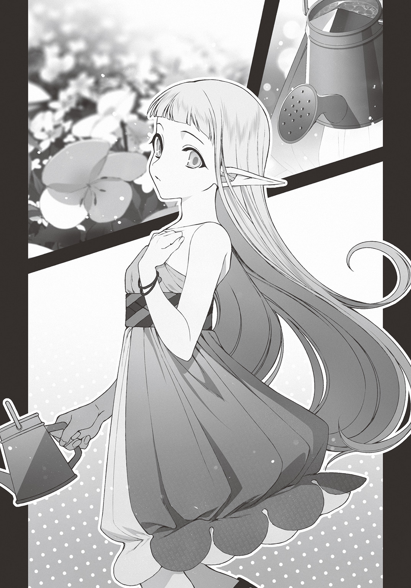
「ああ、そうだったっけ。うっかりしてた」
日常的に設定資料集を読んでたせいで、どこまでが本編に使われた設定なのか、僕の中ではだいぶ曖昧だ。
まあこの世界を渡り歩く上ではどうでもいいことなのだけど。
「やれやれ。ミナト殿は本当になんでも知っておるのだな」
僕と栞里が近づくと、《ＺＯＯ》の長老――エルフの少女は、見た目にぴったりのキュートな声でそう言った。
「ええまあ。ちなみにいつものしわがれた老人の声は、魔法でわざとそういう声に聞かせてるんですよね」
「うむ。一国を統べる長としての威厳を示さねばならんのだ。少女の見た目と声では、侮られることも多いのでな」
「女の子が......長老......」
栞里は呆然とつぶやいた。
長老はくすくすと軽く肩を揺らして、上品に微笑む。
「驚くのも無理はあるまい」
「それは......驚くわ。本を読んでいるときも、実際に会ってからも、年老いたおじいちゃんを想像していたから」
「良いことだ。わしの偽装が成功していた証拠だからの。――さて、貴殿らにはあらためて名乗ろうか。もっとも、ミナト殿はすでに知っているかもしれんが......」
そう前置きして、長老は続けた。
「わしの名はララノア。まだ千年とすこししか生きていない若輩者だが、《ＺＯＯ》の中では一応、最年長ということになっておる」
長老――ララノアは、口調だけはそのままに、あどけない声と顔でそう言った。
すると彼女はいきなり僕と栞里の足元にじょうろの先を向けた。水がアーチを描き、僕らの足元の地面を濡らす。
何をやっているんだ？ と、首をかしげていると、ふいに足元からにょきりときのこが生えてきた。
座布団ほどの大きさのかさを持つきのこである。
「長々と立ち話をさせるのも申し訳ないからな。不恰好だが、それは椅子の代わりだ。気楽に腰かけてくれ」
「え......っと？」
「――わしに話があるのだろう？ ミナト殿、シオリ殿」
ああそうだった。ララノアは人の心を読めるんだった。僕と栞里がどうして早朝からララノアを訪ねてきたのか、すでにお見通しなのだろう。
栞里はうながされるまま、きのこ椅子に腰を下ろした。
僕も続けて同じように腰を落ち着ける。
栞里が話を切り出した。
「単刀直入に用件を言うわね――長老ララノア。私たちを《ＺＯＯ》の正式な住民として認めてくれないかしら」
「えっ」
僕は声をあげた。栞里の横顔を見る。
栞里は僕をちらりと見ると、大丈夫だと言いたげにうなずいて、ふたたびララノアに視線を戻した。
「国の長に認められ、洗礼を浴びれば、私たちでも国に所属できる。そして、国に所属すれば、《アンティゲーム》の参加資格を得られるわ」
「シオリ殿。貴殿は我々《ＺＯＯ》の民のために《キャッスル》と勝負する気なのか？」
ララノアが訊いた。
「いいえ？」
が、栞里はあっさりと首を振り――、
「私たち自身のためよ」
そう言って、僕をちらりと見た。
......ああ、なるほど、そういうことか。僕はすぐに栞里の意図が読めた。
栞里は続ける。
「つまり、これは交渉よ。ララノアさん」
「ふむ」
「《ＺＯＯ》の代表として私たちが《キャッスル》に《アンティゲーム》を仕掛け、この国の守護神である樹海龍を奪還する――成功した場合、《ＺＯＯ》は私たちを正式に庇護下に置き、生活の援助、情報の提供など、あらゆる便宜を図ってもらうわ」
栞里はすらすらと考えを述べた。
ララノアは、学校の敷地があるであろう南の方角を一瞥して、
「《ＺＯＯ》としてはありがたい話だが......本当に良いのか？ 《キャッスル》はあの謎の建造物――〝校舎〟とやらを賭けなければ勝負を受けんぞ？」
「ええ。当然、そうね。私たちにとっては見慣れたただの校舎でも、この世界の住人にとっては未踏の古代遺跡も同じ。所有して、発掘したがるのは当然のこと」
「貴殿らはあの校舎で暮らしているのだろう？ もしも負けたら住居を奪われるかもしれんのだが......それでも良いのか？」
ララノアの問いに僕はすぐには答えられなかったが――
栞里は表情ひとつ変えずにうなずいた。
「ええ。まったく構わないわ」
「......彩東さん。他の三人の意見も聞かないうちに即答するかな、普通......」
「何を言っているの、柏木くん？ リーダーシップは私と柏木くんがとっていいことになっていたでしょう」
「まあ、それはそうだけど」
僕だって、まだ賛成ってわけじゃないのに。
僕と栞里が言い合っていると、ララノアが言葉を挟んだ。
「負けたときのリスクを考えると怖ろしくはならんのか？ この異世界で唯一の現世とのつながりである建物を手放すのだぞ？」
「怖ろしい？ 怖がる必要なんてないわ」
「ほう。恐怖とは人間ならば誰でも持っている感情なのだがな。明明白白なリスクを前に何故シオリ殿は恐怖しない？」
そのあまりにももっともすぎる問いかけに。
栞里はピクリとも表情を変えず。
まるで取るに足らないクイズの答えを口にするかのように冷静にこう言い放った。
「カンタンな話よ。――負けなければいいんだもの」
......ちょっ、何を勝手に威勢のいいことを言ってるんだ、栞里は。
最初は冗談かと思った。
けれど栞里の鉄仮面みたいな無表情を見れば、彼女が本気なのは明らかだ。
「ふむ......。協力いただけるというのなら、わしはありがたくその申し出を受けるまでだ。情けないことに、守護神たる樹海龍を失い、昨日の《キャッスル》の襲撃で戦闘に優れた若者は負傷した。貴殿らに頼れるならば、頼りたい」
ララノアは深く頭を下げた。
栞里が満足げに微笑む。
「交渉成立ね」
「彩東さん......。本当にいいの？ 《アンティゲーム》は双方合意でルールを決めて争うということ以外に決まった形はないんだよ？ 相手の出方によっては、危険な内容になるかもしれない。こんな大事なこと、僕たちだけで――」
「大丈夫よ。私たちならやれるわ。というか、それはあなたが一番知っているでしょう？」
「......！ いや、まあ......」
たしかに栞里の言うとおりだ。
正直なところ、栞里の神龍とエマ先輩のサキュバスはともかく、麻梨果のクー・フーリンと遊子のサラマンダーは紋章の中でも上位クラス。
僕のスライムは上位ではないけれど。打撃攻撃耐性があるため、《キャッスル》の英雄たちに対しては、実は相性が非常に良くて――
「ね？ 心配はいらないでしょう」
「彩東さんって意外と好戦的っていうか、戦闘民族みたいなところあるんだね」
「不満かしら？」
「......いや。乗りかかった船だよ」
懸念点は、ある。
それも僕にとってはそこそこ深刻な懸念点だ。
だけどここで《ＺＯＯ》に貢献して異世界での生活基盤を確保するのは大切なことだった。
今後の僕たちの生存率が大きく変わる。
食糧問題、情報収集、帰還方法の調査――
それらの面で、《ＺＯＯ》の協力を得られるのとそうでないのとでは、雲泥の差だ。
だから僕は〝不安の種〟をグッと呑み込んだ。
「............」
ララノアが一瞬だけ僕を見た。
もしかしたら僕の感情、心の奥底の揺らぎを、読み取ったんだろうか。
けれどララノアはそれについては特に何も言わずに、くるりと背中を向けた。
「他の者にも伝えてくる。《ＺＯＯ》に救世主が訪れたかもしれんとな」
「ふふ。救世主と呼ぶには打算的かもしれないけれど」
栞里が微笑んだ。
ララノアは首だけで振り返り、僕と栞里を交互に見ると、
「貴殿ら五人は皆、小さな闇と小さな光を同じくらいに抱えた、とても興味深い心の在り方をしておるな。その出会いが光の未来を呼ぶことを祈りたいものだ」
意味深な言葉を残して、去って行った。
ララノアの背中を見送ると、栞里は僕の肩をぽんとたたいて、歩き出す。
「ん？ 彩東さん、どこに行くの？」
「何よ他人事みたいに。柏木くんも一緒に来て」
「だからどこに？」
「《キャッスル》」
「え？」
「らしくないわよ、柏木くん。私の狙いを察せられない柏木くんではないでしょう」
栞里はやや唇をとがらせてそう言うと、
綺麗な目を慎重に左右に動かして、
それから髪の匂いが香るほどに顔を近づけて、
声の大きさを気にするように、
ほんの小さな声で。
「今から《キャッスル》に《アンティゲーム》の約束を取りつけに行くのよ」
――宣戦布告を意味する言葉を告げた。
なんてことだ。
まさか本当の本当に今すぐ仕掛けるつもりだったなんて。
栞里曰く《キャッスル》への宣戦布告は国家間の政治的行動――ゆえに「ナメられたおしまい」という気持ちがあるらしい。
政治をするならば政治をするなりの最低限の威厳というものがある。ララノアが国の代表として侮られることのないように、客人や政敵の前では顔を隠し、声を変えた。それとまったく同じこと。
遊子やエマ先輩はムードメーカーだが、ただそこにいるだけでパーティーの威圧感はガクンと落ちる。
だから僕だけを誘ったのだ。
早朝の、〝お忍び宣戦布告〟に――。
†
僕と栞里は《ＺＯＯ》を出ると《キャッスル》の領地がある西の方角へ向かった。
早朝の樹海。
僕たちは道なき道を順調に進んで行く。
野生のモンスターに襲われることもなかった。
昨夜、ララノアに、《ＺＯＯ》に泊まるならと、魔物除けの効果があるというドラゴンを象った木彫りの人形をもらっていたおかげだ。
――《キャッスル》と《アンティゲーム》......か。
もうだいぶ《キャッスル》の領地に近づいてきたところで僕の脳裏にまた不安がよぎる。
本当にやることになったら、大室も参加するんだろうか？
右腕が、ぶるりと震えた。
「やっぱり、嫌？ ――あの大室斗真という男とふたたび顔を合わせるのは」
隣を歩いていた栞里がふいに尋ねた。
僕は、えっ、と驚いて顔を向ける。
「ええと......そんなふうに見えた、かな？」
「あまり踏み込んでいい領域ではないのかもしれないけれど......昨日の大室って男子の態度、完全に柏木くんを見下していたわ。とても対等なクラスメイトには見えない」
「......まあ、そうだよね」
僕は苦笑して頰を搔いた。
栞里はとても鋭い。
きっと僕と大室の関係についても、だいたい勘づいているだろう。
異世界に召喚されたあの日。
ロッカーの中で縛られていた事実と合わせて、僕が受けてきたあらゆるいじめについても、なんとなく察しているはずだ。
「情けない話だけど......だいたい彩東さんの想像してる通りだよ」
「ねえ、柏木くん」
「ん？」
「怖ろしいなら、やめておく？」
栞里の目に意地悪な色はない。心の底から心配してくれているようだった。
が――
「怖ろしい？」
そこに含まれていた意外な言葉に、僕はきょとんとしてしまう。
「怖ろしいって、何が？」
「柏木くんは、あなたを攻撃していた大室斗真に恐怖を感じているのではないの？」
「ああ、なるほど。そっか。そういう心配か」
「？」
「そこはちょっと誤解があるかも」
僕の言葉に栞里が不思議そうに首をかしげた。
僕は震える拳を硬く握りしめる。
「たしかに大室とは顔を合わせたくないし、関係性は、彩東さんが考えているようなもので間違いない。でもべつに、あいつが怖ろしいと思ったことは一度もないんだ」
「そうなの？」
「うん。クズめ、と思ったことはあるけどね。特に大切な人の大切な物を燃やされたときは、殺してやりたくなった」
「驚いた。柏木くん、普段は優しいのに、過激なところもあるのね」
「僕、いつもそんな頼りなさそう？」
「『優しい』は褒め言葉よ？」
「だとしたら、素直にうれしいけど」
「――でも、そう......怖れていたわけではないのね。けれどそれだったら、どうして柏木くんはあの男のされるがままになってきたの？」
まるで現場を見てきたような言い方だな――と思った。
とはいえ栞里は普段からこの口調。
気にするほどじゃないな、と思って、僕は普通に答えることにした。
「僕が反抗できる奴だと知ったら、他の奴がターゲットにされる。どうでもいい奴が狙われるならともかく、昔の友達とか、家族とか、大切な人に矛先が向いたら困るし」
「......それで我慢していたの？」
「あらためて説明するとカッコつけてるみたいに聞こえるかも。あはは」
僕は苦笑する。
「どれだけカッコつけても、情けなくてカッコ悪い事実でしかないんだけどね」
「そんなことないわ」
「......彩東さん？」
栞里の声の調子が変わっていた。
見れば、栞里はいつの間にか立ち止まっていて、僕の数歩後ろでうつむいていた。
――どうしたんだ？
栞里は、何故か何かを堪えるように唇を嚙み、その華奢な肩を震わせていた。
唇が言葉を紡ぐ。
「柏木くんは、情けなくなんか、ない」
「え？」
「あなたが自分を悪く言う必要なんてどこにもないわ。ゴミ以下の価値しかない野蛮な男に悪意を向けられた被害者が〝情けない〟などと呼ばれてしまう世界なんて、真夏の太陽にやられて干からびたミミズぐらいに無価値よ。そんな世界は滅びていい」
「彩東さん......」
「被害者である柏木くんが悪いわけがない。けれどおそらく、私たちの住んでいた世界は――あの汚らしい世界は、何も悪くないはずの柏木くんに追い打ちをかけたはず」
「！」
その通りだった。
大室にいじめられる僕を見て、他のクラスメイトは笑っていた。
楽しそうに、笑っていた。
それはもう一個のエンターテインメントだった。
僕は、それも呑み込んだ。
仕方のないことなんだと自分に言い聞かせて、たったひとりで退屈な日々を過ごしていた。
「そんな理不尽、ぶち壊すべきだわ」
――僕の退屈な我慢の日々を、栞里は、そんなことする必要はないんだと、言い切った。
彼女の声は震えていて。
肩も震えていて。
長くて綺麗な前髪の隙間から、ほんのすこし覗いた瞳はあきらかに怒っていた。
僕はピンときた。
もしかして――栞里が他の三人に黙ったまま、強引に《キャッスル》との戦いを推し進めたがっているのは、僕に復讐する機会を与えるためなのか？
僕と大室の関係に気がついて、それで栞里は舞台を整えようとしている？
「彩東さんは――」
「いいの。これはあなたのためじゃない。私たちのためよ」
「僕たちの？」
「私は現実世界のくだらない価値観が大嫌いだった。全部全部、消えてしまえと思っていた。同調圧力、不当な上下関係、心にもないお世辞と汚い陰口、弱者に対する哀れみ、強者に対する妬み――そういったしがらみのすべてが、心底、吐き気がするほど、嫌い。そして、何よりも嫌いなのは――」
一拍置いて、栞里は続けた。
「嫌だからと抗ったところで、地位が確定したらよほどのことがなければ立場を変えられない――逆転の許されない社会が一番嫌い」
「逆転......」
「そうよ。いじめる者はいじめる者のまま、いじめられる者はいじめられる者のまま。勝ち組は勝ち組、負け組は負け組。......一族のお荷物は、一族のお荷物のまま。ヒエラルキーは未来永劫、変わらない」
......一族？ それは栞里自身の話だろうか？
彼女はお嬢様だと言っていた。ヒエラルキーの話をするならば、最上位に位置する人間だと思う。
それなのに、そんな栞里が現実世界を嫌うのは、どうしてなんだろう？ 激昂し、言葉を連ねる理由はなんだろう？
気になったが、しかし僕が尋ねるよりも先に栞里は言葉を続けていた。
「だけどこの世界は元の世界とは異なる常識で動いてる。この世界でなら、現実世界のしがらみを断ち切れる」
「現実の......しがらみ......」
僕はその言葉を口の中で弄んだ。
そして、思い出す。
僕がどうして大室にやり返さなかったのかを。
金と権力を盾にした罰せられることのない大室の環境。そして容易に僕の大切な人にアクセスできてしまう環境こそが最大の障壁になっていた。
けれど。
「ああ。そっか。ここにはアイツの後ろ盾もなければ、報復を怖れることもないんだ」
「そうよ。ここは現実世界じゃないんだもの」
「彩東さんや他のみんなに矛先が向くことは？」
「私たちはこの先、パーティーとしてずっと一緒に行動する。あの男に寝首を搔かれるような間抜けはしないし......私たちだって充分に強いもの。大丈夫。抗えるわ」
「大室も紋章持ちだ」
「大丈夫。それでもあなたは勝てる」
「勝てる......のかな。僕の、スライムの力なんかで。いくら打撃攻撃を無効化できるからって。相手が特殊攻撃を使えたら――」
「大丈夫」
震える右手が、やわらかな感触に包まれた。栞里の顔が、いつの間にかすぐ目の前にある。彼女の両手が慈しむように僕の右手を包んでいた。
――な、なんだこれ。なにこのシチュエーション。こんなにしっかりと手と手を触れ合わせるなんて初めてのことだ。
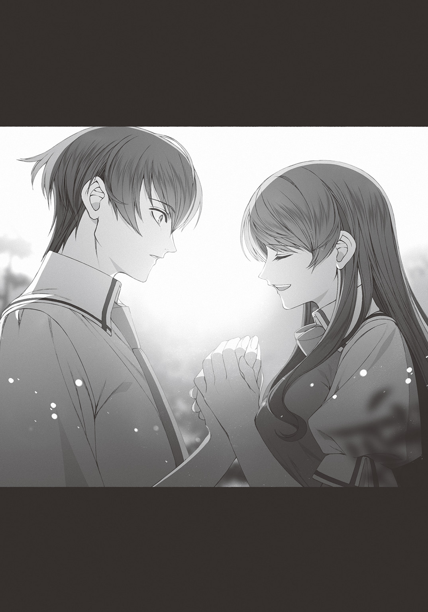
心臓が鳴る。
冷え切っていた心が温かくなっていく。
......冷え切っていた？
ああそうか。
僕は自分でも気づかないうちに、こんなにも現実世界のいろいろなことに対して冷めていたんだ。
その心を理解し、想いを共有してくれる栞里という存在が、こんなにも気持ちをラクにしてくれるなんて。
栞里は僕の目をまっすぐに見つめると、ハッキリとした口調でこう言った。
「全部を自分ひとりで抱え込んで、たったひとりで我慢し続けてきたんだもの。そんなこと弱い人間にはできない――あなたは最強よ」
「彩東さん」
「だって、柏木くんは――」
栞里の唇が動いて、その情報を口にした途端、僕の視界は大きく開けた。
――ああ、なんだ。なるほど。そういうことだったのか。
栞里の口から告げられたひとつの事実。
彼女が僕のためを思って、今の瞬間まで隠してきた真実。
それは僕の心の奥底にそびえていた厄介な壁を崩壊させるのに充分な情報だった。
我慢する必要はない。
戦争を仕掛け、打ち倒し、現実世界での行いに報いさせた上で、すべてを手に入れる。
そんな栞里のプランに反対する理由は何もなくなった。
「勝てる」
僕は確信に満ちた声でつぶやき、右手の指を折り曲げ、握り拳をつくった。
運動も何もやっていない、まるで強そうには見えない拳。
だけどそこには無限の力が宿っている。
そう見えた。
「ええ。絶対に勝てるわ」
栞里が自信満々の表情で断言する。
情けないところも多いけれど、真面目な場面では頼れる参謀役の少女にそう言われると、心の底からそう思える。
「ねえ。これを受け取ってくれるかしら」
そう言って、栞里が差し出したのは――
真っ白な手袋、だった。
「これは？」
「昨日、モズにお願いして見繕ってもらった手袋よ。私たちの勝利を確実なものとするためのキーアイテム」
「へえ。打撃力を上げる魔法の装備とかかな」
「いいえ。ただの手袋よ。右手の紋章を隠すためだけのアイテム」
「右手......」
僕は自分の手を見つめた。スライムの紋章。
栞里はうなずく。
「この先――この世界で生きていく上で、あなたの紋章は隠した方がいい。《キャッスル》に入るときも、鑑定士とやらに紋章を見られないようにすべき」
「たしかにそうだね......。彩東さんみたいな《神眼》持ちには隠し通せないけど、《神眼》持ちはそもそもほとんど存在しないし」
「ええ。だから紋章を見られさえしなければ、柏木くんの特異性が見破られることはない。そして見破られなければ――柏木くんは最強の初見殺しになれる」
「......わかった。ありがたく受け取るよ」
僕は栞里の言わんとすることを理解して、白い手袋を受け取った。それを右手と、左手にも装着する。
片方だけだと不自然すぎて、紋章を隠す目的で手袋をしているとバレてしまうから。
あくまでファッションだと思わせるために、両方に装着する。
「それじゃあ、行きましょうか」
「うん。――というか、いつの間にかこんなところまで来てたんだね」
僕は振り返り、木々の向こうに指を向けた。
指の先。
そこには、高々とそびえる灰色の防壁が存在した。
それは《ＺＯＯ》と《キャッスル》の領地を隔てる壁であり、《キャッスル》の辺境の要塞都市――ゲオルギオスの屋敷が存在する都市への入口だった。
†
数分後。
溶かした金を塗りたくったようなぎらぎらした悪趣味な洋館に到着すると、僕と栞里は使用人に応接室へと案内された。《キャッスル》の領内は古代ローマのような石造りの建物が主流で、《ＺＯＯ》とはまた違ったファンタジー感があった。
僕はふかふかのソファに腰かけていた。
栞里も、ピッタリと僕の隣に腰を落ち着けている。
ソファの大きさのせいだとわかってはいるけれど、ふとももとふとももがくっついているし、髪から甘い匂いは漂ってくるしで、敵地の真ん中だというのに、まるでふさわしくない感情がむくむくと芽生えてきた。
――いけない。これからの交渉に集中しないと。
実際には栞里にほとんどしゃべってもらうんだけどね。
五分ほどが経過した後。
扉が開いて精悍な男――ゲオルギオスが部屋に入ってきた。
先日のような甲冑ではなく、しゃれた木綿の服を着ている。
「待たせたな、異世界の少年少女よ」
「いいえ。くつろがせてもらったわ。他国を侵略して得た富でつくられたソファの座り心地、最高ね」
うわあ。開口一番、ケンカを売ったぞ、栞里。
案の定、ゲオルギオスのこめかみがピクピクと動いている。激昂こそしないが、生真面目な顔に不機嫌さがにじみ出ている。
ゲオルギオスと《キャッスル》の国柄について、僕と栞里はすでに熟知していた。
他国に対して挑発的な態度を繰り返し《アンティゲーム》に誘う。
そして、他国が持つ価値の高い資産を奪い、富を得る。
取引先は主に創造神の眷属が運営する中立商業国家《カンパニー》。
ゆえにいくら周辺国家から悪評を買っても、取り引きには差し支えない。
この世界において《カンパニー》は絶対の中立。どんな国に対しても必ず平等に接するのだ。
ゲオルギオスは《キャッスル》東部の国境を任された英雄。
主に《ＺＯＯ》に対して小刻みな《アンティゲーム》を仕掛けている男だ。
樹海の真ん中にいきなり出現した学校の校舎を狙っているのは、遺跡か何かのように宝が発掘できると期待しているのだろう。
べつに大した物はないと思うけれど。
ああ、いや、僕たちの世界の物は、この世界の住人にとっては宝に匹敵するような物ばかりかもしれないな。
「さて。早速だが貴様らの話を聞かせてもらおうか」
テーブルを挟んで反対側、僕と栞里の正面のソファに腰かけて、ゲオルギオスは早速切り出してきた。
「《ＺＯＯ》の使者として訪れ、このゲオルギオスを指名したからには、実のある話をしに来たのだろう？」
「ええ。野蛮で卑劣な蛮族の国家にすこし痛い目を見せてあげようと思って」
「ここで戦り合う気か？」
「一応、《ＺＯＯ》の使者として来ている以上、世界のルールを破るような真似はしないわ。正々堂々――この世界の掟に則って、制裁してあげる」
「ほう......。仕掛ける気なのか！ 《アンティゲーム》を！ この私に！」
言葉を区切りながら強い口調で言うゲオルギオス。
だが声の大きさだけで威圧できるほど栞里はやわな女子ではなかった。
「ええ。《ＺＯＯ》は学校の校舎――私たちと一緒にこの世界に召喚されたあの建物を賭ける。そして《キャッスル》には《ＺＯＯ》から奪った守護神、樹海龍を賭けてもらうわ」
「いいだろう。安い条件だ」
「そう。ではゲームのルールについてなのだけど」
「おっと。それについては私の方から注文をつけさせていただこうか。挑戦を受けたのは我々《キャッスル》だからな。ルールに関する主導権はこちらにある」
「そうね。じゃあ案を提示してくれるかしら。当然、納得のいかないルールであれば容赦なく蹴るわ」
「安心しろ。不正の余地がなく、単純明快なゲームルールだ」
ゲオルギオスはそう言って、服の内側から一枚の紙を取り出した。
なんというか、やたらと準備がいいなぁ。
そこに書かれていたルールは......以下のようなもの。
・時は今から三日後。
・場所はゲオルギオスが運営する闘技場。
・互いに代表となる五人の選手を選出し、決闘を行なう。
・五対五の団体戦で、先に三勝したチームの勝利とする。
・武器、魔法、スキルの使用は自由。
・戦闘不能状態となるか負けを認める発言をすれば敗北。
・創造神の審判のもと、戦闘不能状態は自動的に判定される。そこに不正の余地はない。
・創造神の加護のもとで執り行なわれる決闘であるため、決闘中、選手の生命は保証される。
・《ＺＯＯ》が勝利した場合、《キャッスル》は《ＺＯＯ》に守護神である樹海龍の身柄を引き渡す。
・《キャッスル》が勝利した場合、《ＺＯＯ》は《キャッスル》に領内にある異世界の建造物――〝学校の校舎〟の所有権を引き渡す。
至ってシンプルなルールだ。
要するに互いに紋章の能力を駆使して戦闘し、勝てばいい。五人中、三人が勝てばチームの勝利だ。
ゲオルギオスがこのルールを提示することは、僕も栞里もわかっていた。
何故なら。これは《キャッスル》がゲームルールを決めるときのテンプレだからだ。
英雄属性は単純な力比べに強い。
逆に頭脳戦や特殊なルールを設定されると能力に幅がないため不利となることが多いのだ。
前回、《ＺＯＯ》から樹海龍を奪ったときも同じルールで戦ったのだろう。
これは僕と栞里にとって、完全に計算通りの展開だった。
数秒。
ルールの内容に悩む――フリをしてから、栞里はうなずく。
「いいわ。これでやりましょう」
「意外と素直だな？」
「どうせこのルール以外で勝負する気はないのだろうし。ゴネるだけ時間の無駄よ」
「ふん。生意気な口を利く娘だ」
ゲオルギオスは不機嫌そうに鼻を鳴らすと、手元の紙を頭上にかかげた。
「創造神よ。このルールのもと《キャッスル》は《ＺＯＯ》からの《アンティゲーム》を受諾する！」
ゲオルギオスの宣言とほぼ同時。
ルールが書かれた紙は青い炎に包まれた。炎は瞬時に紙を食らい尽くし、灰も残さなかった。
世界が《アンティゲーム》を認めた証拠である。
それを見届けると、栞里はおもむろに立ち上がった。
「決まりね。当日、楽しみにしているわ」
どうやら話は終わりらしい。
僕も栞里の後に続いて席を立つ。
同時にゲオルギオスがいまいましげに僕らを睨みつけた。
「ふん。神族の傲慢のせいかずいぶんとナメているようだが。《アンティゲーム》というルール上ならば我々《キャッスル》が負ける道理はないぞ？」
「ふうん......。ああ、そうそう」
栞里は興味なさげな顔をした後、ふいに何かを思い出したかのように指を振る。
「神族の傲慢ついでに良いことを教えてあげるわ。私の紋章の個性は、神龍――私たち五人の中では、私が一番強い」
「当然だ。あの顔ぶれでは唯一の神族である貴様が最強に決まっている」
ゲオルギオスは断言した。
栞里は人さし指を立てて、挑発的に微笑む。
「私は一番手――先鋒戦を担当するわ。私と戦う英雄は慎重に選ぶことね......一番弱い奴をぶつけて、強い英雄を温存しておくのがオススメ。どんな強者を差し向けたところで、どうせ私の勝ちなのだから」
そう言い残して、栞里は応接室を出て行った。
ホント。良い度胸してるよなぁ、栞里は。ゲオルギオスの突き刺すような視線をモノともしないなんて。
そんなふうに感心しながら。
僕は栞里の背中を追いかけて応接室を後にした。
†
「――ってわけで、《キャッスル》と《アンティゲーム》の約束を取り付けてきた」
「ええええええ!? ちょ待っ何勝手にやってくれちゃってんの!?」
およそ二時間後。
場所は《ＺＯＯ》の長老ララノアの家の中。
僕は栞里の代わりに、遊子、エマ先輩、麻梨果の三人に、事の経緯を細かに説明した上で、ハッキリと事実を伝えたんだけど。
僕の言葉を聞いた遊子が、絶叫じみたツッコミを入れた。
「しかも戦うのはアタシたち五人って......いやいやいや無理！ 無理でしょ!? 勝てっこないっての！」
「わたしは賛成です」
「マリリン!? えっ、ウソ、即答？」
「英雄たちのこと、許せませんから。倒したいです。あいつら」
「あ！ それはワタシもデスヨ！」
「エマっちまで!?」
「《ＺＯＯ》のモンスターさんたちにあんなにヒドイことをして......許せないのデスヨー！」
「まあたしかに、あの一件は超気分悪かったし、アタシもアイツら気に入らないけどさー」
「ユッコもやりまショウ！ 百姓一揆デス！」
「エマ先輩、百姓一揆の意味まちがってます」
左右のこぶしをきゅっと握り、気合いを入れるエマ先輩に、僕はさりげなくツッコミをいれた。
遊子はやる気まんまんの麻梨果とエマ先輩をちらりと眺めると――はあ。と、呆れたため息をこぼしてから、
「わかった。わかったっての。アタシもやる」
手首をひらひら振りながらそう言った。
「......まったくもう。みんなホントに現代日本出身なワケ？ それとも紋章の影響？ 好戦的すぎるでしょ。常識的に考えて」
それなのに仲間に合わせるところが、なんだか遊子っぽいな。と、たいして付き合いが長いわけでもないくせして僕はそう思った。
ギャルっぽい見た目だし、派手だし、口調や態度も軽いし。
このタイプの女子とは仲良くなれないだろうと勝手に考えていたけれど。
きちんと向き合ってみると全然そんなことはないんだな。当然と言えば当然だけど。こういう見た目をしている女子の中でも、イイ奴と悪い奴、相性が合う奴と合わない奴がいるんだろうな。
「全員、異存はないようね」
麻梨果、エマ先輩、遊子の意思を確認した栞里がパンパンと手をたたいて注目を集めた。
うん。反対する者はいないはずだ。
と、思っていたのだが、ふいにひとつの声が上がった。
「頼らせていただく身で差し出がましいかもしれぬが、《キャッスル》は一筋縄で行く相手ではない。油断は禁物だぞ？」
この屋敷の主――《ＺＯＯ》の長老ララノアだ。
ララノアは僕たち五人を案ずるように、エルフ特有の透き通るような瞳で、順繰りに顔を見つめていった。
不安げな眼差しに応えたのは僕だった。
「大丈夫です。僕たちの能力は《キャッスル》側にはまだ知られていない。一方で僕らは――相手の全情報を握っています」
「そうか......貴殿はこの世界のすべてを知る男だったな」
「はい」
「相手は前回のゲームで我ら《ＺＯＯ》の守護神と守護者たちで構成された精鋭チームを破った猛者揃い。それを聞いてもまだ勝利を信じられるか？」
「大丈夫、だと思います」
僕はうなずき、みんなを振り返る。
「最強の剣、最強の炎、そして最強の神龍――この三人は確実に勝てます。だから、僕たちの勝利は確実です」
「......ん？」
ララノアは一瞬、ぴくり、と眉を動かして、
「いや......なるほど。そういうことか。たしかに勝算があるようだ」
何かを察したようにニヤリと笑ってそう言った。
ララノアと、僕と栞里の三人は、まるで共犯者のように悪い笑みを向け合う。
そんな様子に気づかない遊子、麻梨果、エマ先輩は、
「アタシ、勝利確定の頭数に入ってるわけ？ ......や、そりゃ炎使えるけど。ゲームとかアニメだと炎使いってそんなに強くないし、ホントに勝てんの？」
「......わたしは負けません。あんな下劣な奴らなんかに」
「ぶーぶー。ワタシも最強の誘惑！ とかカッコイイ名前で呼んでほしかったのデスヨー！」
と、三者三様の反応を見せた。
さあ――。
これでもう引き下がれない。
勝利か、敗北か。
校舎を奪われ、すべてを失うか。樹海龍を取り戻し、以後《ＺＯＯ》の協力を得られるか。
すべては三日後――《アンティゲーム》の結果で決まる。
第四章 逆転の刻
三日の時を経て――
宵闇の刻。《キャッスル》最東端、ゲオルギオスの闘技場。
普段は英雄同士が訓練で剣を交わし、奴隷が娯楽の決闘を演じるであろうその場所は、観客たちの熱気にあふれていた。
客席を埋め尽くすのはほとんどが人間。《キャッスル》の民である。
異形の魔物の姿もあるにはあるが――会場の隅に追いやられていた。《ＺＯＯ》からやってきた観客などいい加減な場所に座らせておけ、という考えが透けて見える。
彼ら彼女らの注目の的は、闘技場のステージで向かい合う十人の男女だろう。
横並びの僕たち五人と、正面にずらりと並んだ、《キャッスル》の精鋭であろう五人の英雄たち。
ゲオルギオスを中心に、甲冑を着た屈強な男が二人、みすぼらしい服を着た村娘風の女性がひとり。
そして右端に、斧を肩にかついでニヤニヤといやらしい笑みを浮かべる男――大室の姿。
この大事な舞台に、やはりこの最低の男は抜擢されたようだ。
――予想通り。
僕は知っていた。大室が必ずこの《アンティゲーム》に参加することを。
英雄の国《キャッスル》最東端、ゲオルギオスの都市。
ここに常駐しているレベルの英雄は、ゲオルギオス本人を除いてまったく高くない。
栞里が《神眼》で見切った大室の能力ならば、確実に上位五人に含まれるはずだった。
村娘風の女性だけは、僕の知る〝設定〟に含まれないけど――
誰だろう？
栞里に目配せして、「鑑定できない？」と確認してみたが、ふるふると首を振られてしまった。
「あの女性、よほど緊張しているのかしら。おどおどしていてずっと目をぎゅっと閉じているわ。《神眼》は相手の目を見ないと発動しないのに......」
なるほど。これは要注意、か？
他の英雄たちに関しては僕が熟知している人物だが、イレギュラーが混ざっているとなると、警戒するに越したことはないだろう。
「さてさて、お集まりいただいた皆々様!! 本日は三つの月が綺麗に拝める絶好の夜。国と国の威信を懸けた《アンティゲーム》にピッタリの日でございます！ 司会進行＆実況＆審判はワタクシ、中立商業国家《カンパニー》のアイドル、ハピちゃんが担当しちゃいま～す♪」
僕たちと英雄たちの間、ステージの真ん中に立つ、ウサミミを生やした女の子が明るい声で言い、観客席へ向けて大きく両腕を振った。
この世界は創造神と創造神の眷属であるハピみたいな存在が完全なる中立の立場として存在している。
ゆえに《アンティゲーム》を取り仕切るのも、彼女たちの仕事なのだ。
「ルールは五対五の団体戦!! 《キャッスル》が一番得意とするタイプのゲーム形式ですね～。異世界からの客人に対しても容赦がない!! さすが勝負の鬼と名高い、堅物の中の堅物、ゲオルギオス!! ――さあ注目のオーダーはこちら!!」
ドン！ と、ハピの魔力によって、空中に光の文字が浮かび上がる。
双方の選手一覧表だった。
●ＺＯＯ 選手一覧
先鋒 彩東栞里（属性：神族 個性：神龍）
次鋒 島村遊子（属性：精霊 個性：サラマンダー）
中堅 エマ・アッシュクラフト（属性：悪魔 個性：サキュバス）
副将 武田麻梨果（属性：英雄 個性：クー・フーリン）
大将 柏木湊（属性：魔物 個性：スライム）
●キャッスル 選手一覧
先鋒 ゲオルギオス
次鋒 ハンニバル
中堅 ミルディン
副将 カゲロウ
大将 大室斗真（属性：英雄 個性：徐晃）
僕たち紋章持ちは属性と個性が明記されているのに対して、英雄側は大室以外にカッコ書きの追記がない。
それはこの世界の住人だからだ。
僕たちは紋章の恩恵で、この世界の何者かの力を借りている。
しかしあの英雄たちは本人が英雄そのもの。だから特別な注釈が存在しないのだ。
村娘風の女性はカゲロウという名前らしい。
――カゲロウ？ 祖父の裏設定にその名前自体は存在していたはずだが......。
困った。あまり印象に残っていない。どんな設定だったかな......。
副将戦の前に思い出せるといいけれど。
†
先鋒戦。
闘技場のステージには栞里とゲオルギオスの姿。
威風堂々と腕組みをし冷たい表情を浮かべる栞里の、その正面には、仁王立ちで少女を睨み据えるゲオルギオス。
両者の距離はおよそ十メートル。
まさに一触即発の空気。
応援席で見守る僕らのところにも、二人の放つ圧倒的な闘気が漂ってくるようだ。
最初に口を開いたのはゲオルギオスだった。
「傲慢なる神族の紋章を持つ少女よ。このご対面は計算外だったのではないか？」
「どういうことかしら？」
栞里は表情をピクリとも変えないまま、あごをつんと突き出して訊き返した。
ゲオルギオスは嘲笑う。
「貴様は最低でも自分が一勝をもぎ取れると信じて疑っていない」
「ええそうね。何せ私は最強の属性――神族だもの」
「ああ。それは私も異論なしだ。しかし、大切なことを忘れているのではないかな、神龍の少女よ」
ゲオルギオスは背中の鞘から、ずしり、と重い音とともに剣を抜いた。
その剣は巨大だった。
両手持ちの大剣。鈍色に輝く両刃は巨岩を叩き割り、龍の鱗をも砕く。
それを高々と天にかかげ、ゲオルギオスは誇らしげに口を開いた。
「私は龍殺しの英雄。この身は灼熱の息吹に耐え、凶悪な爪を撥ね返し、太い牙を受け止める。この剣はあらゆる龍の力を切り裂き、無限の力を宿した肉体を叩き伏せる。たとえ相手が神族であろうとも――それが龍であれば、この私に殺せぬ道理はない！」
朗々と言葉を紡ぎ、大剣の切っ先を栞里の鼻先へ向ける。
「確実に摑める一勝だと信じて疑わなかったこの先鋒戦で、貴様は手痛い一敗を喫するのだ。己の傲慢を悔い改めよ!!」
「ね、ねえねえ。しおりん、大丈夫なのかな？」
一方、応援席。
僕の隣に座っていた遊子がつんつんと肘で脇腹をつついてきた。
「なんか対戦相手めっちゃ強そうだし。龍殺しと神龍じゃ相性も悪いんじゃ......」
「まあ、大丈夫なんじゃないかな」
僕はあっさりと答えた。
「なっ、何そのアバウトな反応!?」
「い、いやまあ落ち着いて。そんなにグイグイ顔を近づけられると困る」
「落ち着けるわけないでしょ！ しおりんはそりゃいけ好かない女だけど、それでも幼なじみは幼なじみだし......。敵にやられるところなんか見たくないし」
「うん。だから大丈夫なんだって」
「何を根拠に言ってるわけ!? 相手は龍殺しだよ!? しおりんは神龍だよ!?」
「根拠は、あー、なんだろ、見てればわかるっていうか......。あっ、ほら、試合が始まるよ」
審判役のハピが頭上に手を伸ばした。
指先から魔力の塊が放出され、ひゅるひゅると天に昇っていき、
「それじゃあ早速行っちゃいましょー！ 先鋒戦んんんんん――スッ、ターッッット!!」
ハイテンションな声と同時に魔力の塊が上空で爆発。
まるで花火だった。
試合開始の合図である。
「さあ行くぞ、神龍の少女よ!! 我が必殺の剣を受けてみよ!!」
開始の合図と同時。
ゲオルギオスが動き出した。腰を落とし、全身に闘気をみなぎらせる。
大剣の刀身と彼自身の鋼の肉体が焰色の陽炎に包まれた。
ゴオオオオオ――
闘気がゲオルギオスを中心に渦を巻く。空気がビリビリと振動している。
応援席の僕らにまで伝わるほどの、殺気。
そして、
「龍伐剣技、二の型――《破龍烈斬》!!」
業火の如き闘気をまとった英雄が裂帛の気合いとともに地を蹴った。紅蓮の弾丸と化したゲオルギオスは、十メートルという距離を一瞬で詰めると、暴風が生じる勢いで大剣を振り抜こうとした。
その一連の動作の間――
栞里は不敵な笑みを浮かべたまま、一歩たりとも動かない。
しかし。眼前に敵が肉薄すると、口元に、ふっ......と余裕の冷笑を浮かべた。
龍さえ殺す剣技を前に怯むことなく、
人間業を遥かに超越した一撃に臆することなく、
百戦錬磨の英雄がまとう闘気の凄みに圧倒されることなく、
栞里は、すう......と、両手を持ち上げ、
至極冷静に唇を動かして、その言葉を発した。
「降参するわ」
....................................。
..................。
......長い沈黙の、後。
「................................................................................................へ？」
僕の隣で、遊子が目を点にして間の抜けた声を漏らした。
観客席にいる他の観客たちも似たような反応だ。いや、観客だけではない。
栞里の降参宣言の直後、大剣の一撃を見えない壁に撥ね返されたゲオルギオスもまた、まさかの事態に呆然と立ち尽くしていた。
《アンティゲーム》では、試合終了後の追撃は認められない
つまり、この試合は決着がついたということ。
誰もがポカンとする中、
「な......な......なんじゃそりゃああああ――ッ!?」
最初に痛烈なツッコミを入れたのは、遊子だった。
「降参!? なんで降参!?」
「先輩......これは？」
「ＯＨ......不思議なのデスヨ。シオリは自信満々デシタのに」
麻梨果とエマ先輩もパチパチと瞬きして、困惑気味の視線を僕へ向けた。
「彩東さんが説明してくれるよ」
僕はステージの方に目をやって、そう言った。
「ま......まさかまさかの開始後ノータイム投了だーっ!? 勝者は《キャッスル》のゲオルギオス!! やーやー審判歴二千年以上のハピちゃんも、これにはビックリ!!」
審判役の少女がキーンと耳が鳴るほどの声を上げた。
ステージでは大剣を構えたまま呆然と目を見開いていたゲオルギオスが、ようやく我に返り、震える声を絞り出す。
「降参......だと......？ いったい、なんの冗談だ？」
「冗談ではないわ」
「冗談ではないなら、なんだと言うのだ!? 剣を交わしたわけでなく、それどころか一歩も歩くことなく、いや一秒たりとも戦うことなく、降参などと、そんな......そんな馬鹿な話があるかっ!!」
ゲオルギオスは絶叫じみた声を上げた。
大剣の切っ先を――ズン！ 栞里の鼻先へ向ける。
「己の実力を発揮することなく負けを認めることになんの意味がある!? 《アンティゲーム》は創造神の恩恵で試合中に死ぬことはない。仮に敗北を悟ったのだとしても、最後まで抗ってみるものだろう！」
「武人の価値観を私にあてはめないでくれるかしら。限界ギリギリまで粘ったところでどうせ私はあなたに勝てないもの。結果がわかりきっているのに、無駄な時間と労力を使う必要はないでしょう」
栞里は腕を組み胸を張り、やたらと偉そうな口調でそう言った。
ゲオルギオスが愕然とする。――構図だけ見ていると、どちらが勝者かわからないなぁ。
「これも神族の傲慢なのか？ 貴様が白星を得ずとも、他の連中だけで我々《キャッスル》に勝利できると？」
「私の傲慢？ ――いいえ、違うわ。あなたの間抜けよ」
「なっ......」
栞里が意地の悪い笑みを浮かべると、ゲオルギオスはビキリと額に青筋を立てた。
怒りの火に油を注ぐように栞里が続ける。
「私はこの先鋒戦、白星を捨ててでもアドバンテージを取りに行ったの。あなたはまんまと私の策に踊らされて、大切な戦力を無駄に使ってしまったのよ」
「意味がわからん。貴様は何を言っている。この勝負は私の勝ち。貴様は無駄に黒星を喫したのだぞ！」
「ああ、はいはい。なるほど。まだ勘違いしているのね。ふふ。ホント、面白いわ――」
ニヤリと笑って、
栞里はそのセリフを放った。
ゲオルギオスにとって最悪のセリフを。
「いいことを教えてあげる。私ね――実はこのチームで、一番弱いの」
「........................な......？」
「身体能力の補正なし。特別な魔法も攻撃スキルもなし。まあちょっとした特殊能力はあるけれど、戦闘にかんしてはただの雑魚よ」
「ただの雑魚......？」
「ええ」
「あ、ありえん。神族の紋章を持つ者は圧倒的な力を有するはず」
「もちろん他の紋章持ちにはないレアなユニークスキルは持っているけれど。でも、戦闘能力は、ゼロ。まるっきりゼロ。まあ、もしかしたら、私みたいに戦えない神族は逆に珍しいのかもしれないわね」
「......解せぬ」
「何が解せないのかしら？」
「どうして実力者である素振りを見せ続けた？ その行動にいったいなんの意味があったというのだ」
「意味？」
「ああそうだ。我々《キャッスル》に一勝、貴様ら《ＺＯＯ》に一敗がついた、その事実は変わらん。わざわざ強者のフリをしても得にはならんだろう。そんなことをしてもただこの私を愚弄するだけの効果しかないはずだ」
「本当にただそれだけだと考えているなら、あなたの頭の中には脳味噌のかわりにナポリタンが詰まっているんでしょうね」
「ナポ......よくわからんが、それは愚弄の言葉か？」
「ええ。愚弄も愚弄。心の底から馬鹿にしているわ」
「貴様......」
「あら怖い顔で怒るのね。でも馬鹿にして当然でしょう。五対五の団体戦を得意としているくせに、あなた、事の重大さがちっとも理解できていないんだもの」
「何を言っている？」
「私のパーティーには、最低三人――絶対に勝てる人材がいる。あなた以外の英雄相手であれば、という条件付きでね」
「なっ」
ここにきてようやく栞里の狙いを理解したらしい。
ゲオルギオスは声を震わせた。
「つまり貴様は、その三人の誰かが私に潰される可能性を失くすために、私が先鋒戦に来るように仕向けた......と？」
その、問いに。
栞里は悪魔的な笑みで応えた。
「ええ。私は誰と当たってもどうせ負ける――だったらせめて、相手の最強を引きつける役割を担う。それが最善の一手よ」
「なんということだ......。では貴様はそのためだけに最強を装ったのか。英雄たちが目の前で暴れていても決して怯んだ様子を見せず、少年とたった二人だけで敵地である私の屋敷に宣戦布告に押しかけ、仲間に対しても自分こそが最強だと偽った――それらすべてがっ......今この瞬間のための演技だったのか！」
「そうね」
「だがどうして私が先鋒戦に来ると確信できた？ 貴様がどれだけ策を弄しても、私が神龍との戦いを避けたらどうするつもりだったのだ？」
「そんなありえない可能性を考える気がそもそもなかったわ」
栞里は即答した。
「あなたは龍殺しの称号に誇りを持っている。目の前に龍がいるのであれば、その龍を倒してゲームに勝利すべきだと考えている。――だから、勝負から逃げるなんてありえないわ」
「......なるほど。私の性格を見抜かれていたのか」
「ふふ。そうね。あと《キャッスル》は《ＺＯＯ》に密偵を潜り込ませているわね？」
「む......」
「うまく気配を消していたみたいだけれど。私たちのオーダー内容に聞き耳を立てていたことには気づいていたのよ。だから《ＺＯＯ》の領内でも私は最強のフリを続けたし、オーダーの内容も筒抜けにさせたわ」
正確に言えば、密偵の存在に気づいていたわけではない。
相手はプロフェッショナル。素人の学生でしかない僕らに気配を悟られるような間抜けであるはずがない。
だが僕はその存在を知っていた。裏設定にあったから。
そこに存在することさえわかっていれば、たとえ姿が見えなくても対策はできる。だから僕と栞里は申し合わせて、密偵の存在を逆手に取ったんだ。
もちろんゲオルギオスの性格も僕と栞里が正確に把握していた。
だからこその作戦である。
してやられた、と顔をしかめるゲオルギオスに対して、
「ふふ。次鋒戦から大将戦までの残り四試合。私の優秀な仲間たちが無双する姿を、指をくわえて眺めていることね？ 龍殺しの英雄ゲオルギオスさん♪」
栞里は媚びたような甘い声を残し――。
くるり。
背中を向けて、ステージから降りていく。
応援席の僕と目が合うと、
「ふふ♪」
桃色の舌を覗かせて、小悪魔的な笑みを浮かべるのだった。
数字上は《キャッスル》に一勝、《ＺＯＯ》に一敗が記録されたが――
両者の表情は、まるっきり逆だった。
†
先鋒戦が終わり、続けて次鋒戦。
我らが《ＺＯＯ》の次鋒は、遊子だ。
遊子は肩をいからせ足音高く、ステージの階段を上がっていく。
「しおりんめ～。アタシたちにまで黙っておくなんて！ ビックリしたじゃんよ、も～！」
どうやらかなりご立腹らしい。
まあ、そうだろうなぁ。あんなに自信満々な発言を連発しておいて即降参。僕は先に説明されていたから良かったものの、前情報がなかったら絶対に驚かされただろう。
場合によっては信頼を損ねかねない。
が。大丈夫。
「まっ、しおりんのそーゆーところは、今に始まったことじゃないけどさ」
そう。遊子は栞里の幼なじみ。
これくらいで信頼を損ねたりはしない。敵を騙すにはまず味方から。そんな理屈で味方を騙すことも「栞里ならありえる」と知っている遊子なら、次鋒戦でテンションを下げることもないはずだ。
遊子は遊子のやることを全力でやってくれればいい。
僕、栞里、麻梨果、エマ先輩の期待の視線に見守られながら遊子がステージに上がる。
するとそこにはすでに対戦相手の姿があった。
「まさか我が主が一杯食わされるとはな。異世界の子どもらもなかなか侮れん」
ひげをたくわえた老齢の騎士である。年老いてなお戦意を宿した瞳で、彼は遊子を睨みつけた。
「だが頭脳であれば、このハンニバルも負けるわけにはいかぬ。七十年前から《キャッスル》に仕え、数々の《アンティゲーム》で勝利を収めてきた。我が肉体には傷とともに数多の経験が宿り、我が脳内には無数の戦術が記憶されている。どのような策を弄しても我はそのすべてを打ち破ってみせようぞ。《キャッスル》の皇帝より智将の称号を授かりし我の戦闘、とくと目に焼きつけるがいい！」
低いのによく通る声で高らかに吠えるハンニバル。
それに対して、遊子は、
「か......カッコイイ!!」
大きな目をぱっちり開き、興奮した声を上げた。
「イイ！ イイよね！ ゾクゾクする単語盛りだくさんの前口上！ 意味はよくわかんないけど、響きがとにかくカッコイイ！ うわ～、本物の騎士ってマジカッコイイんだね。ごっつい鎧も超エグい！」
「エグい......？」
「とにかく最高ってこと！」
現代の若者言葉で称賛しまくる遊子。
ハンニバルは困惑気味の表情を浮かべたが、すぐに首を左右に振り、表情を引き締めた。
「おだてて油断を誘う気だな？ 我は姦計には乗らぬ」
「かんけい？ やー、おじさん難しい言葉たくさん知ってんね。うんうん。騎士たる者、イカしたセリフ回しができないとねー」
「もう良い。意味不明な雑談に耳を貸すつもりはない。創造神の眷属よ、試合開始の合図を出してくれないか」
ハンニバルがあごをしゃくると、審判のハピはウサミミをぴょこんと立てて、元気よく片手を上げた。
「はいはいはーい！ では早速、次鋒戦に行っちゃいましょー！ 試合いいいい開始ぃ～!!」
ハイテンションな声とともに試合が始まった。
遊子はぎょっとした顔でハピを見る。
「えっ、もう開始!? うそうそヤだアタシまだ心の準備ができてないんだけど!?」
「鐘は鳴らされた。慈悲はない。恨むならば準備を怠った己の心を恨め！」
ハンニバルはロングソードを振りかざし、遊子に襲いかかる。
ゲオルギオスほどの超高速移動ではないが、常人と比べたら信じられないほどの速さだ。ずどどどど、と重い足音を立てながらハンニバルが遊子に迫る。
「きゃーっ!!」
遊子は悲鳴を上げてしりもちをついた。完全にビビっていた。
あ、やばい！
「遊子！ 予定通りにアレを！ 大丈夫だから！」
僕は慌てて声を張った。
すると、遊子はハッと目を見開いた。作戦を思い出してくれたらしい。
遊子の頭上にハンニバルの剣が振り下ろされる。このまま頭に当たれば一撃で気絶させられ、敗北するだろう。
遊子は目の前の現実から逃れるようにぎゅっと目を閉じた。剣が迫る。遊子は目を閉じている。これはダメか？ と僕は心配になる。
その瞬間。
「《ヘルフレイム》!!」
目を閉じたまま、遊子は悲鳴のように魔法スキルの名前を叫んだ。
「――ッ!?」
ハンニバルの顔が驚愕に目を見開いた。
遊子がスキル名を発したと同時に目の前に生じた、想像を絶する大きさの炎を見たために。
特大の炎に巻かれたハンニバルがよろめいた。
――が、怯んだのは一瞬。
「凄まじい炎ではあるが、怖れるほどではないな。我が英雄の肉体を燃やし尽くすには火力が足りんわ。我は百戦錬磨の智将ハンニバル。こんな児戯に等しい炎など《セメタリー》の悪魔どもとやり合ってきた我には――」
「《ヘルフレイム》！ 《ヘルフレイム》！ 《ヘルフレイム》！」
ハンニバルのセリフを遮って、遊子が連続で炎の塊をぶつけた。
しかし相手は火傷ひとつ負わず余裕の笑みを浮かべる。
「無駄だ無駄だ。ヤケクソに炎を連発したところで結果は変わらん」
「《ヘルフレイム》！ 《ヘルフレイム》！ 《ヘルフレイム》ううううう!!」
「もう良い。先ほどの神龍の少女と異なり、最後まで抗おうとするその意志は称賛に値する。せめて一撃で試合を終わらせてやろう」
「《ヘルフレイム》！ 《ヘルフレイム》！ 《ヘルフレイム》!!」
「さあ、誇り高き精霊の少女よ。我が剣の錆となれ」
炎を一顧だにせず、ハンニバルは遊子の眼前に立つと、ロングソードを振り上げた。
「............ッ!?」
――が、そこで剣を持つ手がピタリと止まった。
ハンニバルの顔が青ざめる。
「な......なんだこの奇妙な......感覚は......。く、苦しっ......」
地面に金属が落ちる音が鳴る。ハンニバルの手からこぼれた剣が立てた音だ。
苦悶の表情を浮かべ、老齢の騎士はその場に膝を屈する。
「おおおおおおおおっと!? 智将ハンニバルが突如として武器をリッ、リースぅぅぅ!! 顔面蒼白で膝をついてしまいましたァ!! いったい何があったのか――ッ!?」
まさかの展開を前に審判兼実況のハピが興奮の声を上げた。
観客席では《キャッスル》の住人たちの悲哀に満ちた落胆の声が漏れる。逆に隅っこの方では《ＺＯＯ》を応援しに来た理性ある魔物たちが拍手喝采。大盛り上がりだ。
「これは......何が起きているんですか？ さっきまで相手の英雄には全然攻撃が効いていなかったのに」
「一酸化炭素中毒だよ」
応援席にて。
隣でぽつりと疑問をこぼした麻梨果に、僕は簡潔にそう答えた。
「一酸化炭素中毒......？」
「うん。《ヘルフレイム》は、周辺の酸素を一気に大量に消費するほどの強力な炎を生み出す魔法スキルだからね。それを何度も使えば、たとえ密閉空間じゃなくても、敵の周辺には一時的に大量の一酸化炭素が生成される」
「びっくりしました」
「すごいよね、遊子。人間相手なら敵なしだ」
「いえ。そこではなく。こんなファンタジーな世界で、そんな現実的な単語が出てきたことにびっくりです」
「ああ、そっちか......。あはは。夢も希望もなくてゴメンね」
「夢や希望なんて一銭にもならないもの。ようは勝てばいいのよ、勝てば」
苦笑する僕の横で栞里が冷たく言い放った。
この作戦を考えたのは、やはり僕と栞里だ。
英雄たちは、全種族の中でも最上位の並外れた戦闘能力を持っている。その拳は岩を砕き、その腕力は巨木を軽々と持ち上げ、その足はチーターを越える速度で走る。
一見、無敵に見える英雄だが――もちろん弱点も存在する。
弱点。
それは彼らが誇りに感じていることの裏返し。
すなわち――人間であること。彼らが忌み嫌う魔物と異なり、英雄たちは、どこまで行っても人間の身体でしかない。
たとえどれほどの能力を持った怪物級の英雄であろうと。肉体だけは、酸素を吸い、メシを食べて生きていく人間なのだ。
だから当然、燃え盛る炎の中に居続ければ、発生した一酸化炭素を吸い込んで――中毒症状を起こす。
「あの。でもその理屈だと、ユッコ先輩は大丈夫なんですか？」
麻梨果の疑問はもっともだ。
しかしそこもちゃんと計算に入っている。
「――遊子には炎耐性がある。この炎耐性っていうのは、ただ炎の熱さに強いだけじゃなくて、一酸化炭素中毒など炎にまつわるあらゆる害に対しても耐性があるってこと。自分の炎にやられるようにはできていないんだ」
「なるほど......」
「ふふ。だから言ったでしょう？ 必ず勝てるって。相手が人間であるかぎり、それがたとえ英雄だとしても、遊子はそうカンタンに負けないの」
栞里が誇らしげに言った。
「ぐ......ふ......」
「おおっとぉ!! 智将ハンニバル、まさかのダウン!! ハピちゃんの神様ＥＹＥには〝限界〟の文字が視えちゃってますう!! よってえ～......勝者は――《ＺＯＯ》の島村遊子ちゃん！」
オオオオオオオオ――
会場のあちこちから悲喜こもごもの声が上がる。
智将ハンニバルの敗北がよほど意外だったのか、ゲオルギオスたち《キャッスル》の面子は、完全にお通夜ムードだ。
「なんかよくわかんないけどアタシ勝っちゃった！」
遊子はぴょんぴょんと飛び跳ねながら応援席に戻ってきた。
「おめでとうございマース!! ハイハーイ！ 勝利のハイタッチ！ デスヨー！」
「いえーい！」
パシーン。遊子とエマ先輩は頭の上で手と手を打ち鳴らした。
「次はワタシの中堅戦デス！ ユッコに負けないように、大活躍してくるのデース！」
遊子と入れ替わりで、エマ先輩がステージへ向かう。
エマ先輩の背中を見送ると――くるり。遊子は僕と栞里を振り向いて、ぐっ......と、顔を近づけてきた。
「ねーねーアタシの活躍どうだった？ すごくない？ すごかったでしょ！ ねっ、ねっ？」
微笑を浮かべて、栞里はうなずいた。
「ええ。よくやったわ、遊子」
それに遊子は、むっ、と眉をひそめて、
「なんで初手で降参選んだしおりんがエラソーなのよ」
「どうしてって......私と遊子の格付けは、小学生の頃に済んでいるもの。私は使う側。あなたは使われる側」
「むぐぐぐ......。ちょ～っとかわいくて勉強できるからって調子に乗って！」
「あら。それは間違っているわ」
「何が？」
「あなたと比べたら、〝ちょっと〟程度の差じゃないでしょう」
「むぎーっ!!」
「まあまあまあまあ落ち着いて、落ち着いて」
零距離に顔を近づけて睨み合う遊子と栞里の間に僕は慌てて分け入った。
「彩東さんも今回ばっかりは素直に労ってあげようよ」
「でも遊子は褒めるとすぐ調子に乗るから――」
「いや、だからって、ムチばっかりだとやる気失くすでしょ。マネジメントが理解できない彩東さんじゃないと思うけど」
「まあ......そうね。でも」
栞里は複雑な気持ちを隠すように目を伏せた。
それを僕は見逃さない。
「どうしたの？」
「......いえ、べつに......」
栞里の頰がすこし赤い。あ、この反応。もしかして。
僕はピンときて、栞里の耳にささやいた。
「――もしかして体力がないのを遊子にからかわれたこと、まだ根に持ってる？ それで素直に遊子を褒めるのが悔しいとか？」
「か、柏木くん。何を......何を言うのかしら」
栞里がわずかに口ごもった。ジト目で僕をにらみつける。
僕はニヤリと笑った。
「図星だね？」
「勝手な想像をしないで」
「でも図星なんだよね？」
「......遊子には絶対に言ってはダメよ。絶対に」
「はいはい。黙っててあげるから、すぐに機嫌を直すこと。いくら幼なじみで気心が知れてても、すごいねってストレートに褒めてもらえた方がうれしいんだからさ」
「......説教くさいわよ。柏木くん」
「ちょっとぉ、ふたりでなにコソコソ話してるわけ。アタシの話はまだ終わってないっての」
遊子が焦れたように地団太を踏んだ。
僕はチラリと栞里を横目でうかがうと、
「彩東さんも遊子の活躍は認めてるってさ」
栞里の本心を代弁した。
「なっ......柏木くん。何を勝手な......」
栞里がガバッと物凄い勢いで振り向いて抗議の声を上げようとする。
が、それよりも先に遊子がコロリと表情を変えた。
「な～んだ♪ しおりんってば照れてただけかぁ～。このこのっ、性格悪い腹黒女のくせに、たまにカワイイとこ見せるじゃーん♪ このこの～♪」
甘い声を出して、つんつんと栞里の横腹を肘でつつく遊子。
栞里は屈辱に頰を赤く染めて、僕をキッとにらんだ。
やってくれたわね？ と言いたげな目である。
僕は「なんのことかな～」ととぼけた表情を浮かべた。
「くっ......柏木くん。私の弱点をいくつかつかんでからというもの、ずいぶんと強気に出るようになったわね」
栞里が小声で恨み言を投げてくる。
僕も小声で返した。
「彩東さんは弱いところを見せるぐらいがかわいいと思うけど」
「う......あなたという人は......本当に、もう......」
栞里は顔を赤らめて、語尾を小さくしていった。
ホントかわいいな。こういうところ。
「そ、そんなことよりも中堅戦よ」
ふと、栞里は強引に話題を切り替えた。
「おしゃべりをしている間にもう始まってしまったわ」
「あっ。そういえばそうだった」
話を変えたいという魂胆は見え見えだったけど......まあいいか。
さて、と気を取り直して、僕は眼下のステージに目を向ける。
「エマ先輩、大丈夫かな」
「アッシュクラフトさんには無理はしなくていいと伝えてあるけれど」
栞里の言葉に僕もうなずいた。
「うん。最悪の場合、中堅戦は落としても構わないからね。サキュバスは戦闘向きじゃないし、英雄に速攻を仕掛けられたら厳しい――だから、確実な勝利は計算できなかった」
「ええ。ここで負けるのは想定の範囲内。あとは副将の武田さんと大将の柏木くんで――」
などと、栞里が言いかけたとき。
「試合終了おおおおお!! なんとなんと《キャッスル》中堅のミルディン、サキュバスの魅力に骨抜きにされ、あっさりと屈服したああああ!! 一瞬目が合っただけで催眠にかけるとは、《ＺＯＯ》のエマ選手、恐るべき紋章持ちです!!」
「――勝っちゃったみたいね？」
栞里がパチパチと瞬きしながら、僕の顔を見た。
僕も呆然と声を漏らす。
「ホントだ......。勝っちゃった......」
あまりにも呆気ない決着に僕は他の言葉が思い浮かばなかった。
実は事前の栞里との作戦会議では、栞里とエマ先輩が敗北し、遊子と麻梨果と僕の三人で勝利をもぎ取ることになっていた。
だがここでエマ先輩が勝利したのは大きい。
次の副将戦。麻梨果が力と力の勝負で勝てば、《ＺＯＯ》の勝利。僕たちの勝ちだ。
そして僕が持つ裏設定の情報と、栞里が《神眼》で鑑定した麻梨果のステータスを比較し、ゲオルギオスの部下には麻梨果より強い英雄はいないとわかっている。
さすがに龍殺しゲオルギオスには麻梨果も敵わないが。
他のメンバーであれば、麻梨果はほぼ確実に勝てる。
「勝ちマシター!! ミナトー、ホメてくだサーイ♪」
試合前とまったく変わらないハイテンションで応援席に駆け戻ってくるエマ先輩。
それを迎えながら僕はホッと胸を撫で下ろしていた。
勝ったんだ――。
裏設定を知っているとはいえ、《アンティゲーム》は初めての経験だった。
何か見落としがあるかもしれない――
あるいは僕の知る設定に間違いがあるかもしれない――
そんな不安は当然あった。
だが、僕と栞里の策はことごとく成功した。間違っていなかったのだ。きちんと仲間たちを勝利に導くことができた。僕はそれが何よりもうれしくて、何よりも誇らしかった。
そう。
エマ先輩が想定外の勝利を収めたこの瞬間。
僕と栞里は《アンティゲーム》の勝利を確信していたんだ。
――副将戦。僕らのパーティーが誇る〝最強〟の剣道少女が敗北するなどと、想像だにしていなかったから。
†
十五分後。
闘技場ステージには凄惨な光景が広がっていた。
石敷きの床は、黒く濡れ。ぽたり、ぽたりと。新たな血がさらに床を濡らしていく。
麻梨果はその上にいた。
どうしてまだ立っていられるんだろう？ と考えずにいられない、思わず目を覆いたくなるような姿で。
切り裂かれた制服から傷だらけの肌が覗いている。両腕とむき出しのふとももにも、いくつもの赤い線が走っている。
「はあ......はあ......」
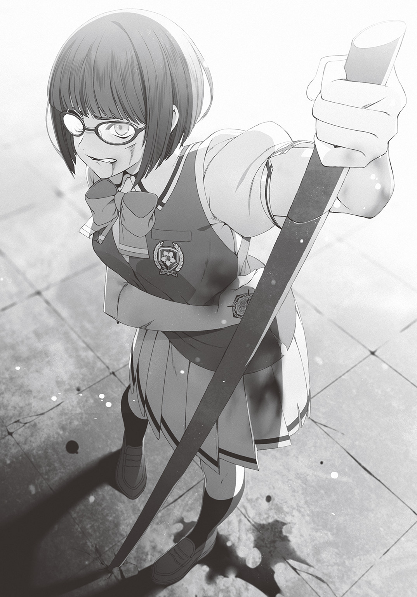
憔悴しきった表情で、杖がわりにした木刀に体重を預けた麻梨果が、足を震わせている。
乱れた呼吸が彼女の苦痛を物語っていた。
「あ、あのあの......ごめんなさい。痛い......ですよね？ 本当にごめんなさい」
麻梨果の正面。
みすぼらしい服を着た村娘風の少女――カゲロウが申し訳なさそうに謝罪の言葉を口にする。しかしその手には三日月形の刃がついた鎖鎌を握っており、ブウン、ブウン、と空気を裂く音を立てながら振り回していた。
「ごめんなさい......本当にごめんなさい」
びゅっ！ カゲロウの手から鎖鎌が放たれる。
しゅるり――と、蛇行する刃が麻梨果のふとももを軽くえぐった。
「っ......ぁ......」
血が飛び、麻梨果の口から、苦悶の声が漏れる。
「ごめんなさい。ごめんなさい」
再び、攻撃。
「あっ......ぐぅ......」
「でもここで私が活躍すれば、里のみんなの扱いも良くなるはずなんです。だから、どうしても勝たなくちゃいけないんです。ごめんなさい......本当にごめんなさい......」
「ああっ」
鎖鎌の刃が脇腹に深く突き刺さり、麻梨果はひときわ大きな声を上げた。
崩れ落ちるように膝をつく。
ごめんなさいごめんなさいと連呼しながら攻撃するカゲロウ。
一方的に攻撃されながら、反撃する様子を見せず、ただ為すがままになっている麻梨果。
何故、この異様な光景が展開されているのか――
「おかしい......何故、武田さんは反撃しないの」
応援席にて。
眼下の凄惨な光景を見守っていた栞里は、唇を嚙んで疑問を口にした。
無理もない。
麻梨果だけは相手が誰でも勝てると思っていたんだ。栞里も、僕も。
「それとも敵が何らかのスキルで武田さんの動きを止めているのかしら」
「わからない。そもそもあのカゲロウって女性は何者なんだ？ 《キャッスル》の上位五人の中には含まれていないはずなんだけど」
「ええ。《ＺＯＯ》を襲撃したメンバーにも含まれていなかったわ」
「カゲロウ......か。カゲロウ......」
僕は名前をつぶやきながら記憶を探る。たしかに覚えはあるのだ。ただ存在感がなさすぎて、ハッキリと思い出せないだけで。
鎖鎌を使い、おどおどとした態度で、村娘風の恰好をしている少女。
あきらかに《キャッスル》の正規の英雄ではない。正式に《キャッスル》に雇われた者は、騎士のような装備をまとう傾向にある。
現代日本から召喚されたばかりの大室でさえ、それは例外ではないのだ。
「正規の英雄じゃないとしたら本当に適当な集落から連れてきた村娘なのかしら。《キャッスル》の領内には普通の人間の集落もたくさんあるし......。けれど、だとすれば、武器の扱い方に慣れすぎてる気もするのよね」
「武器の扱いに慣れてる村人......か。......あっ」
脳裏にピンとくるものがあった。
そうだ。思い出したぞ。カゲロウ。彼女の正体は――
「――忍者だ！」
「忍者......？」
僕の言葉に栞里が怪訝そうな顔をする。
「そう、忍者」
「この世界に忍者なんて存在するの？」
「うん。祖父さんは『忍びは忍んでいるべきなので伝承にも当然登場しない』とかこだわってたから、本編には一切出てないけど」
「本当に根っからの設定厨ね......。作家の鑑」
「《キャッスル》は華々しい力と力のぶつかり合いこそが美しいという価値観の国家。忍者は属性としては英雄に分類されるものの、《キャッスル》の価値観に合わない存在なんだ。情報収集に忍者を利用することはあっても、《アンティゲーム》に参加させることはない」
「なるほど。《ＺＯＯ》に送り込んだ密偵なんかは《キャッスル》の忍者なのね」
「うん。だけどまさか《アンティゲーム》に出てくるなんて」
「そんなにありえないことなの？」
「ありえないね。忍者は非力で一対一の戦いには向かない。《キャッスル》内でも忍者は一族ごと臆病者だと呼ばれて冷遇され、離れ里での貧しい生活を強いられてる。差別的に扱われてる忍者が、名誉ある《アンティゲーム》に呼ばれるわけがないんだ」
「勝てる目算があったのだとしたら？」
「たしかにゲオルギオスは、勝利のために全力を注ぐ英雄だ。けれど、作中でも裏設定でも、忍者をゲームに参加させる価値観なんて、英雄にはないはず――」
「作戦の立案者が《キャッスル》の価値観に染まっていない者だとしたら？」
「......あっ！」
僕は思わず声を上げた。
そうか。そういうことか。
その可能性に至った僕が、《キャッスル》側の応援席に目を向ける。
――と。その視線に気づいた大室がいやらしい笑みを浮かべた。
やっぱりか。
「――大室が、立案したんだ」
「ええ。そう考えるのが妥当ね」
「《キャッスル》で冷遇されてる忍びの一族から、なるべく気弱な子を起用したのか......。武田さんとぶつけるために」
密偵からの情報でこちらのオーダーは筒抜けだった。
だからわざわざ副将にカゲロウを起用したのは、偶然などではないはずなのだ。
――麻梨果とぶつけてきた。明確な意図をもって。
「でも、どうして武田さんとぶつけてきたのかしら。それにカゲロウの正体が忍者であることと、武田さんが動かないことはなんの関係があるの？」
「優しさにつけこまれたんだ」
「優しさ？」
きょとんとする栞里。
僕は麻梨果とふたりきりで話したことを思い出しながら語る。
「武田さんは強者が弱者を一方的に攻撃したり、嘲笑うことに怒っていた。《ＺＯＯ》が襲撃されたときも、モンスターたちを守るために、たったひとりで《キャッスル》の英雄部隊と戦った――冷たくて、つんと澄ましているようでいて、あの子は誰よりも優しい子なんだ」
「なっ......。まさか武田さん、それで怯えた様子の村娘を攻撃できなかったというの!?」
栞里が声を荒らげる。
「だからって相手は鎖鎌で何度も武田さんを傷つけてるのよ。私たち仲間の勝利も懸かってる。なのに初対面の敵に同情して、反撃しないなんて......」
「いや、今、武田さんが動けないのは別の理由だ」
「どういうことかしら？」
「カゲロウの忍術スキルに《影踏み》というスキルがあるんだ。彼女が影を踏んだ相手は歩けなくなる。たぶん最初に武田さんが攻撃を躊躇したときに、影を踏まれたんだと思う。だから今は反撃に転じたくてもできないんじゃないかな」
「あのカゲロウという女......したたかな真似をしてくれるじゃない」
「いや、彼女もやりたくてやってるわけじゃないよ」
「そうなの？」
「千載一遇のチャンスなんだ。長年、不遇な扱いを受けてきた里の忍者たちが《キャッスル》の一員として認められ、成り上がるためのね。怒りをぶつけるべきは、むしろ――」
「――大室......斗真......！」
そう。心優しき剣士である麻梨果の心の甘さを利用した、卑劣な戦略を考案したのは、あの大室だ。
まったく。本当にタチの悪い男だ。
頭、悪いくせに。
いじめ以外に生きがいのないゴミクズのくせに。
人が嫌がることに対する嗅覚だけはやたらと優れている。
「はぁっ......はぁっ......う......ぐ......」
「ど、どうして......どうしてまだ負けを認めないんですか。お願いです。これ以上、傷つけさせないでください。影踏みが発動したら私はもう負けません......。なので、あきらめて、降参を......」
息も絶え絶えの麻梨果に、何度も鎖鎌を投げながら、カゲロウは声を震わせてそう迫る。
しかし麻梨果は強く首を振った。横に。
「それだけは......できません」
「どうしてですかっ。もう勝負は決まりましたっ。だからっ」
「あなたの境遇に......惑わされて......隙をつかれたのは、わたしの失敗......でした。でも......うぐっ......降参は、できません......。そんなことしたら......柏木先輩や、他のみなさんを......裏切ることに......なります」
「でもっ......力の弱い私では《闘気鋼殻》で守られたあなたを一撃で仕留められません。こんな風に、痛ぶるような形になってしまいます。これ以上は......私が耐えられないです......」
「......では、そちらが降参してください。わたしからの降参は、ありえません」
「そんな......」
カゲロウは声を震わせる。しかしすぐに首を振った。
「で......できません。わ、わた、私もっ、里のみんなのために、負けるわけにはいかないんですっ」
決意を固めたように目を細めると、カゲロウはふたたび鎖鎌を放とうとした。
そのとき。
「おいお～い、ちんたらやってていいのかよ、カゲロウちゃん」
野次めいた声は《キャッスル》の応援席から飛んだ。
カゲロウの表情が凍りつく。怯えた表情で応援席を振り返った。
「トウマ......様......」
「せっかく俺がゲオルの兄貴に頼んでチャンスをやったんだぜ？ その甘っちょれえ眼鏡女をひと思いにブッ殺しちまえよ！ ――あ、このゲームじゃべつに死なねえんだっけか？ どっちでもいいや。オラ、さっさとやれ。じゃねえと俺が里の雑魚忍者どもを全員ブッ殺しちまうぞ？ ......くくっ」
「ひっ......!? や、やります！ 言われたとおりに......全部、やりますから......！」
カゲロウは鎖鎌を強く握り直し、麻梨果の方を向いた。
大室は、ニヤニヤと不快な笑みを浮かべる。
「いや～、カゲロウちゃんは従順でいいぜ～。里の中で一番言うこと聞きそうな子を選んでよかったよかった」
コイツ......!!
大室とカゲロウのやりとりを見ていた僕は怒りで頭が煮えるかと思った。
喜んでいやがる。
怯えた様子のカゲロウに攻撃することをためらってしまった心優しい麻梨果。
そして忍者としての訓練を積みながらも、人を傷つけることに慣れていないカゲロウ。
ふたりの様子を高みから眺めて、大室は喜んでいる。
――クソ。クソッ......クソったれ！
世界が変わっても人は変わらない。クズはクズのまま。人が嫌がる姿を楽しく眺めていられる悪魔みたいな人間のままだ。
そんな人間だっていうのに、英雄の紋章が与えられるなんて。
この世界は皮肉だらけだ。
「ごめん......なさい......ッ」
またも、鎖鎌が放たれた。
「......ッ」
受ける痛みに備えて麻梨果が目をつむる。
与える痛みに耐えかねてカゲロウが目をつむる。
しゃらりしゃらりと鎖のこすれる音とともに、三日月の刃が麻梨果に迫る。
ガシャン！
鎖の止まる音。そしてそれと被せるように、肉の裂ける、不快な音。
血しぶき。
勢いよく噴き出した新鮮な血が鎖をよごし、床をよごし、僕の頰をよごした。
「え......？」
カゲロウが目を見開いた。
「先......輩......？」
僕の背後から、麻梨果の弱々しい声がした。
......痛いな。
耐性があるから死にはしないけれど。さすがに手に鎌が突き刺さるのは、かなり痛い。
「ど、どうして先輩が......？ 副将戦は、わたしの......」
「もういいよ。無理しちゃダメだ、武田さん」
「先輩......でも......」
「相手の境遇に同情した時点で武田さんに勝ち目はなかったんだ。勝つ気もなかった。攻撃を受けるがままになっていたのは、私情で《ＺＯＯ》に黒星をつけてしまう自分への罰のつもりだったんだよね？」
僕が言うと麻梨果は大きく目を見開いて、それから拗ねたように唇をとがらせた。
「......先輩は、どうしてそういうの、全部わかっちゃうんですか」
「なんとなく気持ちがわかるんだ。武田さん、優しいし」
「先輩......」
麻梨果は弱々しく言葉を発すると、緊張の糸がほどけたのか、ふいに意識を手放してその場に倒れ込んだ。
僕はそれを見届けると、カゲロウの方に目をやる。
「カゲロウさんも、もう無理はしなくていい。無抵抗の人を一方的に傷つけることに耐えられる人間じゃないはずだ」
「......どうして、私のことを、そんな風に......？」
初対面の人間に言い切られて、戸惑っているのかもしれない。
それはそうか。裏設定を完全に思い出した僕には、カゲロウの性格が戦闘向きでないことはあきらかなんだけど。カゲロウからしたらワケがわからないだろうな。
「あ、あのぉ......もしもし、《ＺＯＯ》のお方？ 試合中の乱入は失格ですよ～？ 麻梨果ちゃん失格ですよ～？」
ハピがおずおずと声をかけてきた。
僕はうなずく。
「うん。それでいいよ。副将戦は《キャッスル》の勝利だ」
そして、《キャッスル》の応援席を見上げる。
ニヤニヤ笑う大室をまっすぐににらみつける。
もしも今、ポケットにナイフがあったなら、僕は大室を殺していた。
よかった......と思う。
この世界であれば。
僕が大室を倒すのにナイフなんて必要ない。
「来いよ、大室。支配者のつもりであぐらをかいてるお前を、その高い場所から突き落としてやる」
†
瞬間、高速回転する巨大な戦斧が飛来して、ステージに突き刺さった。鼓膜を引き裂くようなバキバキという破砕音が鳴り響き、舞い上がった砂煙が視界を埋め尽くした。きゃ！ と、カゲロウの悲鳴と、直後に倒れ込む音が聞こえる。
砂煙の向こうから人影が近づいてきた。
「ミナト。オマエ、知らねえ間にずいぶん生意気な口を利くようになったじゃん。異世界に召喚されて、気が大きくなったのかよ？ くくっ」
相手は当然――大室斗真だ。
戦斧の切っ先をこちらへ向けて、大室は鼻で笑う。
「女の子を守ってヒーロー気取りかぁ？ 現実世界じゃあ俺に手も足も出せないで、ビビりまくってたくせによぉ」
「女の子......か。ところで大室、僕はずっとお前に聞きたかったんだけどさ」
「あン？」
「――付き合ってたカノジョはどうしたの？ ポニーテールの。あの日、僕を旧校舎に連れてったときに一緒にいた子」
「......ッ」
僕の素朴な疑問は、大室の表情を凍りつかせた。
......ああ。やっぱりそうなんだな。
「こっちの世界で最初に大室を見たとき、あのポニーテールや取り巻きの連中が見当たらないなと思っていたんだ。どこへ行っちゃったのかなってね」
「う、うるせえ。オマエに関係ねえだろうが。あァ!?」
「大室。お前――見捨てたな？」
「......ッッ!?」
「この世界に召喚されたばかりの頃。モンスターに襲われて、恋人と友達を見捨てて逃げたんだな？」
「う......うるせえ、うるせえ、うるせえよ!! だからどうしたってんだ。自分が生き残るために必死になって何が悪い!? エラソーなこと言いやがって、オマエだって俺と同じ立場だったら、同じことをしただろうが!!」
ツバを吐きながらまくし立てる大室。
その言葉に対して《ＺＯＯ》の応援席から真っ先に反論の声が上がる。
「ミナトをアナタみたいな最低男と一緒にしないでくだサイ!!」
エマ先輩だった。
応援席の欄干に上半身を乗り出して、まるで演説するような身振りで声を張る。
「ミナトはまだ名前も知らなかったワタシをモンスターから助けてくれマシタ！ 彼は誰かが困っていたら助けずにはいられない優しい人デス。恋人やフレンドが相手なら、なおさら......絶対に見捨てたりしません！」
「エマ先輩......」
あれは僕としてはシルバーファングの裏設定を知っていたからこそできたことなんだけど。
エマ先輩の中にそのときの記憶が残っていて、現在の僕との信頼につながっているのだとしたら、僕は馬鹿らしくもヒーローを演じたあのときの僕を後悔せずにいられる。
エマ先輩は言葉を続けた。
「命の恩人のミナトを――ワタシの大好きでマキシマム愛してるココロもカラダも全部捧げたい人を――侮辱するのは許しませんヨ!!」
ざわわっ。闘技場全体が湧いた。
え、エマ先輩......。ラブコールは素直にうれしいけれど。
ちょっとそれは恥ずかしいな。
だけどエマ先輩の表情は冗談さの欠片もなく真剣そのもので。僕は茶化すようなツッコミを入れる気にもなれなかった。
それにこの言葉は大室には効果てきめんだったようで。
「黙れよ、クソビッチ!! 雑魚モンスターから救われたぐらいで何だよ。コイツはスライムの紋章持ちなんだろ？ 鎖鎌を受け止めても無事だったし、物理攻撃耐性はもう習得してるんだろうが。だったらモンスターなんか怖くねえ。コイツにとってリスクでもなんでもなかったってことだ！」
「それを言ったら大室も英雄――徐晃の紋章持ちじゃないのか？」
「あのときはまだ召喚されたばっかりで......紋章の力に気づいてなかったんだよ。俺は悪くねえ。ちんたらしてたアイツラが悪いんだ！」
「大室、お前は、言い訳ばっかりだな」
「!!」
大室が、ぐっ、と喉を詰まらせる。
僕は軽蔑の眼差しを向けた。
「まるで弱い人間みたいだ」
「俺が......弱い......だと......？」
「後ろで自分を守ってくれる存在がいないと怖くて何もできないんじゃないかな？ 現実世界なら、金持ちの両親、この世界なら紋章の恩恵と《キャッスル》の後ろ盾。それがあるから、安心してやりたい放題の人生を送ってる」
「ぐ......黙れ!! 親も紋章も俺のモノだ。俺が生まれ持っていた財産だ。それを利用することの何が悪い!!」
「いや、悪くないと思うよ。人は配られたカードをいかに使って生きるかが大事だと思う。だからべつに大室は何も悪くない。たださ――」
僕はありったけの嘲笑を浮かべる。
あまりそういう悪役めいた表情は得意ではなかったが、麻梨果やカゲロウが受けた苦痛を考えたら、大室を精神的に追い詰めてやるのも一興だと思えたのだ。
だから僕は告げる。
大室にとって、きっと屈辱的であろう言葉を。
「ただ――カッコ悪いよね、そういう生き方」
大室の表情が凍りついた。
怒りが滲み出るような憎悪の瞳を僕に向ける。
「オマエ......誰に向かって口を利いてんだ？ 調子に乗るんじゃねえぞ、ミナト」
「懐かしいね、その顔。大室はよく友達の男子が逆らったときもそんな風に威圧してた」
「友達？ アイツラが？」
大室は鼻で笑った。
「俺は俺の思い通りにならない奴はいらねえんだ。俺が主役でアイツラは脇役。だから一人前に意見してくる奴なんざ必要ねえ」
「恋人も？」
「ハッ、女なんざ一番替えが利くだろ。顔がかわいくて頭がゆるくて身体がエロけりゃ誰でもいい。いくらでも転がってる。そこで腰抜かしてるカゲロウちゃんだってよぉ、契約通りに副将戦に勝って、忍びの里の評価を上げることができたら、お礼にヤらせてくれることになってんだよ。チョロいもんだろ？ ハハッ、そうだ。俺は弱いから逃げたんじゃねえ。アイツみてえな、どこにでも転がってる女なんかいらねえから捨てただけだ」
下卑た笑みを浮かべて語る大室。
応援席の方から、栞里や遊子やエマ先輩の、「最低」「なにあの男マジむかつく」「最低デス！」という声が聞こえてくる。うん。僕も同じ気持ちだ。
僕はつぶやく。
「そうか......でも、よかった」
「あン？ 何がだ？」
「大室が僕の偏見でも勘違いでも何でもなく、本当にただのゴミクズだと知れてよかったよ。これで何も遠慮せずにお前をぶち倒せる」
僕は手袋に覆われた拳を強く握りしめた。すっと両腕を動かして格闘の構えを取る。
「ふん。現実でも俺に勝てなかった雑魚が、素手で今の俺に勝てるかよ」
大室も、嘲笑しつつ、戦斧を構える。
気絶した麻梨果と腰を抜かしたカゲロウがステージの外で運ばれるのを待った後、審判役のハピは、睨み合う両者の顔を交互に見てから、高らかに宣言した。
「それでは充分に高まったところでぇ――大将戦、スッタァ――ット!!」
開始の合図と同時に動き出したのは、大室だった。
強烈な踏み込みからの疾駆。甲冑をまといし巨体が砂塵と暴風を伴い瞬時に距離を詰める。横薙ぎに、戦斧。間は一瞬。そして痛覚。
「がっ......」
側頭部に、衝撃。
脳が揺れる感覚の直後に、浮遊感。
次に思考が正常に働いたとき、僕の頰は床の冷たさを感じていた。最初の位置から十メートルは移動している。
殴られた？
殴り飛ばされて、床に倒れている？
「......クソ」
僕はゆらりと立ち上がった。痛みは一瞬で、傷も残っていない。物理耐性のおかげだ。
けれど攻撃が当たる瞬間は、衝撃が走るらしい。どうせなら完全に痛覚も遮断してくれればいいのに。面倒な話だ。
「おいおいどうしたミナトぉ？ あんなにカッコ良く大見得切ったわりには情けねえなァ？ 俺の速さに目が追いついてないじゃねえか」
うん。たしかに英雄の動きはナマで相対すると想像以上に速く見える。対応するのは大変そうだ。
しかし僕は不敵に笑う。
「大室こそ、自慢の一撃で僕に傷ひとつ残せてないけどね」
「ああそうか。スライムのお前には物理耐性があるんだったな。鑑定士のおっさんにゃあ具体的にどんな耐性があるかまではわかんねえらしいが、まあ一般的なスライムの紋章持ちは物理耐性が基本――つってたかな。ミナトはいくつ耐性を習得したんだ？」
「さあね」
僕ははぐらかした。情報をくれてやる気はない。
大室がククと肩を揺らして笑う。
「まあいくつ耐性があっても関係ねーけどな。どうせ勝つのは俺だ」
「おしゃべりが多いね。攻撃のネタでも尽きたのかな」
「うるせえよ」
ふたたび大室が戦斧を振った。戦斧は僕の腹にめり込んだ。僕は血を吐いて、その場にうずくまる。
「ぐ......ぁ......」
「ミナトぉ。勘違いしているようだから教えてやるよ」
「な......に......をだ......？」
「俺はいつでも一撃でオマエを倒せる。わざわざこうして斧で痛ぶってやってるのは、趣味だ。底辺の雑魚が苦痛に泣き叫ぶ声は最高だからなァ――く、ククッ。あの野生の雑魚スライムみてえに、ぴぎぴぎ良い声で鳴いてくれよ、ミナトォ！」
「がはッ......!!」
僕の腹に蹴りが入った。仰向けに転がされる。
さらに、ずんっ！ ――と、戦斧の先が上から腹に向けて振り下ろされた。
「ぐっ、ああああっ!?」
「そうそうそうそうその声！ その声だミナトォ!! クククッ。その声をもっと聴かせてくれよ。泣きながら土下座すりゃあ、さっきまでの態度は許してやるぜ？」
「ううっ......あ......が......っ」
戦斧の先がぐりぐりと腹に押しつけられる。内臓をかき回されるようだ。
体内で生じた不快な痛みがじわじわと全身に広がっていく。
胃の底から何かが込み上げてくる。
クソ......。一瞬の痛覚でも、何度も繰り返し与えられると、かなり苦しい。
「ふ......クク。はははは!! 痛いか？ 痛いよなァ。オマエの耐性は無敵でもなんでもねえ。ただそれで死なねえだけだ。その程度の紋章の恩恵で、俺の下から逃げられると思ってたんなら、甘ェ甘ェ。激甘だァ!!」
楽しげに。愉しげに。何度も何度も何度も、大室は戦斧を振り下ろす。
激痛。脳が痺れる。口から血の塊がこぼれる。全身の骨が折れる音がする。
――それでも僕は笑みを浮かべた。
最上級の嘲笑を口元に乗せた。
「効か......ないね......。こんな攻撃じゃ......僕は倒せない」
「......チッ」
そんな僕に、大室は舌打ちした。
つまらなそうに、僕を見下す。
「悲鳴だけ上げてりゃいいものを。反抗的な目ぇしやがって」
「その程度の攻撃で、悲鳴なんて出ないよ」
「強がりを」
「ハハ。強がれる程度の余裕があるってことなんだけど？」
「生意気な口は一度でも反撃してから叩いてみせろよ。現実世界でも、この世界でも、オマエは俺に踏みつぶされるだけのゴミクズだ。最底辺の情けねえチキン野郎だ。今も痛みに泣きそうなんだろ？ 泣いちまえよ。旧校舎でみっともない顔をしてみせた時のように！ それとも泣く体力も残ってねえか？ まあそうだよな。手も足も出ねえで、全身ボロボロで、ピクリとも動けねえもんなァ!?」
大室は僕を大声で嘲った。
観客席がどよめく。《キャッスル》側の観客だ。彼らは高い観客席から僕を見下していた。攻撃もせず、反撃もできず、地面に這いつくばって大室の好きにされている僕を、情けない男だと馬鹿にしていた。
それだけならアウェイの舞台でよくあることだ。
しかし《ＺＯＯ》の観客席からも落胆の声が漏れている。応援に来ていた理性ある魔物の一部が、「やはり英雄には勝てないのか」と、諦念の表情を浮かべている。
......まいったな。《ＺＯＯ》側にそんな顔をされると困る。
僕たちがどうして戦っているのか、わからなくなるじゃないか。
かつて大室のイジメから助けたクラスメイトの顔が脳裏を過ぎる。
大室の標的が僕に変わった後、大室と一緒になって、教室で僕に危害を加えるようになった、あの生徒のことを思い出す。
......いや彼とは違う。《ＺＯＯ》の魔物たちは僕に危害を加えたわけじゃない。裏切ったわけじゃない。だから違う。
ただ、最後まで信じることをやめただけだ。僕に希望を託すことをやめただけだ。
敗色濃厚。
会場の空気は、一色に染まっていた。
――否。
その中にただ一点、あまりにも綺麗な、輝く黒。
「黙りなさい、愚民ども」
応援席の方から。
会場全体の雰囲気を塗り替えるような、冷たく鋭く――そして大きな声がした。
栞里だった。
彼女は応援席、欄干のすぐそばに腕組みをしながら立ち、闘技場内にいるすべての存在を見下すように言葉を放った。
「目に見えている事象からしか有利不利を判断できない残念な脳味噌の持ち主は、目を閉じ耳をふさいで結果が出る瞬間だけを待っていればいいわ。どうせ筋肉だけが自慢のゴリラに等しい英雄さんと、単細胞な魔物ごときに、高度な戦闘の流れなんて理解できないでしょうし」
「「「ん......ンだとゴルアァァ!?」」」
すると、《キャッスル》の観客席のみならず、《ＺＯＯ》の観客席からも、ブーイングの嵐が巻き起こった。
――すごい。
栞里、一瞬で会場のヘイトを自分に集めた。
そして、それはたぶん、わざとだ。
その証拠に栞里は、他の観客の怒声などどこ吹く風で、ただまっすぐに僕の顔だけを見て、こう言った。
「柏木くん。わかったでしょう？ 衆愚の意思なんて、強烈な出来事ひとつで塗り替わる。あなたみたいな賢い人間が、こんなふらふらした存在の声にいちいち耳を傾ける必要はないわ」
「彩東......さん......」
「あなたに誰がいつどこでどんな仕打ちをしようと、私はあなたへの評価を変えたりしない。私の《神眼》はあなたの強さを見抜いてる。この世界に来てからだけじゃない。あなたが現実世界でどれだけ強かったかも私は知っている」
会場全体に轟くほどの鋭い声で、栞里は声を張り上げた。胸に手を当て、痛切に、哀切に、訴えるように。
「絶対に変わらない私という存在を信じて。柏木くんは柏木くんの信じるままに、そいつをぶち倒しなさい!!」
その、栞里にしては珍しい大声に。
いきなりの声援にぎょっとしつつも、栞里に続けて応援の声を上げてくれた遊子とエマ先輩に。
そして、きっと気絶していなければ、彼女たちと同じように声援を送り続けてくれたであろう麻梨果に。
心が、満たされる。
僕は足腰に力を込めた。しっかりと地面を踏みしめて、立つ。
「..............................ありがとう。彩東さん。みんな」
この世界で得た仲間に感謝をつぶやき、僕は大室をにらみつける。
大室は不機嫌そうな顔で。
「――もういいや。オマエ、つまんね」
冷めた声を出した。
「ったく。いつ〝図書室の聖女〟と仲良くなったか知らねえが、ずいぶん好感度を上げたもんだなァ。でもよォ、オマエらが余裕でいられるのは物理耐性のおかげじゃねえのか？」
握り締めた戦斧を頭上にかかげる。
次の瞬間――
「来い!! 天雷の力!!」
バリバリバリィ!! と、金属を強引に引き裂くような強烈な音とともに戦斧が青白い電撃をまとった。
「雷撃......ッ!?」
「驚いたか、ミナトォ？ 英雄だって物理攻撃だけじゃねえんだ。俺ぐらいになると、属性攻撃の魔技も使えるんだな、これが」
「大室が......魔技を......」
「ククク。物理耐性が無駄になっちまったな、ミナト？ 真っ黒な消し炭にしてやるよ。楽しみだぜ。エラソーに説教してくれたオマエら全員の顔が、絶望に染まる様を見るのがなァ!!」
青白い雷光が走る。
轟音が鳴る。
バチバチバチと空気が爆ぜ散る。
「一撃で決めてやる――魔技！ 《戦斧天雷》！」
カッ！ と視界が光に塗りつぶされた。
戦斧を中心にいたずらに暴れていた電撃が一ヵ所に束ねられ、一本の太い柱のような形になる。紫電を発する柱が僕の頭上に落ちてきた。
瞬きする暇もなかった。僕の身体は電撃の塊に押し潰されるように呑み込まれ、
「ぐああああああああ――――ッ!!」
引き裂かれんばかりの痛みが、全身を駆け巡る――
「ククク......あはははははは!! これで戦闘不能!! 俺の勝ちだァ!! あはは――」
大室が勝利を確信して哄笑する。
その声を。
僕の耳はしっかりと聞くことができていた。
「―――――――で？ 大室の最強の攻撃とやらは、それで終わりかな？」
「あははは、は......は？」
大室の笑いが止まる。
雷撃が発生させた光の奔流が収まり、その中に立ち尽くしていた僕の姿を見て、大室は愕然と目を見開いた。
「お、俺はたしかに雷属性の魔技を直撃させたはずだ。物理耐性しかねえオマエが本物の雷に匹敵する高電圧を受けて無事でいられるはずがねえ......っていうのに」
まるで亡霊を見たように。大室は呆然とつぶやいた。
「――どうして......無傷なんだ......？」
†
「み......ミナト、大丈夫なわけ？」
応援席にて。遊子が心配げな声を漏らした。
「《アンティゲーム》の最中は死なないとはいえ、どうして立っていられるの......？」
「う、うう......大丈夫なんでしょうカ。ミナト......無理をしていませんカ？」
アッシュクラフトさんもすっかり涙目を見せている。
そんな中、私――彩東栞里は、
「............ッ」
喉元まで出かけた悲鳴をぐっと堪えていた。
大丈夫。大丈夫。柏木くんは負けたりしない。絶対に。だからここで悲鳴を上げたらダメだ。つらそうな顔をしたらダメだ。
何故なら。そんな表情を見せるのは、柏木くんの勝利を疑っていることになるから。
本音を言えば、つらい。柏木くんがあんなに痛そうな攻撃を受けている事実が、たまらなく、つらい。
けれど私は表情を変えない。いつものように。性格の悪い腹黒女のように。いたって冷静なフリをして、こう告げる。
「大丈夫よ。柏木くんには、あんな攻撃、全然効いてないから」
「え？ どゆこと？」
「ＯＨ......ミナトの耐性は物理耐性だけじゃないのデスカ？」
「ええ」
私はうなずいた。ここまで来たら遊子やアッシュクラフトさんに隠すことはできない。
「《神眼》でみんなのステータスを確認した日――私は一個だけウソをついたの」
「ウソをついた？ しおりんが？」
「ええ。柏木くんが習得していた耐性は、物理耐性だけじゃなかった」
「えっ？」
「物理耐性、隷従耐性、炎耐性、水耐性、土耐性、電撃耐性――ありとあらゆる耐性が、すでに備わっていたのよ」
柏木くんの鑑定結果が出た瞬間に、私は直感した。
彼のスキル《学習》は召喚される前の経験にも作用している――と。
出会ったときの彼の姿。あれは確実に何者かに悪意を持ってロッカーに閉じ込められていた。
きっとその相手に何度もヒドいことをされたに違いない。
殴られ、命令され、焼かれ、沈められ、埋められ、電流を浴びせられた。そんな人生を彼が送ってきたことが、《神眼》の力でわかってしまった。
私はすぐに決めた。けっして、柏木くんを盾に使ってはいけないと。
だから私はみんなにウソをついた。すでにバレている物理耐性以外は、ないものとして扱った。
けれど今は事情が違う。
柏木くんを貶めた存在を倒す絶好の機会。逆転のチャンス。
盾になるためじゃない。
理不尽な苦痛を受けるためじゃない。
最強の剣となり、柏木くんが憎い敵を倒すために、耐性もスキルもフルに活用するのだ。
同情じゃない。
あらゆる苦痛を受けながらも、自分以外の誰かに矛先が向かわないように、ひたすらに耐えてきた強い存在に対する敬意だ。
私は柏木くんを尊敬している。これまでに出会った異性の中で――いえ、同性を含めても。彼ほど好感を覚えた人間は他にいない。
恋だとか好きだとかそんなありがちな言葉では表現したくなかった。彼ならばきっと、私が現実世界で抱いていた、世の理不尽とか、くだらない矛盾とか、そういういろいろなことに共感してくれる。味方でいてくれる。そう思えた。
そして私自身も、彼の味方でありたいと思えた。
本が好き――という共通の趣味だけじゃない。生きざまレベルの共感だ。
だから私は声を張り上げた。
ありったけの気持ちを込めて、柏木くんのために、叫んだ。
「――――やれ!! 柏木くん!!」
†
栞里の声が聞こえた瞬間、僕は駆け出した。
怯えきった大室の顔がどんどん近づいてくる。反撃される時が来るなど想像もしていなかったのか、大室の反応は遅れた。
「ま、まだだ!! 雷が効かないなら――《爆炎斬》!!」
炎属性の魔技。
僕の身体は一瞬だけ炎に包まれるが、やはりその身が焦げることはない。
「ひいいっ――だ、だったらこれでどうだ!? 俺が操れる四属性の魔法を全部込めた複合魔技。これならどれか一種類でも耐性を持ってなければ倒せる!!」
大室は戦斧を振りかざし、一歩、僕の方へ踏み込んだ。
「魔技――《雷炎地水四天之刃》!!」
四属性の魔法がかかった戦斧の刃が僕の肩に突き刺さる。
痛い。
けれど、ちょうどいい。
僕は突き刺さった刃を横目でちらりと見て、戦斧の柄をがしりと握りしめた。
捕まえた。
英雄は素早いけれど。これなら逃げられずに済む。
僕は拳を握りしめ、発動する。
スライムの紋章持ちに許された――弱者に許された反撃のスキルを。
「《反射》......いや――」
あの日の栞里の言葉を思い出す。
殴られても、パシらされても、タバコの火を押しつけられても、プールに沈められても、裏山の土に首から下を埋められても、ネットで買ったらしいスタンガンの実験相手にされても、僕は耐えてきた。
それゆえにこの世界から与えられた、あらゆる種類の攻撃に対応できる耐性。そして現実世界で培った、どんな苦痛にも耐える精神力。そして、耐えて、耐えて、蓄積した苦痛を撥ね返す《反射》スキル。
栞里曰く――
すべてを兼ね備えた僕の《反射》はただの《反射》ではない。
「《完全反射》」
これまでに受けて蓄積されたすべてのダメージを拳の威力に上乗せして、大室の顔面に叩き込んだ。
鼻の骨が折れるめきめきという嫌な音が鳴った。
大室の身体は呆気なく吹き飛ばされていき、闘技場の壁を突き破り、会場の外へと消えて行く。
「お前の生き方には口出ししないよ、大室。人を支配して偉くなったつもりで生きればいい。だけど――」
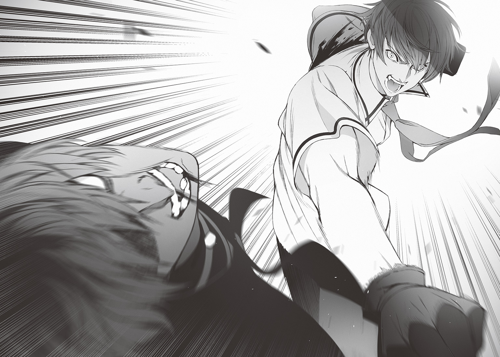
僕は血のついた手袋を軽くはたいた。
「いつの時代も、暴君は底辺に殺される」
「キャ、《キャッスル》大将の大室斗真、リングアウトォォ――!! よってえええええ、勝者は《ＺＯＯ》の大将！ 柏・木・ミ・ナ・トォォォ!!」
ハピの声が闘技場全体に轟いた。
試合終了、か――
僕はホッとしたと同時に、ふっと意識が遠のいて、その場に倒れ込んだ。
エピローグ そして始まる異世界生活
深夜。
草木も眠る時刻。空に浮かぶ三つの月だけが光源の、薄暗い樹海の中で。
大室斗真は目を覚ました。
ズキズキと痛む身体に鞭を打ち、かろうじて身体を起こす。
「俺......何やって......痛ッ」
強烈な痛みが走り、大室は慌てて顔に触れた。
鼻が折れ曲がっている。歯も数本、抜けている。英雄の紋章を手に入れて、防御力を増したはずの肉体がボロボロだった。
「思い出した......ミナトとの《アンティゲーム》で負けたのか、俺は......」
地面を殴りつける。
力が入らない。
最後に食らった《完全反射》のダメージがまだ抜けていない。
どうやらゲームで死ぬことはなくても、ダメージはある程度、残るらしい。
「チ......くしょう......ありえねえ。俺が負けて、ミナトが勝ったってのか？ そんなの間違ってるだろ。あんな冴えねえ顔した平凡な野郎がイイ女連れて、俺より強いとか、マジありえねえ。クソが！」
毒づきながら大室は立ち上がった。だがすぐに下半身の力が抜けて倒れてしまう。生まれたての小鹿のように、足がぷるぷると震えていた。
大室の瞳にふたたび怒りの炎が宿る。
「クソっ、クソっ、クソぉっ！ ミナトの奴、ミナトの奴、ミナトの奴！ この俺に恥をかかせやがって、こんな目に、遭わせやがってぇ！ 殺す！ 次に会ったら絶対に殺す！ あの女どももだ。冴えねえ野郎に媚びてるクソビッチどもも殺す！ ミナトを縛りつけて、アイツの目の前でひとりずつじっくり犯して汚してから殺してやる！」
大室は大声で喚き立てた。すると、その声につられてきたのか。
がさっ......。ふいに草の擦れる音がした。
「ひっ!?」
大室は怯えきった表情で、小さな悲鳴を漏らした。
音の方向を見る。
そこには一匹のスライムがいた。
「な、なんだスライムかよ。驚かせやがって」
大室はホッと胸を撫で下ろす。
「オラ、さっさと消えろよ、雑魚モンスター。ぶっ潰されたくなかったらな」
しっしっ、と、犬を追い払うように手を動かした。
「......ぴぎ？」
しかしスライムは言葉が通じていないようで、うねうねと蠢きながら、大室に近づいた。
「ンだよ。そんなに死にてえのか？ まあちょうどいいや。スライムにはムカついてたところだ。コイツで憂さ晴らしして――あれ？」
大室の手が地面の上をさまよう。戦斧の柄をつかめない。
そこでようやく彼は気づいた。
闘技場から吹き飛ばされたときに、愛用の武器を手放していたことに。今の彼は丸腰なのだ。
スライムが近づいてくる。
「......まあ、べつに雑魚モンスターの一匹や二匹、素手でも問題ねえ」
大室は拳を持ち上げようとして――失敗した。
だらん......と腕が下がる。
「腕、イカれてるのか？ そういやさっきも力が入らなかったな。骨折とか、脱臼......か？ クソ。こんなときに」
だったら逃げるしかないか。そう思い、彼は立ち上がろうとした。
が、足が震えて立ち上がれない。
そうだ。それもさっき失敗したことだった。と、大室は今更ながらに思い出した。
「......あれ？」
そして、彼は気づく。
これはヤバい状況なのではないか、と。
すでに試合は終了している。《アンティゲーム》が終わっている。
死ぬ可能性も、あるのだ。
「どうすりゃいいんだ、俺......」
スライムが近づいてくる。言葉を発しない無機物な生命が足元から這い寄った。溶解液に触れた靴が、じゅうと音を立てて溶ける。
大室は知る由もなかったが、それはスライムの捕食行動だった。
獲物をジェル状の体内に取り込み、そのまま吸収する。
スライムに意思はない。
ただ獲物にできそうな弱り果てた動物がそこにいたから、捕食するだけだ。そこに感情も何もない。
「ま、待てよ、オイ......ゆ、ユウジ！ ユウジはどこだ!? ソーヘイ!! ソーヘイは!?」
大室はかつての取り巻きの名前を叫んだ。
......返事はない。
「ミカ！ ミカ！ 助けてくれよ！ ミカ！ 好きだ！ 愛してる！ だから――」
大室はかつての恋人の名前も叫んだ。
......返事はない。
当然だ。召喚された初日に、大室は友人も恋人も見捨てて逃げ出したのだから。
助けてくれる仲間などここにはいない。
スライムは無感情に大室の肉体を呑み込んでいく。
「い、いやだ......いやだ......。死にたくない。この俺が、こんな場所で......死ぬなんて。間違ってる......。まちが......」
それから十五分ほどの時間を経て。
深夜の樹海に静寂が戻った。
一匹のスライムが満足げに身体をぷるぷる震わせながら茂みの中に入っていく姿を見た者は、誰もいない。
†
《アンティゲーム》が終わった後、僕ら五人は《ＺＯＯ》の集落に招かれて、宴に参加した。長老のララノアから感謝を告げられ、魔物たちからは手のひらを返したように大歓迎を受け、僕たちは正式に《ＺＯＯ》の庇護下で生活していくことが認められた。
守護神である樹海龍を奪還し、《ＺＯＯ》の《キャッスル》に対する抑止力も元に戻った。
その後、大室がどうなったのかは知らない。
ゲオルギオスの元から去って、どこかへ消えたとか、樹海で魔物に襲われて死んだとか、根も葉もないうわさは数多く耳に届いた。
が、正直、どうでもよかった。
大室の安否に興味はない。死んでいたとしても、何も感じないかと言えばウソになるけれど、悲しみはない。
――と、そんな出来事を経て。
僕たちは学校の校舎で暮らしていた。
校舎で生活と言うと宿泊学習や部活動の合宿を思い浮かべる人が多いかもしれないが、そうではない。ごく一般的な意味での〝日常生活〟を営んでいるのだ。
校舎と外を仕切る高い柵の向こうは、深い緑色の木々が密集している。狂暴なモンスターのうなり声やドラゴン――《ＺＯＯ》の守護神、樹海龍の咆哮、奇妙な鳴き方の鳥の声が聞こえる。植物の放つ強い匂いや土っぽいケモノのニオイもする。
たぶん八月の頭くらい。正午過ぎ。
僕は〝パーティーメンバー〟の様子を眺めながら、校舎内の廊下を歩いて――
図書室で待つ栞里のもとへ向かった。
そして、『作戦会議』という名の『クレストサーガ』にまつわる話をした後、僕と栞里は、秘密の時間を過ごす。
「ねえ。柏木くん」
栞里はわざわざ僕の隣に腰かけて、身体を寄せてきた。椅子はこんなにたくさんあるのに。
僕は顔の熱さを自覚しつつ、平気なフリで応じる。
「なに？」
「もしもこの世界から帰れなかったら――」
「帰るための作戦会議をしたばかりなのに、もう後ろ向きな話をするの？」
「もしもの話よ」
「ふうん」
「元の世界に帰れなかったら――私の読みたい本は、あなたが作るしかないのだけれど。柏木くん、そこのところはわかってる？」
「え。確定事項？」
「もちろん。私とあなたは一蓮托生。共犯。共依存。呼び方はなんでもいいけれど、そういう特別な関係だもの」
「......えーっと、それ、この前、彩東さんがいきなり言い出したことだよね。僕、オーケーした記憶ないんだけど」
「オーケーとかノーとか、そんな恋人みたいなありきたりの関係とは違うもの。許可は必要ないわ」
「その一方的な感じだと、〝関係〟って呼ばないんじゃない？」
「もう。柏木くんは嫌なの？」
栞里が唇をとがらせる。普段、冷静な表情の多い栞里だけれど、最近はこういう子どもっぽい表情を見せることが増えたと思う。
僕は頰を搔いて答えた。
「嫌じゃないけど......やっぱり作品を読ませるのは、恥ずかしいな」
「まだ自信が持てない？」
「そりゃまあ......世に溢れる面白い作品に勝てる気は、しないなぁ」
「柏木くんは相変わらずなのね」
呆れたような言葉をこぼすと、栞里は僕の手に手を重ねた。
彼女からもらった手袋越しに彼女の手の温度を感じる。
「私は柏木くんの人間性がとても好き。だから柏木くんの価値観、人生、人となりが詰まった作品だったら、絶対に好きになるわ」
「......ええと。それ、告白......？」
「違うわ。言ったはずよ。私は、もっと唯一無二の関係になりたいって」
「ねえ、彩東さん」
「なあに？」
栞里は小首をかしげた。うん。素朴な表情で首をかしげる栞里は本当にかわいい。
最近、冷たいところがすこし減って、ますますかわいくなってる気がする。
気のせいかもしれないけど。
「彩東さんは僕に共感してくれて、気遣ってくれて、味方でいてくれると言ったけど」
「ええ。言ったわね」
「彩東さん自身は、自分のこと、あんまり語らないよね」
「............」
「前に彩東さんは、読書専門で、自分は物語を書かないみたいだけど。それってもしかして、彩東栞里――っていう人間の本質を他人に読み解かれるのが嫌だから、とか？」
「妄想がたくましいのね」
「よく言われる」
「そしていやらしいほど、鋭い」
「それもよく言われる」
僕はうなずいて、しばらくじっと栞里の返事を待った。
栞里は僕の手の上に置いた手を微かに震わせながら、胸の中で何かを咀嚼するような表情で黙っている。
時計の針の音が気が遠くなるほどの回数、刻まれた後、栞里の唇が動いた。
「まだ自信が持てないわ」
「僕と同じ理由だね。踏み込んではいけない領域だった？」
「いいえ。柏木くんなら、いつかは――話したい」
「でも今はダメ、と？」
「ええ。今は......まだ」
栞里は小さな声でそうつぶやいた。
僕はすこし寂しくもあったけれど。よくよく考えてみたら当然のことだったと気づく。
異世界に召喚されてから初めて出会い、交流を深めたクラスメイト。パーティーを組み、互いに命を預け合う関係。
とはいえ、僕も栞里も遊子も麻梨果もエマ先輩も、ここ最近出会ったばかりの他人に過ぎない。
普通の高校生よりも濃密な日々を送っているせいで忘れがちなんだけどね。
だから焦る必要は何もない。互いに知らないことがたくさんあって当然だ。
これからゆっくりと知り合っていけばいい。
まあ、ひとまずは――
「当面は『クレストサーガ』の話をするってことで」
こうして僕は未公開分のストーリーを栞里に話して聞かせる。
僕と栞里の他には誰もいない静寂の図書室で。
窓の外に異世界の気配を感じながら。今日も一日が過ぎていく。
校舎には鐘の音が鳴らない。
ただ僕たち五人の生きる音だけがここにある――。
あ と が き
集英社ダッシュエックス文庫では初めて本を刊行させていただきます、三河ごーすとです。
私の原稿や創作スタンスに共感してくださった担当編集の日比生さんのおかげで、こうして文庫本という形でこの作品を世に送り出すことができました。本当にありがとうございます。
そしてこの作品が生まれる過程で数々のアドバイスをくださった作家さん達、素敵なイラストを描いてくださったシロタカさん、ＷＥＢやこれまでの商業作品で私を好きになってくれて支えてくれた皆さん――たくさんの人に感謝の言葉を送りたいと思います。
そしてもちろん本書を手に取ってくれた読者の皆さんにも、深く感謝しています。
さて。ここからは『逆転召喚 ～裏設定まで知り尽くした異世界に学校ごと召喚されて～』について、軽くご紹介していこうかと。
クラスのヒエラルキー上位の生徒からいじめられていた主人公・柏木湊が、学校全体を巻き込んだ異世界召喚によって、現実世界では出会うはずのなかった人々と出会い、人生を変えていく。いずれは湊だけでなく、栞里や遊子、麻梨果やエマ先輩の召喚前に抱えていた闇が晴れていくような展開に......なるかも、ならないかも。といったところです。
敵対するのは召喚前に湊たちと対立していた生徒だったり、この異世界に最初からいる国や勢力などなど。それぞれがそれぞれの思惑で動いています。
クレストサーガの裏設定を知り尽くしている湊ですが、この世界に生徒たちが召喚されてきたことで各国が原作と微妙に異なる動きをしてきたりして......。
――という感じで、知り尽くしているがゆえに順風満帆に行きそうでいて意外と困難があったり、でもやっぱりスパっと活躍して解決する......みたいな現代風の異世界冒険譚となっております。
湊や栞里たちの活躍を末永く見守ってくださるとうれしいです。
ところで最近はゲームシナリオにも積極的に挑戦しています。特にスマホゲームアプリは、数年前と比べるときちんとゲームを作り込んでいこうという流れがあり、シナリオが活躍する機会も増えてきたように思います。
初夏配信予定の『放課後ガールズトライブ』ではメインシナリオ・監修を担当していますので、興味があったら是非遊んでみてくださいね。
それでは、また２巻でお会いできることを願っております。
三河ごーすと
著者紹介
三河ごーすと みかわ ごーすと
御縁があってこうして本になりました。最近はゲームやその他いろいろなお仕事も増えてきています。運と縁に恵まれて生きてる人間なので、これからも各方面に感謝しつつ頑張ります...！
illustration
シロタカ しろたか
銀髪大好きイラストレーター。
最近は、デストロイなゲームとほのぼのなゲームを交互にプレイするのが楽しいです。
ダッシュエックス文庫DIGITAL
逆転召喚
～裏設定まで知り尽くした異世界に学校ごと召喚されて～
著者 三河ごーすと
© GHOST MIKAWA 2016
２０１６年６月30日発行
この電子書籍は、ダッシュエックス文庫「逆転召喚 ～裏設定まで知り尽くした異世界に学校ごと召喚されて～」
２０１６年５月30日発行の第１刷を底本としています。
発行者 鈴木晴彦
発行所 株式会社 集英社
〒１０１－８０５０
東京都千代田区一ツ橋２丁目５番10号
０３－３２３０－６０８０（読者係）
制作所 株式会社ＩＣＥ
本作品の全部また一部を無断で複製、転載、改竄、インターネット上に掲載すること、および有償無償に関わらず、本データを第三者に譲渡することを禁じます。なお個人利用の目的であっても、コピーガードを解除しての複製は、法律で禁じられています。